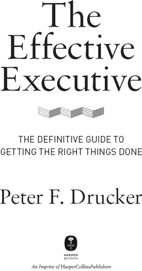

《卓有成效的管理者》50周年纪念版前言
如果你只读一本关于管理者自我管理的书，那应该是这本——彼得·德鲁克的经典之作《卓有成效的管理者》。无论你的组织规模大小，甚至你是否在管理一个组织都不重要。任何有责任把正确的事情做好的人——任何寻求如何最好地将自己投入到能产生最大影响的少数优先事项上的人——都是管理者。
我在三十岁出头时第一次读到《卓有成效的管理者》，这本书成为我个人发展的一个重要转折点。重读这本书时，我想起了这些教训是如何深深植入我心中的，几乎成为一套行为准则。德鲁克的一些例子和语言可能已经过时，但其洞见是永恒而现代的，与他五十多年前写下它们时一样有帮助。以下是我从彼得·德鲁克和这本书中学到的十个教训，我将其作为进入这位有史以来最伟大的管理思想家思想的一个小入口。
德鲁克写道：“一个人能否真正管理他人，这一点绝非已被充分证明。但一个人总是可以管理好自己。”如果你不首先对自己有最高的期望，你怎么能期望他人达到最高水平的表现呢？德鲁克提出了一条组织绩效法则：领导者的绩效与其团队成员的绩效之比保持恒定；因此，如果你想提高周围人的平均绩效，你必须首先提高自己的绩效。
德鲁克最引人注目的观点之一是，我们在大多数事情上都是无能的。关键问题不是如何将无能转化为卓越，而是要问：“一个人能把什么事情做得非同寻常地好？”这不可避免地导向一个结论：你的首要责任是确定你自己独特的能力——你能做得非同寻常地好的事情，你真正天生适合做的事情——然后让你的生活和事业与之直接对齐。德鲁克挑战道：“专注于弱点不仅愚蠢，而且是不负责任的。”德鲁克的”发挥长处”原则是否意味着永远不要面对我们（或他人的）缺陷？是，也不是。它意味着如果你天生是长跑运动员，就不要试图成为中后卫。同时，你必须解决那些直接阻碍你充分发挥长处的缺陷。当迈克尔·乔丹的篮球生涯接近尾声时，他已经无法像年轻时那样以同样的高度和力量飞向篮筐，所以他开始培养一项他以前从未拥有的能力：后仰跳投。他消除了自己长处中的一个关键弱点，将后仰跳投变成了球场上又一个”乔丹能杀死你”的武器。做你天生擅长的事，是的，但要不断变得更好；消除弱点，是的，但只在长处范围内消除。
如果你是一个被放在这个世界上发挥作用的工具，这个工具如何才能发挥最佳效果？有些人晚上工作效率高；有些人早上工作更好。有些人通过阅读吸收信息最好，有些人通过倾听。有些人在全身心投入时表现出色；有些人在一天中穿插多样化的短时工作时效果更好。有些人以项目为导向；有些人以流程为导向。有些人需要假期；有些人认为假期最好的部分是它们会结束。有些人喜欢团队，而有些人独自工作时能产生更大的影响。按照德鲁克的说法，我们的工作方式是天生的，就像我们是右撇子或左撇子一样。我很早就发现，我无法用下午的创意时间来替换早上的创意时间（早上的总是更好）。德鲁克给了我信心，让我在早上留出空白时间，并在创意时间里坚决保持独处。除了你自己，没有人能负责利用好你最佳的工作方式，你越早这样做，你就有越多年来获得数万小时良好利用的累积效应。
德鲁克教导我们：能被衡量的才能被管理。那么，如果我们不能精确衡量时间的去向，又怎能指望管理好时间呢？受德鲁克这一挑战的启发，我一直在用电子表格记录一个关键指标：每天投入的创造性工作时间，并给自己设定了每年保持一千小时以上创造性工作时间的硬性要求。这个机制让我始终保持在创造性工作的轨道上——做研究、发展概念、写作——尽管出差、团队领导和与高管合作的需求不断增加。但你也必须让时间产生价值。德鲁克写道，那些能完成众多困难任务的人的”秘诀”在于，他们一次只做一件事；他们拒绝让自己的时间被”零碎消耗——那根本算不上时间”。这需要有纪律地将时间整合成三种主要类型的时间块。第一，为个人思考时间创造不被打断的时间块，最好安排在一天中头脑最清醒的时段；这些安静的时段可能只有九十分钟，但即使是最忙碌的高管也必须定期这样做。第二，为处理人际事务和不可避免的突发状况创造刻意留白的非结构化时间块。第三，参加真正重要的会议，特别要善用精心设计的例会，它们可以成为对话、辩论和决策的心跳节拍；并利用部分思考时间来准备和跟进会议。
那句常被引用的俏皮话”抱歉给你写了封长信，因为我没时间写短的”同样适用于会议：“抱歉把你困在这个冗长的会议里，因为我没时间准备一个简短的会议。”高效的人会形成一套让会议发挥最大价值的方法，并始终如一地执行。虽然好的会议方法有很多种，就像烤美味饼干的配方有很多种一样，但德鲁克强调了两个共同要素：带着明确目的进行准备（“我们为什么要开这个会？”）以及有纪律的跟进。那些能充分利用会议的人，往往花在准备会议上的时间比开会本身还要多得多。因为准备不足而召开冗长低效的会议，浪费他人的时间，无异于偷走他们生命的一部分。虽然我们都必须主持或参加会议，但应该将会议限制在那些能产生最大价值的范围内；如果会议开始占据你的大部分时间，那么你的生命很可能正在被虚度。
我们不断被各种情况、机会、问题、事件的暴风雪袭击——所有这些似乎都需要做决定。是。否。行动。暂停。买入。卖出。进攻。撤退。接受。拒绝。回复。忽略。投资。收割。招聘。这感觉像是混乱，但最高效的人能在混乱中找到规律。在德鲁克看来，我们很少面对真正独特的、一次性的决策。而任何好的决策都有其开销成本：它需要争论和辩论，需要反思和专注的时间，还需要投入精力确保卓越执行。因此，考虑到这些开销成本，更好的做法是放大视野，做出少数几个可以适用于大量具体情况的重大通用决策，在其中找到规律——简而言之，从混乱走向概念。可以把它想象成沃伦·巴菲特做投资决策的方式。巴菲特学会了把绝大多数可能性当作背景噪音忽略掉。相反，他只做少数几个重大决策——比如从以极低价格购买平庸公司转向以合理价格购买优秀的盈利机器——然后一遍又一遍地复制这个通用决策。对德鲁克而言，那些理解巴菲特所说的”不作为可以是非常明智的行为”的人，比那些在没有连贯概念的情况下做出数百个决定的人要高效得多。
当我的一位朋友成为一所顶尖大学董事会主席时，他提出了一个问题：“我怎么知道自己做得很出色？”我思考了德鲁克会怎么说，然后回答：“找出一件最能为大学未来做出贡献的大事，并推动它完成。如果你做出了一个独特的贡献——一个没有你的领导就不会发生的关键决策（即使没有人会因为你的催化作用而给你功劳）——那么你就做出了巨大的贡献。”德鲁克把这个理念应用到他自己的咨询工作中。当我问他为客户贡献了什么时，他谦虚地说：“通常我从他们那里学到的比他们从我这里学到的更多。”然后，他停顿了一下以加强效果，补充道：“当然，在每个案例中，都有一个绝对根本性的决策是没有我就不会做出的。”什么是没有你就不会发生的那个绝对根本性的贡献？
一份不断扩展的待办清单，如果没有配套的”停止清单”，就是缺乏纪律的表现。专注于优先事项意味着清除杂乱。有时候，处理堆满问题的盘子的最好方法，就是把整堆东西扔进垃圾桶，洗干净盘子，重新开始。最重要的是，我们不能因为忙于应对最大的问题、沉溺于过去的错误，而让最大的机会挨饿。从过去转向未来，向前创造，始终问自己：“下一步是什么？”然而，当过去的问题吵着要我们关注，当我们生活在之前积累的遗留问题中时，该如何做到这一点？德鲁克以一个问题的形式给出了答案，这是他武器库中最有影响力的问题之一：如果今天要决定是否开始你已经在做的事情（进入一个业务、雇用一个人、制定一项政策、启动一个项目等），你会做吗？如果不会，那你为什么还在坚持？
#9：精益运营。
德鲁克最重要的洞见之一是，组织在一个关键方面像生物有机体：内部质量的增长速度快于外部表面；因此，随着组织的成长，越来越多的能量被转移到管理内部质量上，而不是贡献给外部世界。将此与另一个德鲁克式的真理结合起来：一个合适的人在关键位置上的成就，远超把这个位置分给多个B级选手的综合成就。找到更好的人，给他们真正重要的事情做，扩大他们的责任，让他们工作。抵制根据特定个性重新设计岗位的诱惑（除非是极其罕见的天才），因为这将不可避免地创造出你不需要的岗位。“人越少，规模越小，内部活动越少，”德鲁克写道，“组织就越接近完美。”
#10：做有用的人。
我36岁时，《工业周刊》杂志的编辑汤姆·布朗不知怎么让德鲁克邀请我去加州克莱蒙特拜访他。有一天，我在斯坦福上完课后，打开答录机，听到一个浑厚的奥地利口音：“我是彼得·德鲁克。”当我回电话安排日期时，我问是否应该和他的助理预约，他回答说：“我就是我自己的秘书。”他过着简朴的生活，没有员工，没有研究助理，没有正式的办公室。他用一台咔嗒作响的老式打字机打字，打字机与一张小桌子成90度角放置，在一栋普通房子的备用卧室里工作。他在客厅里会见有权势的CEO们，不是坐在办公桌前，而是坐在一把藤椅上。然而，就是用这种极简主义的方法，德鲁克成为了二十世纪最具影响力的管理思想家。
我与德鲁克的第一次会面是我人生中最重要的十天之一。彼得毕生致力于一个重大问题：我们如何使社会既更有生产力又更人性化？他的温暖——比如他打开前门时用双手握住我的手说：“柯林斯先生，非常高兴见到你；请进”——体现了他自己的人性。但他也极其高产。有一次，我问他最自豪的是他二十六本书中的哪一本，当时86岁的德鲁克回答说：“下一本！”他又写了十本。
那天结束时，彼得给我提出了一个挑战。我正处于离开斯坦福教职的关口，押注于一条自己创造的道路，我很害怕。“在我看来，你花了很多时间担心如何生存，”彼得说。“你可能会生存下来。”他继续说：“你似乎也在如何成功这个问题上花费了很多精力。但这是个错误的问题。”他停顿了一下，然后像禅师用竹棍敲打桌子一样说：“问题是：如何变得有用！”一位伟大的老师可以在三十秒内改变你的人生。
我们每个人都只有一段短暂的人生，和其他人一样，每周都是168小时。这些时间最终会累积成什么？其他人的生活会因此发生怎样的改变？会产生什么影响？彼得·德鲁克——一个人，没有组织，一栋普通的房子，一把藤椅——展示了一个高效的人能做出多大的贡献，以及我们永远不应该把影响力的规模与组织的规模混为一谈。最终，他达到了一位老师所能达到的最高境界：他所教授理念的榜样，他自己人生产生的巨大持久影响就是他教导的活生生的证明。
吉姆·柯林斯
科罗拉多州博尔德
2016年5月17日
管理类书籍通常讨论的是管理他人。本书的主题是为了效能(effectiveness)而管理自己。一个人能否真正管理他人，这一点远未得到充分证明。但一个人总是可以管理自己。事实上，不为效能而管理自己的管理者，不可能指望管理好他们的同事和下属。管理在很大程度上是以身作则。不知道如何在自己的工作中使自己有效的管理者，树立的是错误的榜样。
要想取得合理的成效，仅仅聪明、勤奋或知识渊博是不够的。卓有成效是一种独立的、不同的东西。但要做到卓有成效，也不需要特殊的天赋、特殊的才能或特殊的训练。作为管理者的卓有成效，需要做到某些事情——而且是相当简单的事情。它由少数几项实践组成，这些实践在本书中得到了阐述和讨论。但这些实践并非”与生俱来”。在四十五年的咨询工作中，我与大量组织中的众多管理者共事过——这些组织有大有小，包括企业、政府机构、工会、医院、大学、社区服务机构；涵盖美国、欧洲、拉丁美洲和日本——我从未遇到过一个”天生的”卓有成效的管理者。所有卓有成效的人都必须学习如何变得卓有成效。然后他们都必须不断实践，直到卓有成效成为一种习惯。但所有努力使自己成为卓有成效管理者的人都成功了。卓有成效是可以学会的——而且也必须学会。
卓有成效是管理者获得报酬的原因，无论他们是作为对他人绩效和自身绩效都负责的经理人，还是仅对自身绩效负责的专业贡献者。没有卓有成效，就没有”绩效”，无论投入多少智慧和知识，无论花费多少时间。然而，我们迄今对卓有成效的管理者关注甚少，这或许并不令人惊讶。组织——无论是商业企业、大型政府机构、工会、大型医院还是大型大学——毕竟都是全新的事物。一个世纪前，几乎没有人与这类组织有太多接触，除了偶尔去当地邮局寄封信。而作为管理者的卓有成效，意味着在组织中并通过组织实现卓有成效。直到最近，几乎没有人有理由关注卓有成效的管理者，或担心其他许多人的低效。然而现在，大多数人——尤其是那些受过一定教育的人——可以预期将在某种组织中度过整个职业生涯。在所有发达国家，社会已经成为一个由组织构成的社会。现在，个人的成效越来越取决于他或她在组织中发挥成效的能力，即作为管理者发挥成效的能力。而现代社会的成效及其运作能力——甚至可能是其生存能力——越来越取决于那些在组织中担任管理者的人的成效。卓有成效的管理者正迅速成为社会的关键资源，而作为管理者的卓有成效，是个人成就和成功的首要条件——对于职业生涯初期的年轻人和职业中期的人同样如此。
彼得·德鲁克
卓有成效的管理者不一定是当今常用意义上的领导者。例如，哈里·杜鲁门没有一丝魅力(charisma)，但他却是美国历史上最卓有成效的首席执行官之一。同样，在我65年的咨询生涯中共事过的一些最优秀的企业和非营利组织CEO，也不是刻板印象中的领导者。他们在个性、态度、价值观、优势和弱点方面各不相同。他们有的外向，有的近乎隐居；有的随和，有的控制欲强；有的慷慨，有的吝啬。
使他们都卓有成效的是，他们遵循同样的八项实践：
前两项实践为他们提供了所需的知识。接下来的四项帮助他们将知识转化为有效行动。最后两项确保整个组织都感到负责和有担当。
第一项实践是问什么事情是必须做的。注意，这个问题不是”我想做什么？“问什么事情是必须做的，并认真对待这个问题，对管理成功至关重要。不问这个问题，即使是最有能力的管理者也会变得无效。
1945年杜鲁门成为总统时，他清楚地知道自己想做什么：完成罗斯福新政中因二战而推迟的经济和社会改革。然而，当他问什么事情是必须做的时候，杜鲁门意识到外交事务具有绝对优先权。他安排自己的工作日从国务卿和国防部长的外交政策辅导开始。因此，他成为美国历史上在外交事务方面最卓有成效的总统。他在欧洲和亚洲遏制了共产主义，并通过马歇尔计划引发了50年的全球经济增长。
同样，杰克·韦尔奇意识到，当他接任通用电气首席执行官时，必须做的事情不是他想要启动的海外扩张。而是剥离那些无论多么盈利、却无法在其行业中做到第一或第二的通用电气业务。
“需要做什么？”这个问题的答案几乎总是包含不止一项紧急任务。但卓有成效的管理者不会分散精力。如果可能的话，他们会专注于一项任务。如果他们属于那些在工作日中需要变换节奏才能发挥最佳状态的人——这是相当大的一个群体——他们会选择两项任务。我从未遇到过同时处理两项以上任务还能保持高效的管理者。因此，在问完”需要做什么”之后，卓有成效的管理者会设定优先级并坚持执行。对于CEO来说，优先任务可能是重新定义公司使命。对于部门负责人来说，可能是重新定义部门与总部的关系。其他任务，无论多么重要或多么吸引人，都要推迟。然而，在完成最初的首要任务后，管理者会重新设定优先级，而不是继续处理原始清单上的第二项。他会问：“现在必须做什么？”这通常会产生新的、不同的优先事项。
再以美国最著名的CEO为例：根据杰克·韦尔奇的自传，他每五年都会问自己：“现在需要做什么？”每一次，他都会得出新的、不同的优先事项。
但韦尔奇在决定未来五年的工作重点之前，还会思考另一个问题。他会问自己，清单上排在前两三位的任务中，哪一项最适合由他本人来承担。然后他专注于那项任务；其他任务则委派给别人。卓有成效的管理者努力专注于他们能做得特别出色的工作。他们知道，企业的绩效取决于高层管理者的表现——如果高层表现不佳，企业也不会有好的表现。
卓有成效的管理者的第二个习惯——与第一个同样重要——是问：“这对企业来说是正确的事情吗？”他们不会问这对所有者、股价、员工或管理层是否正确。当然，他们知道股东、员工和管理层是重要的利益相关方，如果决策要有效，就必须得到他们的支持，或至少是默许。他们知道股价不仅对股东重要，对企业也很重要，因为市盈率决定了资本成本。但他们也知道，一个对企业不正确的决策，最终对任何利益相关者都不会是正确的。
这第二个习惯对家族企业的管理者尤为重要——在每个国家，家族企业都占大多数——特别是在做人事决策时。在成功的家族企业中，只有当一位亲属明显优于同级别的所有非亲属员工时，才会获得晋升。例如，在杜邦公司早期作为家族企业运营时，所有高层管理者（除了财务总监和律师）都是家族成员。创始人的所有男性后代都有权获得公司的入门级职位。但在入门级之上，家族成员只有在由主要由非家族管理者组成的评审团判定其能力和业绩优于同级别所有其他员工时，才能获得晋升。同样的规则在非常成功的英国家族企业J. Lyons & Company（现为一家大型企业集团的一部分）中也执行了一个世纪，当时该公司主导着英国的餐饮服务和酒店行业。
问”什么对企业是正确的？“并不能保证做出正确的决策。即使是最聪明的管理者也是人，因此难免会犯错误和有偏见。但不问这个问题几乎肯定会导致错误的决策。
管理者是行动者；他们执行。知识对管理者来说毫无用处，除非它被转化为行动。但在付诸行动之前，管理者需要规划他的路线。他需要思考期望的结果、可能的限制、未来的修订、检查节点，以及这对他如何分配时间的影响。
首先，管理者通过提问来定义期望的结果：“在未来18个月到两年内，企业应该期望我做出什么贡献？我将承诺实现什么结果？截止日期是什么？”然后他考虑行动的限制条件：“这个行动方案是否符合道德？在组织内是否可接受？是否合法？是否与组织的使命、价值观和政策相容？”肯定的回答并不能保证行动会有效。但违反这些限制条件肯定会使行动既错误又无效。
行动计划是意向声明，而非承诺。它不能成为束缚。它应该经常修订，因为每一次成功都会创造新的机会。每一次失败也是如此。商业环境、市场的变化也是如此，尤其是企业内部人员的变化——所有这些变化都要求修订计划。书面计划应该预见到灵活性的需要。
此外，行动计划需要建立一个将结果与预期进行对照检查的系统。卓有成效的管理者通常在行动计划中设置两个这样的检查点。第一个检查点在计划时间周期的中间；例如，在九个月时。第二个检查点在结束时，在制定下一个行动计划之前。
最后，行动计划必须成为管理者时间管理的基础。时间是管理者最稀缺、最宝贵的资源。而组织——无论是政府机构、企业还是非营利组织——本质上都是时间的浪费者。除非行动计划被允许决定管理者如何分配时间，否则它将毫无用处。
据说拿破仑曾说过，没有一场成功的战役是完全按照计划进行的。然而拿破仑也为他的每一场战役都做了规划，而且比之前任何将军都要细致得多。没有行动计划，管理者就会成为事件的囚徒。如果不在事件发展过程中定期检查和重新审视计划，管理者就无法判断哪些事件真正重要，哪些只是噪音。
当管理者将计划转化为行动时，需要特别关注决策、沟通、机会（而非问题）以及会议。我将逐一讨论这些方面。
一个决策只有在人们知道以下信息时才算真正做出：
大量组织决策之所以遇到麻烦，正是因为这些基础工作没有做到位。三十年前，我的一个客户在快速增长的日本市场失去了领导地位，原因是该公司在决定与一家新的日本合作伙伴建立合资企业后，从未明确由谁来通知采购人员，合作伙伴的规格是用米和公斤而不是英尺和磅来定义的——结果根本没有人传达这一信息。
定期审查决策——在事先约定的时间——与一开始就谨慎做出决策同样重要。这样，一个糟糕的决策可以在造成真正损害之前得到纠正。这些审查可以涵盖从结果到决策背后假设的任何内容。
这种审查对于所有决策中最关键、最困难的决策尤为重要，即关于人员聘用或晋升的决策。对人事决策的研究表明，只有三分之一的选择最终证明是真正成功的。三分之一可能是平局——既不是成功也不是彻底失败。还有三分之一是纯粹的失败。有效的管理者深知这一点，并会在六到九个月后检查他们人事决策的结果。如果他们发现某个决策没有达到预期效果，他们不会得出结论说那个人表现不佳。相反，他们会得出结论说是自己犯了错误。在管理良好的企业中，人们理解那些在新岗位上失败的人，尤其是晋升后失败的人，可能不是应该受到责备的人。
管理者还有责任对组织和同事负责，不容忍重要岗位上表现不佳的人。员工表现不佳可能不是他们的错，但即便如此，他们也必须被调离。在新岗位上失败的人应该有选择回到原来级别和薪资的工作的机会。这个选项很少被使用；这些人通常会自愿离开，至少在美国公司是这样。但这个选项的存在本身就能产生强大的效果，鼓励人们离开安全舒适的工作，接受有风险的新任务。组织的绩效取决于员工愿意承担这种风险。
系统性的决策审查也可以成为自我发展的有力工具。将决策结果与预期进行对比，可以让管理者了解自己的优势在哪里，哪些方面需要改进，以及在哪些方面缺乏知识或信息。它能揭示他们的偏见。很多时候，它还能表明他们的决策之所以没有产生结果，是因为他们没有把合适的人放在合适的岗位上。将最优秀的人分配到正确的位置是一项关键而艰难的工作，许多管理者对此敷衍了事，部分原因是最优秀的人已经太忙了。系统性的决策审查还能让管理者看到自己的弱点，特别是那些他们根本不擅长的领域。在这些领域，聪明的管理者不会做决策或采取行动。他们会授权他人。每个人都有这样的领域；世上不存在全能的管理天才。
大多数关于决策的讨论都假设只有高层管理者才做决策，或者只有高层管理者的决策才重要。这是一个危险的错误。决策在组织的每个层级都在做出，从个人专业贡献者到一线主管。在知识型组织中，这些看似低层级的决策极其重要。知识工作者(Knowledge workers)应该比任何人都更了解他们的专业领域——例如税务会计——因此他们的决策可能会对整个公司产生影响。做出好的决策是每个层级都需要的关键技能。在以知识为基础的组织中，需要明确地向每个人传授这一技能。
有效的管理者确保他们的行动计划和信息需求都被理解。具体来说，这意味着他们与所有同事——上级、下属和同级——分享他们的计划并征求意见。同时，他们让每个人知道完成工作需要什么信息。从下属到上级的信息流通常最受关注。但管理者需要同样关注同级和上级的信息需求。
我们都知道，正如切斯特·巴纳德1938年的经典著作《经理人员的职能》（The Functions of the Executive）所述，组织是靠信息而非所有权或命令维系在一起的。然而，太多高管的行为方式仍然像是信息及其流动是信息专家（比如会计）的工作。结果，他们获得了大量不需要也无法使用的数据，却很少得到真正需要的信息。解决这个问题的最佳方法是，每位高管明确自己需要什么信息，主动索取，并持续跟进直到获得。
优秀的高管专注于机会而非问题。当然，问题必须处理，不能视而不见。但解决问题无论多么必要，都不会产生成果，它只是防止损失。利用机会才能产生成果。
最重要的是，高效的高管将变化视为机会而非威胁。他们系统性地审视公司内外的变化，并问自己：“我们如何将这种变化转化为企业的机会？”具体而言，高管从以下七种情况中寻找机会：
高效的高管还确保问题不会压倒机会。在大多数公司，月度管理报告的第一页列出的是关键问题。更明智的做法是在第一页列出机会，把问题留到第二页。除非发生真正的灾难，否则在管理会议上，只有在机会被分析和妥善处理之后，才讨论问题。
人员配置是专注机会的另一个重要方面。高效的高管把最优秀的人才放在机会上，而不是问题上。一种为机会配置人才的方法是，要求管理团队的每位成员每六个月准备两份清单——一份是整个企业的机会清单，一份是整个企业中表现最佳的人员清单。这些清单经过讨论后合并成两份主清单，然后将最优秀的人才与最佳机会匹配。顺便说一下，在日本，这种匹配被视为大型企业或政府部门的一项重要人力资源任务；这种做法是日本企业的关键优势之一。
在二战期间及其后的美国，最引人注目、最有权力、也可以说是最高效的非政府高管不是商人，而是弗朗西斯·斯佩尔曼枢机主教，他是纽约天主教大主教区的负责人，也是多位美国总统的顾问。当斯佩尔曼接手时，教区已经破产且士气低落。他的继任者继承了美国天主教会的领导地位。斯佩尔曼常说，在他清醒的时间里，每天只有两次独处的机会，每次25分钟：早上起床后在私人小教堂做弥撒，以及睡前做晚祷。其他时间他总是与人在一起开会，从早餐与一个天主教组织开始，到晚餐与另一个组织结束。
高层管理者不像大型天主教教区的大主教那样受限。但每一项关于高管工作日的研究都发现，即使是初级管理者和专业人员，每个工作日也有超过一半的时间是与他人在一起——也就是在某种形式的会议中。唯一的例外是少数资深研究人员。即使只与另一个人交谈也算是会议。因此，如果高管想要高效，就必须让会议富有成效。他们必须确保会议是工作会议，而不是闲聊会议。
高效主持会议的关键是提前决定这是什么类型的会议。不同类型的会议需要不同的准备和不同的成果：
准备声明、公告或新闻稿的会议。 为使会议富有成效，必须有一位成员事先准备草稿。会议结束时，必须有一位预先指定的成员负责发布最终文本。
发布公告的会议——例如组织变革。 这种会议应仅限于公告本身及相关讨论。
一位成员汇报的会议。 只讨论该汇报内容。
多位或全体成员汇报的会议。 要么完全不讨论，要么讨论仅限于澄清性提问。或者，每份汇报后可以有简短讨论，所有参与者都可以提问。如果采用这种形式，汇报材料应在会议前分发给所有参与者。在这类会议中，每份汇报应限定在预设时间内——例如15分钟。
向召集会议的高管汇报信息的会议。 高管应倾听并提问。他或她应做总结，但不做陈述。
一种会议的唯一功能是让参与者能够出现在高管面前。斯佩尔曼枢机主教的早餐和晚餐会议就属于这种类型。这种会议无法变得有成效。它们是职位带来的代价。高级管理者的效能取决于他们能在多大程度上防止这类会议侵占他们的工作日。例如，斯佩尔曼之所以很有效能，很大程度上是因为他把这类会议限制在早餐和晚餐时间，让工作日的其余时间不受干扰。
让会议富有成效需要高度的自律。这要求管理者确定什么类型的会议是合适的，然后坚持那种形式。会议一旦达成其特定目的，就必须立即结束。优秀的管理者不会提出另一个议题来讨论。他们做出总结然后散会。
良好的后续跟进与会议本身同样重要。后续跟进的大师是阿尔弗雷德·斯隆，他是我所认识的最有效能的企业管理者。斯隆从1920年代到1950年代领导通用汽车，他每周六个工作日中的大部分时间都在开会——每周三天参加有固定成员的正式委员会会议，另外三天与通用汽车的个别高管或小组高管举行临时会议。在正式会议开始时，斯隆会宣布会议目的。然后他倾听。他从不做笔记，除了澄清令人困惑的问题外很少发言。会议结束时他做出总结，感谢参与者，然后离开。随后他立即写一份简短的备忘录，发给会议的某位参与者。在备忘录中，他总结讨论内容和结论，并详细说明会议中决定的任何工作任务（包括决定就该主题再开一次会议或研究某个问题）。他指定截止日期和负责该任务的管理者。他把备忘录副本发给所有出席会议的人。正是通过这些备忘录——每一份都是小型杰作——斯隆使自己成为一位杰出的有效能管理者。
有效能的管理者知道，任何一次会议要么是有成效的，要么是完全浪费时间。
最后一项实践是：不要思考或说”我”。要思考和说”我们”。有效能的管理者知道他们承担着最终责任，这种责任既不能分担也不能委托。但他们之所以拥有权威，是因为他们拥有组织的信任。这意味着他们在考虑自己的需求和机会之前，先考虑组织的需求和机会。这一条听起来可能很简单；其实不然，但必须严格遵守。
我们刚刚回顾了有效能管理者的八项实践。我要再加一项额外的实践。这一项非常重要，我要把它提升到规则的层面：先倾听，最后发言。
有效能的管理者在个性、优势、弱点、价值观和信念方面差异很大。他们唯一的共同点是把正确的事情做成了。有些人天生有效能。但需求太大，仅靠非凡的天赋无法满足。效能是一门学科。而且，像每一门学科一样，效能可以学习，也必须通过努力获得。
有效能是管理者的工作。毕竟，“产生效果”和”执行”几乎是同义词。无论他在企业还是医院工作，在政府机构还是工会，在大学还是军队，管理者首先被期望把正确的事情做成。这就是说，他被期望是有效能的。
然而，高效能的人在管理岗位上明显缺席。高智商在管理者中相当普遍。想象力也并不罕见。知识水平往往很高。但一个人的效能与他的智力、想象力或知识之间似乎没有什么相关性。才华横溢的人往往效能惊人地低下；他们没有意识到，卓越的洞察力本身并不是成就。他们从未学会，洞察力只有通过艰苦的系统性工作才能转化为效能。相反，在每个组织中都有一些高效能的踏实工作者(plodder)。当其他人在狂热和忙碌中奔波——非常聪明的人常常把这与”创造力”混为一谈——踏实工作者一步一个脚印地前进，像古老寓言中的乌龟一样最先到达终点。
智力、想象力和知识是必不可少的资源，但只有效能才能将它们转化为成果。它们本身只是设定了可以达到的上限。
所有这些应该是显而易见的。但为什么在一个关于管理者任务的其他各个方面都有大量书籍和文章的时代，效能却很少受到关注？
这种忽视的一个原因是，效能是组织内知识工作者(knowledge worker)的特定技术。直到最近，这类人还寥寥无几。
对于体力劳动，我们只需要效率(efficiency)；也就是说，把事情做对的能力，而不是把正确的事情做成的能力。体力劳动者总是可以根据可定义的、离散的产出的数量和质量来评判，比如一双鞋。在过去一百年里，我们已经学会了如何衡量效率以及如何定义体力劳动的质量——以至于我们已经能够极大地提高个体工人的产出。
过去，体力劳动者——无论是机器操作员还是一线士兵——在所有组织中都占主导地位。只需要少数有效能的人：那些在顶层发号施令、由他人执行的人。他们在整个劳动人口中所占比例极小，以至于我们可以（无论对错）认为他们的效能是理所当然的。我们可以依赖”天生之才”的供给——在任何人类活动领域中，总有少数人天生就知道其他人必须艰难学习才能掌握的东西。
这不仅适用于商业和军队。今天很难想象，一百年前美国内战时期的”政府”只意味着极少数人。林肯的战争部长手下只有不到五十名文职下属，其中大多数不是”管理者”和决策者，而是电报员。西奥多·罗斯福时代（约1900年）美国政府的整个华盛顿机构，可以舒适地安置在今天国家广场沿线的任何一栋政府大楼里。
过去的医院不知道什么是”医疗服务专业人员”——X光和化验技术员、营养师和治疗师、社会工作者等等——而现在每一百名患者就需要雇用多达二百五十名这样的人员。除了少数护士外，过去只有清洁工、厨师和女佣。医生是知识工作者，护士是他的助手。
换句话说，直到最近，组织的主要问题是体力劳动者的效率——他们按照指示行事。知识工作者在组织中并不占主导地位。
事实上，早期只有一小部分知识工作者是组织的一员。他们大多作为专业人士独立工作，最多有一个文员协助。他们的效能或缺乏效能只关乎他们自己，也只影响他们自己。
然而今天，大型知识组织已成为核心现实。现代社会是一个由大型有组织机构构成的社会。在每一个机构中，包括军队，重心已经转移到知识工作者身上——那些运用头脑而非肌肉力量或手工技能来工作的人。越来越多受过教育、学会运用知识、理论和概念而非体力或手工技能的人在组织中工作，他们的效能取决于能否为组织做出贡献。
现在，效能不能再被视为理所当然。现在，它不能再被忽视。
我们为体力劳动开发的那套令人印象深刻的测量和测试系统——从工业工程到质量控制——并不适用于知识工作。很少有什么事情比一个快速生产出漂亮蓝图却用于错误产品的工程部门更不讨上帝喜欢、更缺乏生产力了。做正确的事情才是使知识工作有效的关键。这无法用任何体力劳动的标准来衡量。
知识工作者无法被严密或详细地监督。他只能被帮助。但他必须自我指导，而且必须朝着绩效和贡献的方向自我指导，也就是朝着效能的方向。
《纽约客》杂志曾刊登过一幅漫画，画的是一间办公室，门上写着：查斯·史密斯，阿贾克斯肥皂公司总销售经理。墙上空空如也，只有一个大标语写着”思考”。办公室里的人把脚翘在桌上，对着天花板吐烟圈。外面两个年长的人走过，一个对另一个说：“但我们怎么能确定史密斯想的是肥皂呢？”
确实，我们永远无法确定知识工作者在想什么——然而思考正是他的特定工作；它是他的”行动”。
知识工作者的动力取决于他是否有效能，取决于他是否能够有所成就。如果他的工作缺乏效能，他对工作和贡献的投入很快就会枯萎，他将变成一个混日子的人，从早九点到晚五点敷衍了事。
知识工作者不生产本身就有效的东西。他不生产实物产品——一条沟渠、一双鞋子、一个机器零件。他生产知识、想法、信息。这些”产品”本身是无用的。必须有另一个人，另一个知识工作者，把它们作为输入并转化为自己的输出，它们才有现实意义。最伟大的智慧如果不应用于行动和行为，就只是毫无意义的数据。因此，知识工作者必须做一些体力劳动者不需要做的事情。他必须提供效能。他不能像一双做工精良的鞋子那样，依赖其产出本身所携带的效用。
知识工作者是当今高度发达的社会和经济体——美国、西欧、日本，以及越来越多的苏联——保持竞争力的唯一”生产要素”(factor of production)。
这一点对美国尤其如此。美国唯一可能具有竞争优势的资源就是教育。美国的教育可能有很多不足之处，但其规模之大是较贫穷的社会无法承受的。因为教育是我们所知的最昂贵的资本投资。一个自然科学博士代表着10万到20万美元的社会资本投资。即使是没有任何特定专业能力就大学毕业的年轻人，也代表着5万美元或更多的投资。只有非常富裕的社会才能负担得起这些。
因此，教育是美国这个最富裕的社会真正具有优势的领域——前提是它能够使知识工作者(knowledge worker)变得高效。而对于知识工作者来说，生产力意味着能够把正确的事情做好。它意味着效能(effectiveness)。
在现代组织中，每一位知识工作者都是”管理者”(executive)，只要他凭借其职位或知识，对组织的绩效和成果做出实质性贡献。这可能是企业推出新产品或获得更大市场份额的能力，也可能是医院为患者提供床边护理的能力，等等。这样的人必须做出决策；他不能只是执行命令。他必须为自己的贡献负责。而且，凭借他的知识，他应该比任何人都更有能力做出正确的决策。他可能被否决；他可能被降职或解雇。但只要他在这个岗位上，目标、标准和贡献就由他掌控。
大多数经理人都是管理者——尽管并非全部。但在现代社会，许多非经理人也正在成为管理者。因为正如我们近年来所了解到的，知识型组织既需要”经理人”，也需要在责任、决策和权力岗位上的”个人专业贡献者”。
这一事实或许可以通过最近一篇对越南丛林中一位年轻美国步兵上尉的报纸采访来最好地说明。
当记者问道：“在这种混乱的局势下，你如何保持指挥？”这位年轻的上尉说：“在这里，我只是那个负责的人。如果这些士兵在丛林中遇到敌人时不知道该怎么做，我离得太远，无法告诉他们。我的工作是确保他们知道该怎么做。他们怎么做取决于只有他们才能判断的情况。责任始终是我的，但决策权在现场的人手中。”
在游击战中，每个人都是”管理者”。
有许多经理人并不是管理者。换句话说，许多人是其他人的上级——而且往往管理着相当多的人——但仍然不会严重影响组织的绩效。制造工厂的大多数工头就属于这一类。他们是字面意义上的”监督者”。他们是”经理人”，因为他们管理他人的工作。但他们对工作的方向、内容、质量或执行方法既没有责任，也没有权力。他们仍然可以主要通过效率和质量来衡量和评估，使用我们为衡量和评估体力劳动者的工作和绩效而开发的标准。
相反，一个知识工作者是否是管理者，并不取决于他是否管理他人。在一家企业中，市场研究人员可能有两百人的团队，而最接近的竞争对手的市场研究人员可能只有他一个人，只有一个秘书作为他的团队。这对两人预期的贡献应该没有什么影响。这只是一个行政细节。当然，两百人可以完成比一个人多得多的工作。但这并不意味着他们产出和贡献更多。
知识工作不是由数量来定义的。知识工作也不是由成本来定义的。知识工作是由其成果来定义的。而对于这些成果，团队的规模和管理工作的大小甚至都不是衡量指标。
拥有许多人从事市场研究，可能会为成果带来洞察力、想象力和质量的增量，从而使公司具有快速增长和成功的潜力。如果是这样，两百人是划算的。但同样可能的是，经理会被两百人带来的所有问题以及他们之间互动产生的问题所淹没。他可能忙于”管理”，以至于没有时间进行市场研究和做出根本性决策。他可能忙于核对数字，以至于从不问这个问题：“当我们说’我们的市场’时，我们真正指的是什么？”结果，他可能未能注意到市场的重大变化，而这些变化最终可能导致他公司的衰落。
但没有团队的个人市场研究员可能同样高效或低效。他可能是使公司繁荣的知识和远见的来源。或者他可能花太多时间追查细节——学者们常常把脚注误认为研究——以至于什么都看不到、听不到，思考得更少。
在我们每一个知识型组织中，都有不管理任何人却是管理者的人。我们很少发现像越南丛林那样的情况，在那里任何时刻，整个团队的任何成员都可能被要求做出对整体有生死攸关影响的决策。但研究实验室里的化学家决定追求一条研究路线而不是另一条，可能做出决定公司未来的创业决策。他可能是研究主任。但他也可能是——而且往往是——一个没有管理责任的化学家，甚至可能是一个相当初级的人。同样，在账簿中把什么视为一个”产品”的决策，可能由公司的高级副总裁做出，也可能由一个初级员工做出。这在当今大型组织的所有领域都是如此。
我将那些知识工作者、管理者或个人专业人士称为”高管(executives)“——他们因其职位或知识，在日常工作中需要做出对整体绩效和成果有重大影响的决策。他们绝非知识工作者中的大多数。因为在知识工作中，与其他所有领域一样，也存在非技术性工作和例行公事。但他们在整个知识工作队伍中所占的比例，远比任何组织架构图所显示的要大得多。
这一点正开始被认识到——从众多为管理者和个人专业贡献者提供平行晋升阶梯和奖励机制的尝试中可见一斑。然而，很少有人意识到，即使在当今最平凡的组织中——无论是企业还是政府机构、研究实验室还是医院——有多少人必须做出具有重大且不可逆转影响的决策。因为知识的权威与职位的权威同样具有正当性。此外，这些决策与高层管理者的决策属于同一类型。
我们现在知道，最基层的管理者可能与公司总裁或政府机构负责人做着同样类型的工作：即计划、组织、整合、激励和衡量。他的范围可能相当有限，但在他的领域内，他就是一名高管。
同样，每一位决策者都与公司总裁或行政长官做着同样类型的工作。他的范围可能相当有限。但即使他的职能或名字既不出现在组织架构图上，也不出现在内部电话簿中，他仍然是一名高管。
无论是首席执行官还是初入职场者，他都需要卓有成效。
本书中使用的许多例子取自首席执行官的工作和经验——涉及政府、军队、医院、企业等领域。主要原因是这些案例容易获取，实际上往往是公开记录。而且大事比小事更容易分析和观察。
但本书本身并非一本关于高层人士做什么或应该做什么的书。它面向每一位知识工作者——那些对旨在提升组织绩效能力的行动和决策负有责任的人。它面向我所称的每一位”高管”。
高管所处的现实既要求他卓有成效，又使成效极难实现。事实上，除非高管努力变得卓有成效，否则他们所处的现实将把他们推向徒劳无功。
让我们快速看一下组织之外的知识工作者的处境，以理解这个问题。一位医生基本上没有成效问题。走进诊室的病人带来了使医生知识发挥效用所需的一切。在与病人相处的时间里，医生通常可以全身心投入。他可以将干扰降到最低。医生应做出的贡献是明确的。什么重要、什么不重要，由病人的病情决定。病人的主诉确定了医生的优先事项。而目标是既定的：恢复病人的健康，或至少让他更舒适。医生并不以善于组织自己和工作而著称。但很少有医生在成效方面遇到太大困难。
组织中的高管处于完全不同的境地。在他的处境中，有四大现实是他基本无法控制的。每一项都内嵌于组织以及高管的日常工作中。他别无选择，只能”与不可避免的现实合作”。但每一项现实都在施压，推向无成果和无绩效。
1. 高管的时间往往属于其他所有人。如果试图从操作层面（即通过其活动）来定义”高管”，就不得不将他定义为组织的俘虏。每个人都可以占用他的时间，而且每个人都这样做。任何高管似乎都无能为力。他通常不能像医生那样，把头探出门外对护士说：“接下来半小时我不见任何人。”就在这时，高管的电话响了，他不得不与公司最重要的客户、市政府的高级官员或他的上司通话——接下来的半小时就这样没了。
2. 除非高管采取积极行动改变他们生活和工作的现实，否则他们将被迫持续”运转”。
在美国，人们常常抱怨公司总裁或其他高管在负责整个企业并应将时间投入到企业方向指导上之后，仍然继续亲自管理营销或工厂。这有时被归咎于美国高管通常是从职能工作和运营岗位晋升上来的，当他们进入总体管理层时，无法摆脱多年养成的习惯。但在职业晋升路径完全不同的国家，也能听到同样的抱怨。例如在日耳曼语系国家，进入高层管理的常见途径是从中央秘书处起步，在那里一直作为”通才”工作。然而在德国、瑞典或荷兰的公司里，高层管理人员因”亲自操作”而受到的批评与美国一样多。而且，当我们审视各类组织时，这种倾向并不仅限于高层，而是渗透到整个管理层。这种”亲自操作”的倾向必定有其原因，而不仅仅是职业晋升路径或人性的普遍弱点。
根本问题在于管理者所面对的现实。除非他通过刻意的行动来改变它，否则事件的流动将决定他关注什么以及做什么。
依赖事件流动对医生来说是合适的。当病人走进来时，医生抬头问：“你今天为什么来？”他期望病人告诉他什么是相关的。当病人说：“医生，我睡不着觉，过去三周一直无法入睡”，他就是在告诉医生优先处理的领域是什么。即使医生在更仔细的检查后认定失眠只是一个更根本问题的次要症状，他也会采取措施帮助病人获得几个好觉。
但事件很少告诉管理者任何事情，更不用说真正的问题了。对医生而言，病人的主诉是核心，因为它对病人来说是核心。管理者面对的是一个复杂得多的世界。哪些事件重要且相关，哪些事件只是干扰，事件本身并不会表明。它们甚至不像病人的叙述对医生那样是一种症状线索。
如果管理者让事件流动决定他做什么、处理什么、认真对待什么，他就会在”操作”中消耗自己。他可能是个优秀的人，但他肯定会浪费自己的知识和能力，丢掉他本可能取得的那点效能(effectiveness)。管理者需要的是一套标准，使他能够专注于真正重要的事情，即贡献和成果，尽管这些标准在事件流动中找不到。
第三个将管理者推向低效的现实是，他身处一个组织之中。这意味着只有当其他人利用他的贡献时，他才是有效的。组织是一种放大个人力量的手段。它利用他的知识，将其作为其他知识工作者(knowledge workers)的资源、动力和愿景。知识工作者之间很少同步，正是因为他们是知识工作者。每个人都有自己的技能和关注点。一个人可能对税务会计或细菌学感兴趣，或者对培养和发展市政府未来的关键管理人员感兴趣。但隔壁的同事可能对成本会计的细节、医院经济学或城市宪章的法律问题感兴趣。每个人都必须能够利用他人产出的成果。
通常，对管理者效能最重要的人并不是他能直接控制的人。他们是其他部门的人，从组织角度来说是”平级”的人，或者是他的上级。除非管理者能够接触到这些人，能够使他的贡献对他们及其工作产生效用，否则他根本没有效能可言。
最后，管理者身处组织内部。
每一位管理者，无论他的组织是企业、研究实验室、政府机构、大型大学还是空军，都把内部——组织——视为近在眼前的直接现实。他只能通过厚重且扭曲的镜片看到外部，如果能看到的话。外部发生的事情通常甚至不是第一手获知的。它是通过组织的报告过滤器接收的，也就是说，以一种已经预先消化过的、高度抽象的形式呈现，这种形式将组织的相关性标准强加于外部现实。
但组织是一种抽象。从数学上讲，它必须被表示为一个点——即既没有大小也没有延展。即使是最大的组织，与它所存在的环境现实相比，也是不真实的。
具体来说，组织内部没有成果。所有成果都在外部。例如，唯一的商业成果是由客户产生的，客户通过愿意用自己的购买力交换企业的产品或服务，将企业的成本和努力转化为收入和利润。客户可能作为消费者根据供需的市场考量做出决定，也可能作为社会主义政府根据本质上非经济的价值偏好来调节供需。无论哪种情况，决策者都在企业外部而非内部。
同样，医院只有在病人方面才有成果。但病人不是医院组织的成员。对病人来说，医院只有在他住院期间才是”真实的”。他最大的愿望是尽快回到”非医院”的世界。
任何组织内部发生的都是努力和成本。我们习惯说企业中的”利润中心”，这不过是一种客气的委婉说法。实际上只有努力中心。组织产出成果所需的投入越少，它的工作就做得越好。市场需要的汽车或钢铁需要十万名员工来生产，这本质上是一个严重的工程缺陷。人员越少、规模越小、内部活动越少，组织就越接近完美——就其存在的唯一理由而言：为环境提供服务。
这个外部环境，这个真正的现实，在很大程度上无法从内部有效控制。充其量，结果是共同决定的，比如在战争中，结果取决于双方军队的行动和决策。在企业中，可以尝试通过促销和广告来塑造客户的偏好和价值观。但除了战时经济这样的极端短缺情况外，客户仍然拥有最终决定权和有效的否决权（这解释了为什么每个共产主义经济体一旦走出极端短缺阶段，在远未达到充足市场供应——即由客户而非政治当局做出真正最终决策——之前就会陷入困境）。但对管理者来说，组织内部是最显而易见的。内部对他来说具有即时性。内部的关系和联系、问题和挑战、暗流和闲言碎语处处触及他。除非他特别努力去直接接触外部现实，否则他会越来越聚焦于内部。他在组织中的职位越高，他的注意力就越会被内部的问题和挑战所吸引，而非外部发生的事件。
组织作为一种社会人工产物，与生物有机体非常不同。然而它遵循着支配动植物结构和大小的法则：表面积随半径的平方增长，而体积随立方增长。动物越大，就必须将越多的资源用于体积和内部任务——用于循环和信息传递、神经系统等等。
变形虫的每个部分都与环境保持持续、直接的接触。因此它不需要专门的器官来感知环境或维持自身的完整。但像人这样大型复杂的动物需要骨骼来支撑身体。它需要各种专门的器官来摄取和消化食物、呼吸和排气、将氧气输送到组织、繁殖等等。最重要的是，人需要大脑和多个复杂的神经系统。变形虫的大部分质量直接用于生存和繁殖。而高等动物的大部分质量——它的资源、食物、能量供应、组织——都用于克服和抵消结构的复杂性以及与外界的隔离。
组织不像动物那样以自身为目的，仅凭延续物种就算成功。组织是社会的器官，通过对外部环境的贡献来实现自身价值。然而，组织变得越大、表面上越成功，内部事务就越会占据管理者的兴趣、精力和能力，使他忽视真正的任务和在外部世界的真正效能。
这种危险如今因计算机和新信息技术的出现而加剧。计算机作为一个机械白痴，只能处理可量化的数据。这些数据它可以快速、准确、精确地处理。因此，它会大量产出以前无法获得的量化信息。然而，大体上只有组织内部发生的事情才能被量化——成本和生产数据、医院的病人统计数据或培训报告。相关的外部事件很少能以可量化的形式获得，等到能获得时往往为时已晚，无法采取任何行动。
这并不是因为我们对外部事件的信息收集能力落后于计算机的技术能力。如果这是唯一需要担心的问题，我们只需加大统计工作力度——计算机本身就能极大地帮助我们克服这种机械限制。问题在于，重要且相关的外部事件往往是定性的，无法量化。它们还不是”事实”。毕竟，事实是某人已经定义、分类，最重要的是赋予其相关性的事件。要获得数量，首先必须有概念。首先必须从无限纷繁的现象中抽象出一个特定方面，然后才能命名，最后才能计数。
沙利度胺（thalidomide）悲剧导致许多畸形婴儿出生，就是一个典型案例。当欧洲大陆的医生们收集到足够的统计数据，意识到畸形婴儿的出生数量明显高于正常水平——高到必定存在某个特定的新原因时——损害已经造成。在美国，这种损害得以避免，因为一位公共卫生医生察觉到一个定性变化——药物引起的轻微且本身无意义的皮肤刺痛——将其与多年前发生的一个完全不同的事件联系起来，并在沙利度胺实际投入使用之前发出了警报。
福特埃德塞尔(Ford Edsel)也提供了类似的教训。在埃德塞尔推出之前，所有可能获得的定量数据都已收集完毕。所有数据都表明，这是一款适合目标市场的正确汽车。然而，定性变化——美国消费者购买汽车的决策从收入导向转变为品味导向的市场细分——是任何统计研究都无法揭示的。等到这种变化能够用数字捕捉时，已经太晚了——埃德塞尔已经上市并且失败了。
外部真正重要的事件不是趋势本身，而是趋势的变化。这些变化最终决定了一个组织及其努力的成败。然而，这些变化必须通过感知来察觉；它们无法被计数、定义或分类。分类方法仍然会产生预期的数字——就像埃德塞尔的情况一样。但这些数字已经不再对应实际行为。
计算机是一台逻辑机器，这是它的优势——但也是它的局限。外部的重要事件无法以计算机（或任何其他逻辑系统）能够处理的形式来报告。然而，人类虽然不是特别擅长逻辑，却具有感知能力——这正是人类的优势。
危险在于，管理者可能会轻视那些无法简化为计算机逻辑和计算机语言的信息和刺激。管理者可能会对所有属于感知（即事件本身）而非事实（即事件发生之后）的东西视而不见。因此，大量的计算机信息可能会阻断我们接触现实的通道。
最终，计算机——这个潜在的最有用的管理工具——应该能让管理者意识到自己的隔绝状态，并让他们有更多时间接触外部世界。然而在短期内，存在患上严重”计算机依赖症”(computeritis)的危险。这是一种严重的病症。
计算机只是让一种早已存在的状况变得可见。管理者必然生活和工作在组织内部。除非他们有意识地努力去感知外部世界，否则内部环境可能会使他们对真正的现实视而不见。
管理者无法改变这四种现实。它们是其存在的必要条件。但正因如此，他必须认识到，除非付出特别的努力学会如何有效工作，否则他将是无效的。
提高有效性可能是我们唯一有望显著提升管理者绩效、成就和满意度的领域。
我们当然可以在许多岗位上使用能力更强的人。我们也可以使用知识更广博的人。然而我认为，在这两个领域，进一步努力不会带来太多期望。我们可能已经到了试图做本质上不可能或至少本质上无利可图之事的地步。但我们不可能培育出一个新的超人种族。我们必须用现有的人来运营我们的组织。
例如，关于管理者发展的书籍，在描绘”未来的管理者”时，实际上设想的是一个”全能之人”(man for all seasons)。我们被告知，一位高级管理者应该具备非凡的分析能力和决策能力。他应该善于与人合作，理解组织和权力关系，精通数学，具有艺术洞察力和创造性想象力。这似乎是在要求一个全能天才，而全能天才历来都是稀缺的。人类的经验强烈表明，唯一供应充足的是全面无能的人。因此，我们将不得不用那些最多只在某一方面能力出众的人来配置我们的组织。而且，这些人很可能在其他方面只具备最基本的天赋。
我们必须学会以这样的方式建设组织：任何在某一重要领域有优势的人都能够发挥这种优势（这将在下文第四章中深入讨论）。但我们不能指望通过提高能力标准来获得我们需要的管理绩效，更不用说寄希望于全能天才了。我们必须通过扩展人们可用的工具来扩展人类的能力范围，而不是期待人类能力的突然飞跃。
同样的道理或多或少也适用于知识。无论我们多么需要知识更多、更好的人，实现重大改进所需的努力可能远远超过任何可能的、更不用说任何可能实现的回报。
十五年前，当”运筹学”(operations research)刚刚兴起时，几位才华横溢的年轻从业者发表了他们对未来运筹学研究者的设想。他们总是要求一个博学多才的人，了解一切并能够在人类知识的每个领域做出卓越和原创的工作。根据其中一项研究，运筹学研究者需要在六十二个左右的主要科学和人文学科中具备高深的知识。如果能找到这样一个人，恐怕让他去研究库存水平或生产计划编程是完全浪费人才。
即使是不那么雄心勃勃的管理者发展计划，也要求在众多不同技能领域具备高深知识，如会计和人事、市场营销、定价和经济分析、心理学等行为科学，以及从物理学到生物学和地质学的自然科学。我们确实需要理解现代技术动态、现代世界经济复杂性以及现代政府迷宫般结构的人。
这些领域中的每一个都很庞大，事实上，即使对于专门从事这些领域研究的人来说也太庞大了。学者们倾向于专注于每个领域中相当小的部分，并不声称对整个领域有超过一般从业者水平的了解。
我并不是说人们不需要努力理解这些领域中每一个的基础知识。
当今受过高等教育的年轻人——无论是在商业、医学还是政府部门——有一个弱点：他们满足于精通某一狭窄的专业领域，却对其他领域表现出轻蔑。作为会计师，你不必详细了解如何处理”人际关系”；作为工程师，你也不必知道如何推广新品牌产品。但你有责任至少了解这些领域是关于什么的、为什么存在、以及它们试图实现什么。要成为一名优秀的泌尿科医生，你不必精通精神病学，但你最好了解精神病学是怎么回事。要在农业部做好工作，你不必是国际法律师，但你最好对国际政治有足够的了解，以免因狭隘的农业政策而造成国际损害。
然而，这与全能专家是完全不同的概念，全能专家和全能天才一样不太可能出现。相反，我们必须学会如何更好地利用在这些领域中任何一个方面表现出色的人。但这意味着要提高效能(effectiveness)。如果无法增加资源的供给，就必须提高其产出。而效能正是让能力和知识这些资源产生更多更好成果的唯一工具。
因此，效能因组织的需要而值得高度重视。作为管理者的工具以及他通向成就和绩效的途径，效能更值得优先考虑。
如果效能是人们与生俱来的天赋，就像有些人天生具有音乐天赋或绘画眼光一样，那我们的处境就很糟糕了。因为我们知道，在这些领域中的任何一个，只有极少数人天生具有卓越的天赋。因此，我们将不得不尽早发现具有高效能潜力的人，并尽我们所知地培训他们以发展其才能。但我们很难指望通过这种方式找到足够的人来承担现代社会的管理任务。事实上，如果效能是一种天赋，我们当前的文明将非常脆弱，甚至难以维系。作为一个由大型组织构成的文明，它依赖于大量能够以适度效能担任管理者的人。
然而，如果效能可以学习，那么问题就来了：它包含什么内容？需要学习什么？这是什么类型的学习？它是一种知识——通过系统形式和概念来学习的知识吗？它是一种像学徒那样学习的技能吗？还是一种通过反复做同样基本事情来学习的实践？
多年来我一直在思考这些问题。作为顾问，我与许多组织的管理者共事。效能对我来说在两个方面至关重要。首先，顾问按定义除了知识之外没有其他权威，他本身必须有效——否则他什么都不是。其次，即使是最有效的顾问也要依靠客户组织内部的人来完成任何事情。因此，他们的效能最终决定了顾问是否能做出贡献并取得成果，还是纯粹是”成本中心”，或者充其量只是一个宫廷弄臣。
我很快就发现，不存在所谓的”有效人格”。我所见过的有效管理者在气质和能力上差异很大，在他们做什么和如何做上也各不相同，在个性、知识、兴趣方面——事实上，在几乎所有区分人类的特征上都是如此。他们唯一的共同点是能够把正确的事情做好。
在我认识和共事过的有效管理者中，有外向的人，也有冷漠、内向的人，有些甚至病态地害羞。有些人是怪人，另一些则是令人痛苦地循规蹈矩的顺从者。有些人胖，有些人瘦。有些人忧心忡忡，有些人轻松自在。有些人酗酒相当厉害，另一些则滴酒不沾。有些人极具魅力和热情，有些人的个性还不如一条冷冻鲭鱼。他们中有少数人符合大众对”领导者”的想象。但同样也有一些毫无特色的人，在人群中不会引起任何注意。有些人是学者和认真的研究者，另一些则几乎没什么文化。有些人兴趣广泛，另一些除了自己狭窄的领域外什么都不知道，对其他事物也不关心。这些人中有些以自我为中心，甚至可以说是自私的。但也有一些人心胸宽广、思想慷慨。有些人只为工作而活，另一些人的主要兴趣在工作之外——在社区工作、在教会、在研究中国诗歌或现代音乐。在我遇到的有效管理者中，有些人使用逻辑和分析，另一些人主要依靠感知和直觉。有些人做决定很容易，有些人每次不得不行动时都痛苦万分。
换句话说，有效的管理者之间的差异，就像医生、高中教师或小提琴家之间的差异一样大。他们之间的差异与无效的管理者之间的差异一样大，事实上，在类型、个性和才能方面，他们与无效的管理者难以区分。
所有这些有效的管理者的共同点是那些使他们所拥有的一切和他们本身变得有效的实践。这些实践是相同的，无论有效的管理者是在企业还是政府机构工作，是作为医院管理者还是大学院长。
但每当我发现一个人，无论他的智力、勤奋、想象力或知识多么出色，如果他不遵循这些实践，我也会发现他是一个效能不足的管理者。
换句话说，卓有成效是一种习惯，是一系列实践的综合。而实践总是可以学习的。实践很简单，简单得近乎欺骗性；即使是七岁的孩子也能毫无困难地理解一项实践。但实践要做好却总是极其困难。它们必须通过习得来掌握，就像我们学习乘法表一样；也就是说，反复练习直到”6 x 6 = 36”成为不假思索的条件反射和根深蒂固的习惯。实践只能通过不断地练习、练习、再练习来学会。
每一项实践都适用于我小时候钢琴老师对我说的那番话。当时她很恼火地说：“你永远不可能像阿图尔·施纳贝尔那样演奏莫扎特，但你完全没有理由不能像他那样练习音阶。”钢琴老师忘了补充的是——也许因为这对她来说太明显了——即使是伟大的钢琴家，如果不练习音阶并持续练习，也无法像他们那样演奏莫扎特。
换句话说，任何具有正常天赋的人都没有理由不能在任何实践中获得胜任能力。精通可能会与他无缘，因为这可能需要特殊的才能。但卓有成效所需要的是胜任能力。所需要的是”音阶”。
本质上有五种这样的实践——五种必须习得才能成为卓有成效的管理者的思维习惯：
卓有成效的管理者知道他们的时间花在哪里。他们系统地管理那些可以由自己控制的少量时间。
卓有成效的管理者专注于对外的贡献。他们将努力聚焦于成果而非工作本身。他们首先问的是”期望我取得什么成果？“而不是从要做的工作开始，更不是从工作的技术和工具开始。
卓有成效的管理者善于利用长处——他们自己的长处、上司的长处、同事的长处和下属的长处；以及情境中的长处，也就是他们能够做到的事情。他们不在弱点上下功夫。他们不从自己做不到的事情开始。
卓有成效的管理者集中精力于少数几个能产生卓越成果的重要领域。他们强迫自己设定优先次序并坚持优先决策。他们知道别无选择，只能先做最重要的事——而次要的事根本不做。否则就会一事无成。
最后，卓有成效的管理者做出有效的决策。他们知道这首先是一个系统问题——在正确的顺序中采取正确的步骤。他们知道有效的决策总是基于”不同意见”的判断，而非基于”对事实的共识”。他们还知道，快速做出许多决策意味着做出错误的决策。需要的是少数但根本性的决策。需要的是正确的战略，而非花哨的战术。
这些就是管理者卓有成效的要素——也是本书的主题。
大多数关于管理者任务的讨论都从建议规划工作开始。这听起来非常合理。唯一的问题是它很少奏效。计划总是停留在纸上，总是停留在良好的意愿上。它们很少转化为成就。
根据我的观察，卓有成效的管理者不是从任务开始的。他们从时间开始。他们也不是从规划开始的。他们首先弄清楚自己的时间实际上花在了哪里。然后他们尝试管理时间，削减那些非生产性的时间需求。最后，他们将”可自由支配的”时间整合成尽可能大的连续时间段。这个三步过程：
是管理者卓有成效的基础。
卓有成效的管理者知道时间是限制因素。任何过程的产出上限都由最稀缺的资源决定。在我们称之为”成就”的过程中，这个资源就是时间。
时间也是一种独特的资源。在其他主要资源中，金钱实际上相当充裕。我们早就应该认识到，限制经济增长和活动的是对资本的需求，而非资本的供给。人——第三种限制性资源——可以雇用，尽管很少能雇到足够多的优秀人才。但时间却无法租借、雇用、购买或以其他方式获得更多。
时间的供给完全没有弹性。无论需求多高，供给都不会增加。它没有价格，也没有边际效用曲线。此外，时间完全易逝且无法储存。昨天的时间已经永远消逝，再也不会回来。因此，时间总是极度短缺。
时间完全不可替代。在一定限度内，我们可以用一种资源替代另一种资源，例如用铜替代铝。我们可以用资本替代人力劳动。我们可以使用更多的知识或更多的体力。但时间没有替代品。
一切都需要时间。它是唯一真正普遍的条件。所有工作都在时间中进行并消耗时间。然而大多数人却把这种独特的、不可替代的、必需的资源视为理所当然。也许没有什么比对时间的精心呵护更能区分卓有成效的管理者了。
人类天生不善于管理自己的时间。
尽管人类和所有生物一样都有”生物钟”——任何乘坐喷气式飞机跨越大西洋的人都会发现这一点——但心理学实验表明，人类缺乏可靠的时间感知能力。被关在看不到室外光线明暗变化房间里的人，很快就会完全丧失时间感。即使在完全黑暗中，大多数人仍能保持空间感。但即使开着灯，在密闭房间里待上几个小时，大多数人就无法估计过了多长时间。他们既可能严重低估在房间里待的时间，也可能严重高估。
因此，如果我们依赖记忆，就无法知道时间是如何被使用的。
我有时会请那些对自己记忆力颇为自信的管理者写下他们对自己时间分配的估计。然后我把这些估计锁起来，放上几周或几个月。在此期间，让这些管理者实际记录自己的时间使用情况。结果显示，他们认为自己使用时间的方式与实际记录之间几乎没有相似之处。
有一位公司董事长绝对确信自己的时间大致分为三部分。他认为三分之一的时间花在高级管理人员身上，三分之一花在重要客户身上，还有三分之一用于社区活动。但六周的实际活动记录清楚地表明，他在这些方面几乎没有花费任何时间。这些是他知道自己应该花时间去做的事情——因此记忆一如既往地迎合他，告诉他这些就是他实际花费时间的事情。然而记录显示，他大部分时间都在充当调度员的角色，追踪他个人认识的客户的订单，并不断打电话给工厂催问这些订单。这些订单大多数本来就在正常处理中，他的干预只会造成延误。但当他的秘书第一次拿着时间记录进来时，他根本不相信。又做了两三次时间记录，才让他相信在时间使用问题上，必须相信记录而不是记忆。
因此，卓有成效的管理者知道，要管理好自己的时间，首先必须了解时间实际上花在了哪里。
总是存在各种压力，导致时间被低效和浪费地使用。任何管理者，无论是否担任管理职务，都必须花费大量时间在毫无贡献的事情上。很多时间不可避免地被浪费了。在组织中职位越高，组织对其时间的要求就越多。
一家大公司的负责人曾告诉我，在担任首席执行官的两年里，除了圣诞节和元旦，他每天晚上都要”外出就餐”。所有其他晚餐都是”官方”活动，每次都要浪费好几个小时。然而他看不到任何其他选择。无论是为服务了五十年即将退休的员工举办的晚宴，还是为公司业务所在州的州长举办的晚宴，首席执行官都必须出席。礼仪活动是他的职责之一。我的朋友并不幻想这些晚宴对公司或他个人的娱乐和自我发展有任何贡献。但他必须出席并优雅地用餐。
类似的时间浪费在每位管理者的生活中比比皆是。当公司最重要的客户打来电话时，销售经理不能说”我很忙”。他必须倾听，即使客户只是想聊聊上周六的桥牌比赛，或者他女儿能否进入理想大学的机会。医院管理者必须参加每一个员工委员会的会议，否则医生、护士、技术人员等就会觉得受到了冷落。政府官员最好在国会议员打电话询问某些信息时认真对待，尽管这些信息用更少的时间就能从电话簿或《世界年鉴》中查到。整天都是如此。
非管理人员的情况也好不到哪里去。他们同样被各种时间要求所困扰，这些要求对他们的生产力几乎没有贡献，却又不能忽视。
因此，在每一个管理岗位上，大部分时间必然会浪费在那些看似必须做、却几乎没有贡献的事情上。
然而，管理者的大多数任务要达到最低限度的效果，都需要相当大块的时间。如果一次投入的时间少于这个最低限度，纯粹是浪费。什么也完成不了，只能从头再来。
例如，写一份报告可能需要六到八个小时，至少初稿是这样。如果在三周内每天花十五分钟、分两次来完成，总共花七个小时在这项任务上，是毫无意义的。最后得到的只是一张画满涂鸦的白纸。但如果能锁上门、断开电话、不受打扰地坐下来与报告搏斗五六个小时，就很有可能完成我所说的”零稿”——初稿之前的那一稿。从那以后，确实可以分小段工作，可以逐节、逐段、逐句地重写、修改和编辑。
实验也是如此。必须有连续五到十二个小时来安装设备并至少完成一次完整的运行。否则，一旦被打断就必须从头开始。
因此，要想卓有成效，每一位知识工作者，尤其是每一位管理者，都需要能够支配相当大块的时间。即使零散时间的总和是一个可观的小时数，也是不够的。
这一点在与人共事所花费的时间上尤为明显，而与人共事当然是管理者工作的核心任务。人是时间的消费者。而且大多数人是时间的浪费者。
与人交流仅花几分钟是没有成效的。如果想要传达任何信息，就必须花费相当大的最小时间单位。那些认为自己能在十五分钟内讨论下属的计划、方向和绩效的管理者——很多管理者确实这样认为——只是在自欺欺人。如果想要产生真正的影响，至少需要一个小时，通常还要更多。而如果要建立人际关系，则需要无限多的时间。
与其他知识工作者(knowledge workers)的关系尤其耗时。无论原因是什么——是因为知识工作中上下级之间缺乏阶级和权威的障碍，还是因为知识工作者更看重自己——知识工作者对上级和同事的时间要求都比体力劳动者大得多。此外，由于知识工作无法像体力劳动那样被衡量，你无法用几句简单的话告诉知识工作者他是否在做正确的工作以及做得如何。你可以对体力劳动者说：“我们的工作标准是每小时五十件，而你只完成了四十二件。”但你必须与知识工作者坐下来，与他一起思考应该做什么以及为什么，然后才能知道他的工作是否令人满意。这是非常耗时的。
由于知识工作者自我指导，他必须理解对他期望的成就是什么以及为什么。他还必须理解那些需要使用他知识产出的人的工作。为此，他需要大量的信息、讨论和指导——所有这些都需要时间。与普遍看法相反，这种时间需求不仅针对他的上级，同样也针对他的同事。
知识工作者必须专注于整个组织的成果和绩效目标，才能取得任何成果和绩效。这意味着他必须留出时间，将视野从自己的工作转向成果，从自己的专业转向外部——只有在外部才有绩效可言。
在大型组织中，凡是知识工作者表现出色的地方，高层管理者都会定期抽出时间，与他们坐下来交谈，有时甚至包括最基层的新人，并问道：“关于你的工作，我们这些组织领导者应该了解什么？关于这个组织，你想告诉我什么？你看到了哪些我们没有利用的机会？你看到了哪些我们仍然视而不见的危险？总的来说，关于这个组织，你想从我这里了解什么？”
这种从容的交流在政府机构和企业、研究实验室和军队参谋部同样需要。没有它，知识工作者要么失去热情变成混日子的人，要么将精力投向自己的专业而远离组织的机会和需求。但这样的交流需要大量时间，尤其是它应该是不慌不忙、轻松自在的。人们必须感觉到”我们有的是时间”。这实际上意味着可以快速完成很多事情。但这也意味着必须提供大块的、不受太多干扰的时间。
将人际关系与工作关系混合是耗时的。如果匆忙行事，就会产生摩擦。然而任何组织都建立在这种混合之上。人们在一起的时间越多，他们纯粹的互动就会占用越多时间，留给工作、成就和成果的时间就越少。
管理学文献早就知道”管理幅度”(span of control)定理，该定理认为，如果下属必须在工作中相互协作（例如，一位会计、一位销售经理和一位生产经理，这三人必须相互配合才能取得成果），那么一个人只能管理少数几个人。另一方面，不同城市的连锁店经理不需要相互协作，因此理论上任何数量的人都可以向一位区域副总裁汇报，而不违反”管理幅度”原则。无论这个定理是否有效，毫无疑问的是，必须一起工作的人越多，花在”互动”上的时间就越多，而不是花在工作和成就上。大型组织通过大量消耗管理者的时间来创造力量。
因此，组织越大，管理者实际拥有的时间就越少。了解自己的时间花在哪里并管理好有限的时间就变得越重要。
组织中的人越多，关于人事的决策就越频繁出现。但仓促的人事决策很可能是错误的决策。好的人事决策所需的时间量大得惊人。决策涉及什么往往只有在反复思考多次之后才会变得清晰。
在我有机会观察的卓有成效的管理者中，有些人做决策很快，有些人做得相当慢。但无一例外，他们做人事决策都很慢，而且在真正做出承诺之前会反复斟酌多次。
通用汽车公司前负责人小阿尔弗雷德·P·斯隆据说从不在人事决策第一次提出时就做出决定。他会先做出一个初步判断，通常这也需要几个小时。然后，几天或几周后，他会重新审视这个问题，就像从未处理过一样。只有当他连续两三次得出相同的人选时，他才愿意付诸行动。斯隆以善于挑选”赢家”而闻名。但当被问及他的秘诀时，据说他回答道：“没有秘诀——我只是接受了一个事实：我第一次想到的人选很可能是错误的——因此在采取行动之前，我会把整个思考和分析过程重复几遍。”然而斯隆绝非一个有耐心的人。
很少有高管需要做出如此重大影响的人事决策。但我所观察到的所有卓有成效的高管都明白，如果想得出正确答案，他们必须花费数小时连续不间断地思考人事决策问题。
一家中型政府研究机构的主任在处理一位高级行政人员的问题时深刻体会到了这一点。这位行政人员年过五十，在该机构工作了一辈子。多年表现出色后，他突然开始走下坡路。他显然已无法胜任工作。但即使公务员制度允许，也不能解雇他。当然可以降职，但主任认为这会毁掉这个人——而机构欠他多年忠诚高效服务的情分和忠诚。然而他也不能继续留在行政岗位上；他的缺点太明显了，实际上正在削弱整个机构。
主任和副手多次讨论这个情况，却找不到出路。但当他们坐下来，用一个安静的晚上花三四个小时不间断地思考这个问题时，“显而易见”的解决方案终于浮现了。这个方案如此简单，以至于两人都无法解释为什么之前没有想到。它让这个人离开了不适合的岗位，转到一个需要有人做、但又不需要他已无法胜任的行政能力的工作上。
这类决策需要大块连续不间断的时间：比如派谁加入研究特定问题的工作组；赋予新组织单位的经理或老组织单位的新经理什么职责；是提拔一个具备岗位所需营销知识但缺乏技术培训的人来填补空缺，还是任用一个一流的技术人才但缺乏营销背景，等等。
人事决策耗时的原因很简单：上帝创造人类时并非将其作为组织的”资源”。人不会以恰好适合组织任务的尺寸和形状出现——也无法被加工或重塑以适应这些任务。人充其量只是”大致合适”。因此，要靠人来完成工作（而没有其他资源可用），就需要大量的时间、思考和判断。
东欧的斯拉夫农民有句谚语：“脚上没有的，脑子里得有。”这可以被视为能量守恒定律的一个奇妙版本。但它更像是一种”时间守恒定律”。我们从”腿”的任务——即体力劳动、手工劳动——中节省的时间越多，就越需要花在”脑”的工作——即知识工作(knowledge work)上。我们让普通工人、机器操作员和文员的工作越轻松，知识工作者需要做的就越多。知识无法从工作中”抽离”出去。它必须被放回某处——而且是以更大量、更连贯的形式。
对知识工作者的时间需求并没有下降。机器操作员现在每周只工作四十小时——很快可能只工作三十五小时，却比以往任何人生活得更好，无论他工作多少或多富有。但机器操作员的闲暇不可避免地要由知识工作者更长的工作时间来支付。在当今工业化国家，不是高管们有如何打发闲暇时间的问题。恰恰相反，他们到处都在工作更长时间，需要满足对其时间的更大需求。而高管时间的稀缺只会越来越严重，不会好转。
一个重要原因是，高生活水平以创新和变革的经济为前提。但创新和变革对高管提出了超乎寻常的时间要求。在短时间内能想到和做到的，只是想已经知道的事，做一直在做的事。
近来有大量讨论试图解释为什么英国经济自二战以来落后如此之多。原因之一肯定是老一代英国商人试图像他们的工人一样轻松，工作同样短的时间。但这只有在企业或行业固守旧有常规、回避创新和变革时才可能做到。
由于所有这些原因——组织的需求、人的需求、变革和创新的时间需求——高管能够管理自己的时间将变得越来越重要。但除非首先知道时间花在了哪里，否则连管理时间的念头都不会有。
在记录时间之前，人们无法知道时间都去了哪里，更无法尝试管理时间——这一点我们在近一个世纪前就已经认识到了。也就是说，自1900年左右科学管理(Scientific Management)开始记录完成特定体力劳动所需的时间以来，我们就已经了解了这一点在体力劳动（无论是熟练还是非熟练工作）方面的应用。如今，几乎没有哪个国家在工业方法上落后到不对体力劳动者的操作进行系统计时的程度。
我们已经将这些知识应用于时间不太重要的工作领域；也就是说，在那些时间利用与时间浪费之间的差异主要体现在效率和成本上的领域。但我们还没有将其应用于日益重要的工作，尤其是那些必须应对时间问题的工作：知识工作者(knowledge worker)的工作，特别是管理者的工作。在这里，时间利用与时间浪费之间的差异体现在效能(effectiveness)和成果上。
因此，提高管理者效能的第一步是记录实际的时间使用情况。
记录的具体方法在此不必详述。有些管理者自己保持这样的时间日志。另一些人，比如刚才提到的那位公司董事长，让秘书代为记录。重要的是确保记录完成，而且记录是在”实时”进行的，即在事件发生时记录，而不是事后凭记忆补记。
许多高效的管理者持续保持这样的日志，并每月定期查看。至少，高效的管理者会按照固定的时间表，每年两次左右，连续三到四周对自己进行时间记录。每次抽样之后，他们都会重新思考并调整自己的日程安排。但六个月后，他们总是会发现自己又”滑入”了在琐事上浪费时间的状态。时间利用确实会随着练习而改善。但只有持续努力管理时间，才能防止这种滑坡。
因此，系统的时间管理是下一步。人们必须找出那些非生产性的、浪费时间的活动，并尽可能地消除它们。这需要问自己一系列诊断性问题。
1. 首先，尝试识别并消除那些根本不需要做的事情，那些纯粹浪费时间而毫无成果的事情。要找出这些时间浪费，需要对时间记录中的所有活动提问：“如果根本不做这件事会怎样？”如果答案是”什么也不会发生”，那么显然结论就是停止做它。
令人惊讶的是，忙碌的人们正在做的许多事情，即使不做也不会有人注意到。例如，那些无数的演讲、宴会、委员会成员身份和董事职位，它们占用了忙碌人士大量的时间，这些人很少享受这些活动，也很少做得好，但年复一年地忍受着，仿佛这是上天降下的埃及瘟疫。实际上，人们只需要学会说”不”——如果某项活动对自己的组织、对自己、或对需要为之服务的组织都没有贡献的话。
上面提到的那位每晚都要外出用餐的首席执行官，在分析这些宴会时发现，至少有三分之一的宴会即使没有公司高层管理人员出席也能照常进行。事实上，他发现（多少有些尴尬）他接受的许多邀请并不受主人欢迎。他们邀请他只是出于礼貌。但他们完全预期会被拒绝，当他接受时反而不知道该如何安排他。
我还没有见过任何一位管理者，无论级别或职位如何，不能将大约四分之一的时间需求扔进废纸篓而不被任何人注意到它们的消失。
2. 下一个问题是：“我的时间日志上的哪些活动可以由别人做得同样好，甚至更好？”
那位忙于应酬的公司董事长发现，另外三分之一的正式宴会可以由公司的任何一位高级管理人员代劳——这些场合需要的只是公司的名字出现在宾客名单上。
多年来，管理界一直在大谈”授权”(delegation)。每一位管理者，无论在什么组织——企业、政府、大学还是军队——都被告诫要成为更好的”授权者”。事实上，大型组织中的大多数管理者自己也不止一次地布道过这个主题。我还没有看到所有这些说教产生任何成果。没有人听从的原因很简单：按照通常的表述，授权毫无意义。如果它意味着别人应该做”我的工作”的一部分，那就是错误的。人们拿薪水是为了做自己的工作。如果它暗示——像通常的说教那样——最懒的管理者是最好的管理者，那不仅是胡说八道，而且是不道德的。
但我从未见过任何一位管理者在面对自己的时间记录时，不迅速养成把所有不需要亲自做的事情推给别人的习惯。第一眼看到时间记录就清楚地表明，根本没有足够的时间去做管理者自己认为重要的事情、自己想做的事情、以及自己承诺要做的事情。他能够处理重要事务的唯一方法，就是把任何可以由他人完成的事情都推给他人。
一个很好的例子是高管出差。C·诺斯科特·帕金森教授在他那些令人愉快的讽刺作品中指出，摆脱一个碍事上司最快的方法就是让他变成一个环球旅行者。喷气式飞机作为管理工具确实被高估了。很多出差是必须的，但大多数可以让下属去完成。出差对年轻人来说仍然是新鲜事。他们还年轻，能在酒店的床上睡个好觉。年轻人能承受疲劳——因此他们也会比那些更有经验、也许训练更好、但疲惫不堪的上司做得更好。
还有那些必须参加的会议，尽管会上不会发生任何别人处理不了的事情。还有那些在连初稿都没有的情况下就花费数小时讨论文件的时间。在研究实验室里，资深物理学家花时间为自己的某项工作撰写”通俗”新闻稿。然而周围有很多人具备足够的科学知识来理解物理学家想表达什么，他们能写出可读性强的英文，而物理学家只会说高等数学。总的来说，高管们所做的大量工作可以轻松地由他人完成，因此应该由他人来完成。
通常所说的”授权”(Delegation)是一种误解——实际上是一种误导。但是，把所有能由别人做的事情都清除掉，这样就不必授权，而是真正能专注于自己的工作——这才是效能的重大提升。
时间浪费的一个常见原因在很大程度上是高管可以控制并消除的。那就是他自己浪费了别人的时间。
这没有单一的症状。但有一个简单的方法可以发现。那就是问问其他人。有效能的高管已经学会系统地、毫不扭捏地问：“我做了什么浪费你的时间而又对你的效能没有贡献的事？”敢于提出这个问题，并且不怕听到真相，这是有效能高管的标志。
高管从事生产性工作的方式可能仍然是对他人时间的重大浪费。
一家大型组织的高级财务主管非常清楚他办公室的会议浪费了大量时间。这个人把所有直接下属都叫来参加每一次会议，不管议题是什么。结果会议规模太大。因为每个参与者都觉得必须表现出兴趣，每个人至少要问一个问题——大多数都不相关。结果会议无休止地拖延。但这位高级主管在询问之前并不知道，他的下属们也认为这些会议是在浪费他们的时间。由于意识到组织中每个人都非常重视地位和”知情权”，他担心未被邀请的人会感到被怠慢和被排斥。
然而现在，他用不同的方式满足下属的地位需求。他发出一份印刷表格，上面写着：“我已邀请【史密斯、琼斯和罗宾逊先生】于【周三下午3点】在【四楼会议室】与我会面，讨论【明年的资本拨款预算】。如果您认为需要这些信息或想参与讨论，请来参加。但无论如何，您都会立即收到讨论的完整摘要和所做的任何决定，以及征求您意见的请求。”
以前有十几个人来参加并待上整个下午，现在只有三个人和一个做记录的秘书，在一个小时左右就把事情解决了。而且没有人感到被排斥。
许多高管都知道这些无效和不必要的时间需求；但他们不敢削减。他们害怕错误地砍掉一些重要的东西。但这种错误如果犯了，可以很快纠正。如果削减得太狠，通常很快就会发现。
每一位新任美国总统一开始都会接受太多邀请。然后他意识到自己还有其他工作要做，而且大多数邀请并不能提高他的效能。于是，他通常会削减得太厉害，变得难以接近。然而几周或几个月后，媒体和广播就会告诉他，他正在”失去联系”。然后他通常会找到正确的平衡点，既不会被无效地利用，又能把公开露面作为他的全国讲坛。
事实上，高管削减过度的风险并不大。我们通常倾向于高估而不是低估自己的重要性，并得出结论认为太多事情只能由自己来做。即使是非常有效能的高管仍然做着许多不必要的、无效的事情。
但证明过度削减的危险只是虚惊一场的最好证据，是那些身患重病或严重残疾的人所经常达到的非凡效能。
一个很好的例子是哈里·霍普金斯，二战期间罗斯福总统的机要顾问。他是一个垂死的人，实际上几乎是一个死人，每走一步都是折磨，他每隔一天左右只能工作几个小时。这迫使他砍掉除真正重要事务之外的一切。他并没有因此失去效能；相反，正如丘吉尔曾经称呼他的那样，他成为了”问题核心之主”，比战时华盛顿的任何人都完成了更多的事情。
当然，这是一个极端的例子。但它说明了如果一个人真正努力，可以对自己的时间施加多大的控制，以及可以在不损失效能的情况下砍掉多少时间浪费者。
这三个诊断性问题涉及的是每位管理者都能在一定程度上控制的非生产性和耗时活动。每位知识工作者和管理者都应该问自己这些问题。然而，管理者同样需要关注因管理不善和组织缺陷而导致的时间浪费。糟糕的管理浪费每个人的时间——但首当其冲的是管理者自己的时间。
1. 首要任务是识别因缺乏系统或远见而导致的时间浪费。需要关注的症状是反复出现的”危机”——年复一年重复发生的危机。一个危机如果第二次出现，就绝不应该再发生第三次。
年度库存危机就属于这类情况。我们现在可以用计算机以更”英勇”的方式、花费更大的代价来应对它，但这算不上什么真正的改进。
反复出现的危机本应被预见到。因此，它要么可以被预防，要么可以被简化为普通职员就能处理的例行程序。“例行程序”(routine)的定义是：它使没有判断力的普通人能够完成以前需要近乎天才才能做到的事情；因为例行程序将一个非常能干的人在克服昨天危机时学到的东西，以系统化、分步骤的形式记录下来。
反复出现的危机并不仅限于组织的基层，它影响着每一个人。
多年来，一家相当大的公司每年十二月初都会遭遇这类危机。在一个高度季节性的行业中，最后一个季度通常是全年最低谷，第四季度的销售额和利润不容易预测。然而，每年管理层在第二季度末发布中期报告时都会做出盈利预测。三个月后，在第四季度，全公司上下就会手忙脚乱地采取紧急行动，以兑现高层管理者的预测。在三到五周内，管理团队中没有人能完成任何实际工作。解决这个危机只需要一笔之改：高层管理者现在不再预测一个确定的年终数字，而是预测一个范围内的结果。这完全满足了董事会、股东和金融界的需求。几年前曾经是危机的事情，现在在公司里甚至无人注意——而第四季度的业绩实际上比以前好得多，因为管理者的时间不再浪费在让结果符合预测上。
在麦克纳马拉先生被任命为国防部长之前，每年春天，在六月三十日财政年度结束前，类似的最后时刻危机都会震动整个美国国防系统。国防系统中的每一位管理者，无论是军方还是文职人员，都在五月和六月拼命寻找支出项目，以花掉国会为该财政年度拨付的资金。否则，他们担心必须退还这笔钱。（这种最后时刻的突击花钱也是苏联计划体制的痼疾。）然而，这个危机完全没有必要，麦克纳马拉先生立即就看出了这一点。法律一直允许将未花完但仍需要的资金存入一个过渡账户。
反复出现的危机不过是懒散和懈怠的症状。
多年前，当我刚开始做顾问时，我必须学会如何区分管理良好的工厂和管理不善的工厂——尽管我并不懂生产知识。我很快就学到，管理良好的工厂是一个安静的地方。一个”戏剧性”的工厂，一个在访客眼前上演”工业史诗”的工厂，是管理不善的。管理良好的工厂是无聊的。那里不会发生什么激动人心的事情，因为危机已经被预见并转化为例行程序。
同样，管理良好的组织是一个”沉闷”的组织。这类组织中”戏剧性”的事情是决定未来的根本性决策，而不是收拾昨天烂摊子的英雄壮举。
2. 时间浪费往往源于人员过剩。
我一年级的算术入门书问道：“如果两个挖沟工人需要两天挖一条沟，四个挖沟工人需要多长时间？”在一年级，正确答案当然是”一天”。然而，在管理者所关注的那类工作中，正确答案可能是”四天”，甚至是”永远”。
一个工作团队确实可能人手不足以完成任务。这样工作就会受损，即使能完成的话。但这不是常态。更常见的是团队人员过多而影响效率，因此越来越多的时间花在”互动”(interacting)上，而不是工作上。
人员过剩有一个相当可靠的症状。如果团队中的资深人员——尤其是管理者——将超过一小部分时间（也许十分之一）花在”人际关系问题”上，花在争执和摩擦上，花在管辖权争议和协作问题上，等等，那么这个团队几乎肯定人员过多。人们互相妨碍。人员已经成为绩效的障碍，而不是实现绩效的手段。在一个精简的组织中，人们有活动空间而不会相互碰撞，可以完成工作而不必一直解释自己在做什么。
人员过剩的借口总是”但我们必须有一个热力学专家（或专利律师、或经济学家）在团队里”。这个专家并没有被充分使用；他可能根本没被用到；但”我们必须让他在身边以防万一需要他”。（而且他总是”必须熟悉我们的问题”并且”从一开始就是团队的一部分”！）团队里应该只有日常大部分工作所需的知识和技能。那些偶尔可能需要的专家，或者可能需要就某些问题咨询的专家，应该始终留在团队之外。付费去咨询他们比把他们放在团队里要便宜得多——更不用说一个未被充分利用但技能过剩的人对整个团队效率的影响了。他能做的只有捣乱。
另一个常见的时间浪费是组织不良（malorganization）。其症状是会议过多。
会议本质上是对组织缺陷的妥协，因为人要么开会，要么工作。两者不能同时进行。在一个理想设计的结构中（当然在不断变化的世界里这只是一个梦想），不会有任何会议。每个人都会知道做好工作所需知道的一切。每个人都能获得做好工作所需的资源。我们开会是因为从事不同工作的人必须合作完成特定任务。我们开会是因为特定情况所需的知识和经验不存在于一个人的头脑中，而必须从几个人的经验和知识中拼凑起来。
会议总是会多得够呛。组织总是需要大量的协同工作，以至于善意的行为科学家试图创造”合作”机会的努力可能有些多余。但如果一个组织中的管理者花费超过相当小的一部分时间在开会上，这肯定是组织不良的信号。
每次会议都会产生一大堆后续小会议——有些正式，有些非正式，但都会拖延数小时。因此，会议需要有目的地引导。一个没有方向的会议不仅是麻烦；它是一种危险。但最重要的是，会议必须是例外而非常态。一个人人都在不停开会的组织，是一个没人能完成任何事情的组织。每当时间日志显示会议的脂肪变性——例如，每当组织中的人发现自己四分之一或更多的时间都在开会——就存在浪费时间的组织不良。
有一些例外，即那些专门用于开会的特殊机构——例如杜邦和新泽西标准石油等公司的董事会，它们是最终的审议和上诉机构，但不运营任何业务。但正如这两家公司很久以前就意识到的，坐在这些董事会里的人不能被允许做其他任何事情；同样的道理，法官也不能被允许在业余时间兼任律师。
一般来说，绝不应该让会议成为管理者时间的主要需求。会议太多总是表明工作结构不良和组织组成部分有问题。会议太多意味着本应属于一个职位或一个部门的工作被分散到了几个职位或几个部门。它们意味着责任被分散，信息没有传达给需要它的人。
在一家大公司，会议泛滥的根本原因是能源业务的传统但已过时的组织方式。大型蒸汽轮机是公司自1900年前以来的传统业务，作为一个独立部门，有自己的管理层和员工。然而，在二战期间，公司也进入了飞机发动机领域，因此在另一个负责飞机和国防生产的部门组建了大型喷气发动机产能。最后，还有一个原子能部门，实际上是研究实验室的分支，在组织上仍然或多或少与它们相连。
但今天，这三种动力来源不再是分离的，各有各的市场。它们越来越成为彼此的替代品和补充品。在某些条件下，这三种中的每一种都是发电的最经济、最有利的设备。从这个意义上说，这三种是竞争关系。但通过将其中两种结合起来，也可以获得任何单一类型设备本身都不具备的性能能力。
显然，公司需要的是一个能源战略。它需要决定是推动所有三种类型的发电设备相互竞争；还是将其中一种作为主营业务，将另外两种视为补充；或者最终，是否将三种中的两种——以及哪两种——发展为一个”能源组合”。它需要决定如何在三者之间分配可用资本。但最重要的是，能源业务需要一个能够表达单一能源市场现实的组织，为同样的客户生产同样的最终产品——电力。相反，却有三个部门，每个都被层层组织小心地与其他部门隔离，每个都有自己特殊的习俗、仪式和职业晋升阶梯——每个都天真地相信自己将独自获得未来十年总能源业务的75%。
因此，这三个人多年来一直在进行无休止的会议。由于他们各自向不同的管理层成员汇报，这些会议把整个高层团队都卷了进来。最终，这三个人从原来的部门中分离出来，组成一个新的组织单元，由一位经理统一管理。虽然内部争斗仍在继续，重大战略决策仍需做出，但至少现在大家明白了这些决策是什么。至少高层管理者不再需要主持和调解每一场会议。会议总时间也只是过去的一小部分。
4. 最后一个主要的时间浪费因素是信息传递的失灵。
一家大医院的管理者多年来一直被医生的电话困扰，他们请求他为需要住院的病人找一张床位。住院部的人”知道”没有空床。然而管理者几乎总能找到几张。住院部的人只是没有在病人出院时立即得到通知。楼层护士当然知道，前台负责给出院病人开账单的人也知道。然而，住院部每天早上5点才进行一次”床位统计”——而大多数病人是在医生查房后的上午中段出院的。解决这个问题并不需要天才；只需要把楼层护士发给前台的单据多复印一份就行了。
更糟糕但同样常见的是信息格式不对。
制造企业通常会遇到这样的问题：生产数据必须经过”转换”后，运营人员才能使用。这些数据报告的是”平均值”，也就是会计需要的东西。然而，运营人员通常需要的不是平均值，而是范围和极值——产品组合和生产波动、生产批次的长度等等。为了获得所需信息，他们要么每天花几个小时调整平均值，要么建立自己的”秘密”会计系统。会计拥有所有信息，但通常没有人告诉他需要什么。
诸如人员过剩、组织不当或信息失灵等浪费时间的管理缺陷，有时可以快速纠正，有时则需要长期耐心的工作。然而，这种工作的成果是巨大的——尤其是在节省时间方面。
管理者记录并分析自己的时间，然后尝试管理它，就能确定有多少时间可用于重要任务。有多少时间是”可自由支配的”，即可用于真正能做出贡献的重大任务？
无论管理者如何无情地削减时间浪费，可自由支配的时间都不会很多。
我见过的最善于管理时间的人之一，是一家大银行的总裁，我与他合作了两年，研究高层管理结构。两年里我每月见他一次。我的预约时间总是一个半小时。总裁总是为会议做好准备——我很快也学会了做功课。议程上从来只有一个议题。但当我在那里待了一小时二十分钟时，总裁会转向我说：“德鲁克先生，我想您现在应该总结一下，并概述我们下一步该做什么。”在我被引进他办公室一个半小时后，他就站在门口与我握手道别。
这样持续了大约一年后，我终于问他：“为什么总是一个半小时？”他回答说：“这很简单。我发现我的注意力持续时间大约是一个半小时。如果我在任何一个话题上工作超过这个时间，我就会开始重复自己。同时，我也了解到，任何重要的事情都不可能在更短的时间内真正处理好。人需要足够的时间才能理解自己在谈论什么。”
在我每月在他办公室的一个半小时里，从来没有电话打进来，他的秘书也从不探头进来宣布有重要人物急着要见他。有一天我问他这是怎么回事。他说：“我的秘书有严格指示，除了美国总统和我妻子，不接任何人的电话。总统很少打来——而我妻子知道分寸。其他所有事情秘书都会等我结束后再处理。然后我有半小时回复每个电话，确保收到每条信息。我还没遇到过不能等九十分钟的危机。”
不用说，这位总裁在每月一次的会议中完成的工作，比许多其他同样能干的管理者在一个月的会议中完成的还要多。
但即使是这位自律的人，也不得不接受至少一半的时间被次要的、价值可疑的事情占用——这些事情仍然必须做：接见”顺便来访”的重要客户，参加没有他也能照常进行的会议，对本不该到他这里但总是到他这里的日常问题做出具体决定。
每当我看到一位高级管理者声称他一半以上的时间由自己掌控，是真正可自由支配的时间，可以按自己的判断投资和使用时，我就相当确定他根本不知道自己的时间去了哪里。高级管理者很少有四分之一的时间真正由自己支配，可用于重要事务、能做出贡献的事务、他们受雇要做的事务。这在任何组织中都是如此——只是在政府机构中，高层人员的非生产性时间需求往往比其他大型组织更高。
职位越高的管理者，不受自己控制且无法用于贡献的时间比例就越大。组织越大，仅仅为了维持组织的运转和凝聚力所需的时间就越多，而非让组织发挥功能、产出成果。
因此，卓有成效的管理者知道必须整合自己可支配的时间。他知道自己需要大块的时间，零碎的时间等于没有时间。即使只有工作日的四分之一时间，如果能整合成大块时间单元，通常也足以完成重要的事情。但即使有工作日四分之三的时间，如果只是这里十五分钟、那里半小时地零散分布，也毫无用处。
因此，时间管理的最后一步是整合那些经过记录和分析后显示通常可用且在管理者控制之下的时间。
实现这一目标有很多方法。有些人，通常是资深人士，每周在家工作一天；这是编辑或研究科学家特别常用的时间整合方法。
另一些人把所有运营工作——会议、审查、问题讨论等——安排在每周两天，比如周一和周五，把其余几天的上午留出来，用于持续、连贯地处理重大事务。
那位银行行长就是这样安排时间的。周一和周五他召开运营会议，接见高管讨论当前事务，接待重要客户等。周二、周三、周四的下午不做安排——留给可能出现的任何事情；当然总会有事情发生，无论是紧急的人事问题、银行驻外代表或重要客户的突然来访，还是去华盛顿出差。但在这三天的上午，他安排处理重大事务的工作——每块九十分钟。
另一个相当常见的方法是每天早上在家安排一段工作时间。
在前面提到的苏内·卡尔森教授的研究中，最有效率的管理者之一每天早上上班前在家里一间没有电话的书房工作九十分钟。即使这意味着要很早工作才能按时到办公室，也比最流行的处理重要工作的方式要好：把工作带回家，晚饭后花三个小时处理。到那时，大多数管理者已经太累了，无法做好工作。当然，中年或更年长的人最好早睡早起。而晚上在家工作之所以如此流行，实际上恰恰是它最大的缺点：它使管理者得以逃避在白天处理时间及其管理问题。
但整合可支配时间的方法远不如态度重要。大多数人处理这个问题时，试图把次要的、生产力较低的事务集中在一起，从而在它们之间清理出一块空闲时间。然而这样做效果不大。人们在心理上和日程安排上仍然优先考虑那些不太重要的事情，那些必须做但贡献甚少的事情。结果，任何新的时间压力都可能以牺牲可支配时间和本应在其中完成的工作为代价来满足。几天或几周之内，全部可支配时间就会再次消失，被新的危机、新的紧急事务、新的琐事一点点蚕食掉。
卓有成效的管理者首先估算自己实际上能拥有多少可支配时间。然后他们留出相应数量的连续时间。如果后来发现其他事务侵占了这块储备时间，他们就再次审视自己的记录，从那些生产力不够高的活动中再削减一些时间需求。他们知道，正如前面所说，很少有人会削减过度。
所有卓有成效的管理者都持续控制自己的时间管理。他们不仅持续记录并定期分析。他们还根据对可支配时间的判断，为重要活动设定截止日期。
我认识一位非常有效率的人，他保持两份这样的清单——一份是紧急事项，一份是令人不快但必须做的事项——每项都有截止日期。当他发现截止日期开始延误时，他就知道自己的时间又在流失了。
时间是最稀缺的资源，除非对时间进行管理，否则其他一切都无法管理。此外，分析自己的时间是分析自己工作、思考什么才是真正重要的事情的唯一易于操作且系统化的方法。
“认识你自己”，这条古老的智慧箴言对凡人来说几乎不可能做到。但每个人只要愿意，都可以遵循”认识你的时间”这一训诫，从而走上通往贡献和效能的道路。
卓有成效的管理者专注于贡献。他从工作中抬起头来，向外看向目标。他问：“我能做出什么贡献，来显著影响我所服务机构的绩效和成果？”他强调的是责任。
专注于贡献是效能的关键：体现在一个人自己的工作中——其内容、层次、标准和影响；体现在他与他人的关系中——他的上级、同事、下属；体现在他使用管理者工具的方式中，如会议或报告。
绝大多数管理者倾向于向下看。他们关注的是努力而非成果。他们担心组织和上级”欠”他们什么、应该为他们做什么。他们最在意的是自己”应该拥有”的权力。结果，他们使自己变得毫无效能。
一家大型管理咨询公司的负责人在接手新客户的项目时，总是先花几天时间逐一拜访客户组织的高管。在与他们聊过项目、组织历史和人员情况后，他会问（当然很少用这样的原话）：“你做了什么来证明你值得拿这份薪水？”他说，绝大多数人的回答是：“我管理会计部门”，或者”我负责销售团队”。确实，答案常常是”我手下有850人”。只有少数人会说：“我的工作是为管理者提供做出正确决策所需的信息”，或者”我负责发现客户明天想要什么产品”，或者”我必须思考并准备好总裁明天将面临的决策”。
那些只关注工作量、强调自己向下权威的人，无论头衔和级别多高，本质上都是下属。而那些关注贡献、对结果负责的人，无论多么资浅，从最字面的意义上说，都是”高层管理者”。他让自己对整体绩效负责。
关注贡献能让管理者的注意力从自己的专业、狭隘的技能、自己的部门转向整体绩效。它让他的注意力转向外部——那是唯一产生成果的地方。他很可能需要思考自己的技能、专业、职能或部门与整个组织及其目标之间的关系。因此，他也会开始从客户、委托人或患者的角度思考问题——他们是组织产出的最终原因，无论产出的是经济商品、政府政策还是医疗服务。结果是，他做什么以及如何做都会有实质性的不同。
几年前，美国政府的一个大型专业机构发现了这一点。老出版主任退休了。他从三十年代机构成立之初就在这里工作，既不是科学家也没受过专业写作训练。他制作的出版物经常因缺乏专业水准而受到批评。接替他的是一位出色的科学作家。出版物立刻呈现出高度专业的面貌。但这些出版物的目标读者——科学界——却不再阅读它们了。一位备受尊敬的大学科学家多年来与该机构密切合作，最终告诉负责人：“前任主任是为我们写作；你的新人是对我们写作。”
老主任曾问过这个问题：“我能为这个机构的成果做出什么贡献？”他的答案是：“我能让外面的年轻科学家对我们的工作产生兴趣，让他们想来为我们工作。”因此，他强调机构内部的重大问题、重大决策，甚至重大争议。这不止一次让他与负责人正面冲突。但老人坚持自己的立场。“检验我们出版物的标准不是我们是否喜欢它们；标准是有多少年轻科学家向我们申请工作，以及他们有多优秀。”他说。
问”我能做出什么贡献？“就是在寻找工作中未被开发的潜力。在许多职位上被认为是优秀的表现，往往只是该工作全部贡献潜力的苍白影子。
美国一家大型商业银行的代理部门通常被认为是一项盈利但平淡无奇的业务。这个部门收取费用，为企业证券充当登记和股票过户代理。它记录股东名册，发放并邮寄股息支票，还做大量类似的文书工作——所有这些都要求精确和高效，但很少需要太多想象力。
至少在一位新任代理副总裁在一家纽约大银行问出”代理部门能做出什么贡献？“这个问题之前，情况似乎是这样的。他随后意识到，这项工作让他能直接接触银行客户的高级财务主管，而这些人正是所有银行服务——存款、贷款、投资、养老基金管理等——的”购买决策者”。当然，代理部门本身必须高效运作。但正如这位新副总裁所认识到的，它最大的潜力是成为银行所有其他服务的销售力量。在新负责人的领导下，代理部门从一个高效的文书处理部门变成了整个银行非常成功的营销力量。
那些不问自己”我能做出什么贡献？“的管理者，不仅可能目标定得太低，还可能瞄准了错误的方向。最重要的是，他们可能把自己的贡献定义得太狭隘。
正如刚才两个例子所示，“贡献”可能意味着不同的事情。每个组织都需要在三个主要领域取得绩效：直接成果；价值观的建立和重申；以及为明天培养和发展人才。如果在任何一个领域缺乏绩效，组织就会衰退和消亡。因此，这三个方面都必须纳入每位管理者的贡献中。但它们的相对重要性因管理者的个性和职位以及组织的需求而有很大差异。
组织的直接成果通常是清晰可见的。在企业中，它们是销售额和利润等经济成果。在医院中，它们是患者护理，等等。但即使是直接成果也并非完全明确，正如银行代理副总裁的例子所示。当对成果应该是什么存在困惑时，就不会有成果。
一个例子是英国国有航空公司的表现（或者说缺乏表现）。它们本应作为商业企业运营，也应作为英国国家政策和英联邦凝聚力的工具来运营。但实际上，它们主要是为了维持英国飞机制造业的生存而运营。在三种不同的直接成果概念之间左右为难，它们在这三个方面都表现不佳。
直接成果始终是第一位的。在组织的培育和发展中，它们扮演的角色就像卡路里在人体营养中的作用一样。但任何组织也需要对价值观的承诺及其不断的重申，就像人体需要维生素和矿物质一样。必须有某种”这个组织所代表的东西”，否则它就会退化为混乱无序、困惑迷茫和瘫痪停滞。在企业中，价值承诺可能是追求技术领先地位，或者（如西尔斯百货）为美国家庭寻找合适的商品和服务，并以最低的价格和最好的质量采购它们。
价值承诺和成果一样，并非毫无歧义。
美国农业部多年来一直在两种根本不相容的价值承诺之间左右为难——一种是追求农业生产力，另一种是将”家庭农场”视为”国家的脊梁”。前者推动国家走向工业化农业，高度机械化、高度工业化，本质上是大规模的商业经营。后者则呼唤怀旧情绪，支持一个不事生产的农村无产阶级。但由于农业政策——至少直到最近——一直在两种不同的价值承诺之间摇摆不定，它真正成功做到的只是花费了惊人的金钱。
最后，组织在很大程度上是一种克服死亡对任何个人贡献所设限制的手段。一个无法自我延续的组织是失败的。因此，组织必须在今天培养能够在明天运营它的人。它必须更新其人力资本。它应该不断提升其人力资源。下一代应该把这一代人通过艰苦工作和奉献所取得的成就视为理所当然。然后，他们站在前辈的肩膀上，为后代建立一个新的”高度”作为基准。
一个仅仅延续今天的愿景、卓越和成就水平的组织，已经失去了适应能力。而且，由于人类事务中唯一确定的事情就是变化，它将无法在变化的明天生存下去。
管理者对贡献的关注本身就是培养人才的强大力量。人们会调整自己以适应对他们提出的要求水平。将目标设定在贡献上的管理者，会提升与他共事的每个人的眼界和标准。
一位新上任的医院院长在召开第一次员工会议时，以为一个相当棘手的问题已经让所有人都满意地解决了，这时一位与会者突然问道：“这样做能让布莱恩护士满意吗？”争论立刻重新开始，直到一个新的、更有雄心的解决方案被敲定后才平息下来。
院长了解到，布莱恩护士是医院的一位资深护士。她并不特别出众，实际上从未担任过主管。但每当她所在楼层出现关于病人护理的决策时，布莱恩护士都会问：“我们是否在尽最大努力帮助这位病人？”布莱恩护士楼层的病人恢复得更好、更快。多年来，整个医院逐渐学会了采用后来被称为”布莱恩护士准则”的做法；换句话说，学会了问：“我们是否真正为这家医院的宗旨做出了最好的贡献？”
尽管布莱恩护士本人在近十年前就已退休，但她所设定的标准仍然对那些在培训和职位上都是她上级的人提出要求。
对贡献的承诺就是对负责任的有效性的承诺。没有这种承诺，一个人就是在亏待自己，剥夺他的组织，欺骗与他共事的人。
管理者失败最常见的原因是无力或不愿随着新职位的要求而改变。一个管理者如果继续做他在调动之前成功做过的事情，几乎注定会失败。不仅他的贡献应该指向的成果发生了变化，绩效三个维度之间的相对重要性也发生了变化。不理解这一点的管理者会突然以错误的方式做错误的事情——即使他做的正是在旧工作中以正确方式做的正确事情。
这是二战期间华盛顿许多能干的人作为管理者失败的主要原因。华盛顿是”政治性的”，或者说那些一直独立工作的人突然发现自己成了”大机器中的齿轮”，这些充其量只是促成因素。许多人证明了自己是非常有效的华盛顿管理者，尽管他们没有政治敏感性，或者从未在比两人律师事务所更大的机构工作过。罗伯特·E·舍伍德是大型战时新闻局的一位非常有效的行政官员（也是关于权力中有效性最具洞察力的书籍之一的作者），他曾是一位剧作家，早期的”组织”只包括他自己的书桌和打字机。
在战时华盛顿取得成功的人专注于贡献。因此，他们改变了自己所做的事情，也改变了工作中各价值维度的相对权重。失败者在很多情况下工作更加努力。但他们没有挑战自己，也没有看到重新调整努力方向的必要性。
一个杰出的成功案例是一位已经六十岁的人，他成为了一家全国性大型连锁零售店的首席执行官。这个人在公司担任二把手已有二十多年。他心满意足地在一位外向而进取的首席执行官手下工作，而那位首席执行官实际上比他年轻好几岁。他从未想过自己会当上总裁。但他的上司在五十多岁时突然去世，这位忠诚的副手不得不接手。
这位新领导是财务出身，对数字驾轻就熟——成本核算系统、采购和库存、新店融资、客流量研究等等。对他来说，人在很大程度上是一个模糊的抽象概念。但当他突然发现自己成为总裁时，他问自己：“有什么事是只有我能做、别人做不了的，而且如果做得真正出色，会对这家公司产生真正的影响？”他得出结论，唯一真正重要的贡献将是培养未来的管理者。多年来，公司一直以其高管培养政策为傲。“但是，”这位新任首席执行官认为，“政策本身什么也做不了。我的贡献是确保这件事真正得到执行。”
从那时起，在他任职的剩余时间里，他每周三次在午餐后回办公室的路上走过人事部门，随机抽取八到十份主管级别年轻人的档案。回到办公室后，他打开第一个人的档案，快速浏览一遍，然后给那个人的上司打电话。“罗伯逊先生，我是纽约的总裁。你手下有个年轻人叫乔·琼斯。你不是六个月前建议让他去一个能获得一些商品销售经验的岗位吗？你是这么建议的。为什么你还没有采取任何行动？”然后电话就挂断了。
打开下一份档案，他会打电话给另一个城市的另一位经理：“史密斯先生，我是纽约的总裁。我了解到你推荐了你手下的一位年轻人迪克·罗伊去一个能学习店铺会计知识的岗位。我刚注意到你已经落实了这个推荐，我想告诉你，看到你在培养我们的年轻人方面所做的工作，我非常高兴。”
这个人在总裁位置上只待了几年就退休了。但今天，十到十五年后，那些从未见过他的高管们都把公司自他那个时代以来的巨大增长和成功归功于他，而且相当有道理。
他问自己”我能做出什么贡献？“这一点似乎也在很大程度上解释了麦克纳马拉先生作为美国国防部长的非凡效能——这是一个他在1960年秋天被肯尼迪总统从福特汽车公司挖出来担任时完全没有准备好的职位，也是内阁中最艰难的工作。
麦克纳马拉在福特是一个完美的”内部人”，例如他对政治完全一无所知，试图把国会联络工作交给下属。但几周后，他意识到国防部长依赖于国会的理解和支持。因此，他强迫自己去做对于一个如此回避公众关注且不懂政治的人来说必定既困难又令人不快的事情：与国会打交道，结识国会委员会中有影响力的人物，并掌握国会内部斗争的奇特艺术。他在与国会打交道方面肯定没有完全成功，但他比之前任何一位部长都做得更好。
麦克纳马拉的故事表明，一位高管的职位越高，外部事务在他的贡献中所占的比重就越大。组织中通常没有其他人能像他那样自由地在外部活动。
也许当今美国这一代大学校长最大的缺点是他们过于关注内部事务——行政管理、筹款等等。然而，在大型大学中，没有其他管理者能够自由地与学生——大学的”客户”——建立联系。学生与行政部门的疏离无疑是导致学生不满和动荡的主要因素，例如1965年加州大学伯克利分校的骚乱。
对于知识工作者来说，专注于贡献尤为重要。只有这样才能使他有所贡献。
知识工作者不生产”实物”。他们生产想法、信息、概念。此外，知识工作者通常是专家。事实上，一般来说，只有当他学会把一件事做得非常好时，他才能发挥效能；也就是说，他必须专业化。然而，专业本身只是一个片段，是贫瘠的。它的产出必须与其他专家的产出结合起来，才能产生成果。
任务不是培养通才(generalists)。而是使专家能够让自己和自己的专业发挥效能。这意味着他必须思考谁将使用他的产出，以及用户需要知道和理解什么才能使专家生产的片段变得有成效。
今天流行的观点认为我们的社会分为”科学家”和”外行人”。于是很容易要求外行人学习一点科学家的知识、他们的术语、他们的工具等等。但如果社会曾经是那样划分的，那也是一百年前的事了。今天，现代组织中几乎每个人都是拥有高度专业知识的专家，每个人都有自己的工具、自己的关注点和自己的行话。而科学本身也已经分裂到这样的程度：一种物理学家发现很难理解另一种物理学家在研究什么。
成本会计师与生物化学家一样，都是”科学家”，因为他拥有自己独特的知识领域，有自己的假设、关注点和专业语言。市场研究员、计算机逻辑学家、政府机构的预算官员、医院的精神科社工，都是如此。这些人都必须被他人理解，才能发挥作用。
知识工作者历来被期望承担让自己被理解的责任。认为外行人能够或应该努力去理解专家，认为专家只需与少数同行交流就足够了——这是一种野蛮的傲慢。即使在大学或研究实验室，这种态度——遗憾的是，如今太过常见——也会使专家变得毫无用处，将他的知识从学问变成迂腐(pedantry)。如果一个人想成为管理者——也就是说，如果他想为自己的贡献负责——他就必须关注自己”产品”的可用性——即他的知识。
卓有成效的管理者深知这一点。因为他们的向上导向几乎不知不觉地引导他们去了解他人需要什么、他人看到什么、他人理解什么。卓有成效的管理者会问组织中的其他人——上司、下属，尤其是其他领域的同事：“你需要我做出什么贡献，才能帮助你为组织做出贡献？你什么时候需要？以什么方式需要？以什么形式需要？”
例如，如果成本会计师提出这些问题，他们很快就会发现，哪些对他们来说显而易见的假设，对于要使用这些数据的管理者来说完全陌生。他们很快就会发现，哪些对他们来说重要的数据对运营人员毫无意义，而哪些他们几乎不关注、很少报告的数据，才是运营人员每天真正需要的。
制药公司的生物化学家如果提出这个问题，很快就会发现，临床医生只有在研究成果以临床语言而非生化术语呈现时才能使用。然而，临床医生在决定是否将新化合物投入临床试验时，决定了生物化学家的研究成果是否有机会成为新药。
政府中专注于贡献的科学家很快就会意识到，他必须向政策制定者解释某项科学发展可能导向何方；他必须做一件通常禁止科学家做的事——即推测某条科学研究路线的结果。
“通才”(generalist)唯一有意义的定义是：能够将自己的小领域与整个知识宇宙联系起来的专家。也许有少数人在多个小领域都有知识。但这并不能使他们成为通才；这只是使他们成为多个领域的专家。一个人在三个领域可以和在一个领域一样偏执。然而，为自己的贡献负责的人会将他狭窄的领域与真正的整体联系起来。他可能永远无法亲自将多个知识领域整合为一体。但他很快就会意识到，他必须充分了解他人的需求、方向、局限和认知，才能使他人能够利用他自己的工作。即使这不能使他欣赏多样性的丰富和激动人心，也会使他对学者的傲慢产生免疫力——那种摧毁知识、剥夺其美感和效用的退化性疾病。
组织中的管理者拥有良好的人际关系，并非因为他们有”与人相处的天赋”。他们拥有良好的人际关系，是因为他们在自己的工作和与他人的关系中专注于贡献。因此，他们的关系是富有成效的——这是”良好人际关系”唯一有效的定义。如果在这种以工作为中心、以任务为中心的关系中没有成就，温暖的感情和悦耳的话语毫无意义，实际上只是糟糕态度的虚假外表。另一方面，如果关系能为所有相关人员带来成果和成就，偶尔的严厉话语不会破坏这种关系。
如果有人问我，根据我自己的经验，谁拥有最好的人际关系，我会说出三个人：乔治·C·马歇尔将军，二战时期美国陆军参谋长；小阿尔弗雷德·P·斯隆，从二十年代初到五十年代中期领导通用汽车的人；以及斯隆的一位高级助手尼古拉斯·德雷施塔特，他在大萧条期间将凯迪拉克打造成成功的豪华汽车品牌（如果不是二战后不久英年早逝，他很可能在五十年代某个时候成为通用汽车的首席执行官）。
这三个人截然不同：马歇尔是”职业军人”，简朴、严肃、专注，但有着巨大而含蓄的魅力；斯隆是”管理者”，内敛、礼貌、非常疏远；德雷施塔特则热情洋溢、活力四射，表面上是典型的”老海德堡”传统的德国工匠。他们每个人都激发了所有为他们工作的人深深的忠诚，甚至是真挚的感情。这三个人以各自不同的方式，围绕贡献建立了与他人——上司、同事和下属——的关系。这三个人都必然与人密切合作，并深思熟虑地考虑人的问题。三人都必须做出关键的”用人”决策。但他们三人没有一个担心”人际关系”。他们认为这是理所当然的。
专注于贡献本身就提供了有效人际关系的四个基本要求：
沟通(communications)；
团队合作(teamwork)；
自我发展；以及
他人发展。
过去二十多年来，沟通一直是管理层关注的焦点。在企业、公共管理、军队、医院，换句话说，在现代社会的所有主要机构中，人们都非常重视沟通。
然而迄今为止，成效甚微。总体而言，今天的沟通状况与二三十年前我们刚开始意识到现代组织需要且缺乏有效沟通时一样糟糕。但我们开始理解为什么这种大规模的沟通努力无法产生成果。
我们一直在致力于从管理层到员工、从上级到下级的向下沟通。但如果沟通建立在这种向下关系的基础上，实际上几乎是不可能的。这是我们从感知和沟通理论研究中学到的。上级越努力想对下属说什么，下属就越可能误解。他会听到他期望听到的，而不是实际所说的。
但那些对自己工作中的贡献负责的管理者，通常也会要求下属承担责任。他们往往会问下属：“你应该对哪些贡献负责？这个组织和我作为你的上级应该对你有什么期望？我们应该期待你什么？如何最好地利用你的知识和能力？”这样一来，沟通就变得可能，甚至变得容易。
一旦下属思考清楚应该期望他做出什么贡献，上级当然就有权利和责任来判断所提议贡献的有效性。
根据我们所有的经验，下属为自己设定的目标几乎从来不是上级认为应该设定的。换句话说，下属或初级员工确实以相当不同的方式看待现实。他们越有能力，越愿意承担责任，他们对现实及其客观机会和需求的感知就越会与上级或组织的看法不同。但他们的结论与上级期望之间的任何差异都会非常明显地显现出来。
在这种分歧中谁对谁错通常并不重要。因为有意义的有效沟通已经建立起来了。
专注于贡献会带来横向沟通，从而使团队合作成为可能。
“谁必须使用我的产出才能使其有效？”这个问题立即显示出那些不在权力线上——无论是向上还是向下——与个人管理者相关的人的重要性。它强调了知识型组织的现实：有效的工作实际上是由具有不同知识和技能的人组成的团队完成的。这些人必须自愿地、根据情况的逻辑和任务的要求一起工作，而不是根据正式的管辖结构。
例如，在医院——也许是最复杂的现代知识型组织——护士、营养师、物理治疗师、医疗和X光技术人员、药理学家、病理学家以及众多其他医疗服务专业人员必须在同一个病人身上和周围工作，几乎不需要任何人的有意识指挥或控制。然而，他们必须为一个共同的目标、按照一个总体行动计划一起工作：医生的治疗处方。从组织结构来说，这些医疗服务专业人员各自向自己的主管汇报。每个人都在自己高度专业化的知识领域内运作；也就是说，作为”专业人员”。但每个人都必须根据具体情况、病人的状况和需求，让所有其他人了解情况。否则，他们的努力更可能造成伤害而非益处。
在一个专注于贡献已成为根深蒂固习惯的医院里，实现这种团队合作几乎没有困难。在其他医院，尽管通过各种委员会、员工会议、公告、说教等方式疯狂努力获得沟通和协调，这种横向沟通、这种自发组织成正确的任务导向团队却没有发生。
当今典型的机构面临着一个组织问题，传统的概念和理论完全不足以应对。知识工作者必须在对待自己知识领域的态度上保持专业。他们必须认为自己对自己的能力和工作标准负责。从正式组织的角度来看，他们会认为自己”属于”一个职能专业——无论是生物化学还是像医院里的护理。在人事管理方面——他们的培训、记录，以及评估和晋升——他们将受这种以知识为导向的职能管理。但在工作中，他们越来越需要作为团队的负责任成员行事，与来自完全不同知识领域的人一起，围绕手头的具体任务组织起来。
专注于向上贡献本身不会提供组织解决方案。然而，它将有助于理解任务，并促进沟通，使不完善的组织得以运转。
知识工作者之间的沟通正因信息领域的计算机革命而变得至关重要。自古以来，问题始终是如何从”信息”中提取”沟通”。由于信息必须由人来处理和传递，它总是被沟通所扭曲——也就是被观点、印象、评论、判断、偏见等所影响。而现在，我们突然进入了一个信息在很大程度上是非个人化的时代，因此不包含任何沟通内容。它是纯粹的信息。
但现在我们面临的问题是建立必要的最低限度的沟通，以便我们能够相互理解，了解彼此的需求、目标、认知和做事方式。信息无法提供这些。只有直接接触——无论是通过语音还是书面文字——才能实现沟通。
我们越是将信息处理自动化，就越需要创造有效沟通的机会。
3. 个人的自我发展在很大程度上取决于对贡献的关注。
一个人如果问自己：“我能为这个组织的绩效做出的最重要贡献是什么？”实际上是在问：“我需要什么样的自我发展？我需要获得什么知识和技能才能做出应有的贡献？我有什么优势可以发挥？我应该为自己设定什么标准？”
4. 专注于贡献的管理者也会激励他人发展自己，无论是下属、同事还是上级。他设定的标准不是个人化的，而是基于任务的要求。同时，这些标准也是对卓越的要求——因为它们要求高远的志向、宏大的目标和具有重大影响的工作。
关于自我发展，我们知之甚少。但有一点是确定的：人们，尤其是知识工作者，会根据他们对自己的要求而成长。他们根据自己认为的成就和成功来成长。如果他们对自己要求很少，就会停滞不前。如果他们对自己要求很高，就会成长为巨人——而付出的努力并不比那些没有成就的人更多。
会议、报告或演示是管理者典型的工作场景，是他日常使用的具体工具。它们也占用了他大量的时间——即使他成功地分析了自己的时间并控制了可以控制的事项。
高效的管理者知道他们期望从会议、报告或演示中获得什么，以及这个场合的目的是什么或应该是什么。他们会问自己：“我们为什么要开这个会？我们是想做决定，还是想传达信息，还是想弄清楚我们应该做什么？”他们坚持在召开会议、要求报告或组织演示之前，先想清楚并明确目的。他们坚持让会议服务于他们承诺的贡献。
高效的人总是在会议开始时明确说明会议要达成的具体目的和贡献。他确保会议围绕这个目的进行。他不允许一个旨在传达信息的会议沦为每个人都发表高见的”闲聊会”。但他召集的旨在激发思考和创意的会议，也不会变成某个成员的单方面陈述，而是引导会议挑战和激励在场的每一个人。他总是在会议结束时回到开场陈述，将最终结论与最初意图联系起来。
还有其他使会议富有成效的规则（例如，一个显而易见但通常被忽视的规则：一个人要么主持会议并倾听重要的发言，要么参与讨论发表意见；两者不可兼得）。但最根本的规则是从一开始就聚焦于贡献。
聚焦于贡献可以对抗管理者面临的一个基本问题：事件的混乱和无序，以及它们本身无法表明哪些是有意义的、哪些只是”噪音”。聚焦于贡献提供了一个组织原则，赋予事件以相关性。
聚焦于贡献将管理者处境中固有的弱点之一——他对他人的依赖、他身处组织之中——转化为力量的源泉。它创造了一个团队。
最后，聚焦于贡献可以抵御停留在组织内部的诱惑。它引导管理者——尤其是高层管理者——将目光从内部的努力、工作和关系中抬起，投向外部；也就是投向组织的成果。它促使他努力与外部保持直接接触——无论是市场和客户、社区中的患者，还是政府机构所面对的各种”公众”。
聚焦于贡献就是聚焦于效能(effectiveness)。
高效的管理者善于发挥优势。他知道不能建立在弱点之上。要取得成果，必须利用所有可用的优势——同事的优势、上级的优势以及自己的优势。这些优势才是真正的机会。发挥优势是组织存在的独特目的。当然，组织无法克服我们每个人都大量拥有的弱点，但它可以使这些弱点变得无关紧要。组织的任务是将每个人的优势作为共同绩效的基石。
管理者首次面临发挥优势这一挑战的领域是人事任用。卓有成效的管理者在任用和提拔人才时，着眼于一个人能做什么。他做人事决策不是为了规避弱点，而是为了发挥优势。
据说林肯总统在得知他新任命的总司令格兰特将军嗜酒时说：“如果我知道他喝什么牌子的酒，我会给其他几位将军也送上一两桶。”林肯在肯塔基和伊利诺伊边疆度过童年，对酒及其危害当然了如指掌。但在所有联邦军将领中，只有格兰特一人始终证明自己有能力策划和指挥胜仗。格兰特的任命是南北战争的转折点。这是一个有效的任命，因为林肯选择将军是基于其经过检验的打胜仗能力，而不是因为他不酗酒——也就是说，不是因为他没有某个弱点。
然而，林肯是付出代价后才学到这一点的。在选择格兰特之前，他先后任命了三四位将军，这些人的主要资格就是没有重大缺点。结果，北方尽管在人力和物资上占有巨大优势，却在1861年到1864年这漫长的三年里毫无进展。形成鲜明对比的是，指挥南方邦联军队的李将军，用人着眼于优势。李将军手下的每一位将领，从石墙杰克逊开始，都是有着明显而巨大缺点的人。但李将军认为——而且是正确地认为——这些缺点无关紧要。然而，他们每个人都有一个真正的强项——李将军利用的正是这个强项，而且只利用这个强项，使其发挥效用。结果，林肯任命的那些”全面发展”的人，一次又一次地被李将军的”专用工具”——那些能力单一但极为突出的人——所击败。
谁要是试图通过回避弱点来用人或组建团队，最终充其量只能得到平庸之辈。所谓存在”全面发展”的人，即只有优点没有缺点的人（无论用的是”完人”、“成熟人格”、“适应良好的人格”还是”通才”这样的说法），这种想法即使不是导致无能，也是导致平庸的处方。强者必有其弱。有高峰就有低谷。没有人在很多领域都很强。以人类知识、经验和能力的总和来衡量，即使是最伟大的天才也只能被评为彻底的失败者。世上没有所谓的”好人”。问题是：对什么好？
一个管理者如果关注的是一个人不能做什么，而不是他能做什么，因此试图回避弱点而不是发挥优势，那他本身就是一个弱者。他很可能把别人的优势视为对自己的威胁。但从来没有哪个管理者因为下属能干而吃亏。安德鲁·卡内基是美国钢铁工业之父，他为自己墓碑选择的铭文，既是最值得骄傲的宣言，也是管理者有效性的最佳处方：“这里长眠着一个人，他知道如何让比自己更优秀的人为他效力。”当然，这些人之所以”更优秀”，是因为卡内基发现了他们的长处并加以运用。这些钢铁业高管中的每一位，都是在某一特定领域、针对某一特定工作”更优秀”。然而，在他们当中，卡内基才是那个卓有成效的管理者。
另一个关于罗伯特·李将军的故事说明了发挥优势的含义。据说，他手下的一位将军违抗命令，彻底打乱了李将军的计划——而且这已经不是第一次了。平时很能控制脾气的李将军勃然大怒。等他平静下来后，一位副官恭敬地问道：“您为什么不解除他的职务？”据说李将军转过身来，满脸惊讶地看着副官说：“这是什么荒唐问题——他能打仗啊。”
卓有成效的管理者知道，下属拿薪水是为了做出业绩，而不是为了讨上司欢心。他们知道，只要首席女高音能吸引观众，她发多少脾气都无所谓。歌剧院经理拿薪水就是为了忍受首席女高音的脾气，如果那是她达到卓越表演的方式。一位一流教师或杰出学者是否让院长满意，是否在教职员会议上和蔼可亲，这些都不重要。院长拿薪水是为了让一流教师或一流学者有效地开展工作——即使这会给行政事务带来不愉快，这个代价也是值得的。
卓有成效的管理者从不问”他跟我相处得怎么样？“他们问的是”他能贡献什么？“他们从不问”这个人不能做什么？“他们总是问”他能把什么做得特别好？“在用人时，他们寻找的是在某一重要领域的卓越表现，而不是各方面都过得去的表现。
寻找一个人的长处并设法加以运用，这是由人的本性所决定的。事实上，所有关于”完人”或”成熟人格”的说法，都隐藏着对人类最独特天赋的深深蔑视：那就是人能够将全部资源集中于一项活动、一个努力方向、一个成就领域的能力。换句话说，这是对卓越的蔑视。人类的卓越只能在一个领域实现，最多也只能在极少数领域实现。
拥有多种兴趣的人确实存在——这通常就是我们所说的”通才”。但在多个领域都有杰出成就的人却闻所未闻。即使是达芬奇，尽管兴趣广泛，也只在设计领域有所建树；如果歌德的诗歌失传，人们只知道他在光学和哲学方面的涉猎，那他甚至不会在最博学的百科全书中获得一个脚注。对巨人如此，对我们普通人更是如此。因此，除非管理者着眼于长处并致力于发挥长处的作用，否则他只会看到一个人的不足、缺陷、弱点，以及阻碍绩效和效能的因素。从不足出发来配置人员，聚焦于弱点，是一种浪费——是对人力资源的误用，甚至是滥用。
聚焦于长处，就是对绩效提出要求。一个不首先问”这个人能做什么？“的人，必然会接受远低于下属真正能贡献的水平。他事先就为下属的不佳表现找好了借口。他是破坏性的，而非批判性的，更谈不上现实。真正”严格要求”的上司——所有培养人才的人都是严格要求的上司——总是从一个人应该能做好什么开始，然后要求他真正做到。
试图弥补弱点会违背组织的目的。组织是一种特殊工具，用于使人的长处转化为绩效，同时使人的弱点被中和，在很大程度上变得无害。真正强大的人既不需要也不渴望组织。他们独自工作会更好。然而，我们其他人——绝大多数人——并没有强大到仅凭自身长处就能克服局限而产生效能。人际关系专家有句谚语：“你不能只雇一双手——整个人总是随之而来。”同样，一个人不可能只有长处；弱点总是与我们同在。
但我们可以这样构建组织：使弱点成为工作和成就之外的个人瑕疵，或者至少与之无关。我们可以这样构建，使长处发挥作用。一个私人执业的优秀税务会计师可能因为不善与人相处而大受阻碍。但在组织中，这样的人可以被安排在独立的办公室里，避免与他人直接接触。在组织中，可以使他的长处发挥效用，使他的弱点变得无关紧要。一个擅长财务但不擅长生产或营销的小企业主很可能会陷入困境。但在稍大一些的企业中，可以轻松地让一个只在财务方面有真正长处的人发挥作用。
卓有成效的管理者并非对弱点视而不见。理解自己的职责是让约翰·琼斯做好税务会计工作的管理者，对琼斯与人相处的能力不抱幻想。他绝不会任命琼斯为经理。
但有其他人善于与人相处。一流的税务会计师要稀有得多。因此，这个人——以及许多像他这样的人——能做什么，在组织中是相关的。他不能做什么，只是一种局限，仅此而已。
有人可能会说，这一切都是显而易见的。那为什么不是一直这样做呢？为什么能够发挥长处——尤其是下属长处——的管理者如此稀少？为什么连林肯也在三次从弱点出发用人之后，才选择了从长处出发？
主要原因是管理者的直接任务不是安置一个人，而是填补一个职位。因此，倾向是一开始就把职位视为自然秩序的一部分。然后寻找一个人来填补这个职位。这样很容易被误导，去寻找”最不合适的人”——那个缺点最少的人。而这必然是平庸之辈。
广为宣传的”解决方案”是根据现有人员的个性来设计职位。但这种解决方案比问题本身更糟糕——除非是在非常小而简单的组织中。职位必须是客观的；也就是说，由任务而非个性决定。
原因之一是，组织中职位的定义、结构和位置的每一次变化，都会在整个机构中引发连锁反应。组织中的职位是相互依存、相互关联的。不能因为要替换某个职位上的一个人，就改变所有人的工作和职责。根据个人来设计职位，几乎必然最终导致职位要求与可用人才之间更大的差距。结果是为了迁就一个人，十几个人被连根拔起、四处调动。
这绝不仅仅适用于政府机构或大型企业等官僚组织。大学里总得有人教生物化学入门课程。最好是一个优秀的人。这样的人会是专家。然而，无论教师的兴趣和倾向如何，课程必须是通识性的，必须包含该学科的基础内容。教什么由学生的需要决定——也就是由客观要求决定——个别教师必须接受这一点。当乐团指挥需要填补首席大提琴手的职位时，他甚至不会考虑一个大提琴拉得差但双簧管吹得一流的人，即使这位双簧管演奏者可能比任何现有的大提琴手都是更伟大的音乐家。指挥不会为了迁就一个人而改写乐谱。歌剧院经理知道自己拿薪水就是为了忍受首席女高音的脾气，但当节目单上写着《托斯卡》时，他仍然期望她唱《托斯卡》。
但坚持客观、非个人化的职位设计还有一个更微妙的原因。这是为组织提供所需人才多样性的唯一途径。这也是在组织中容忍——甚至鼓励——不同性格和个性的唯一方式。要容忍多样性，工作关系必须以任务为中心，而非以个人为中心。成就必须以贡献和绩效的客观标准来衡量。然而，只有当职位被非个人化地定义和构建时，这才有可能实现。否则，重点就会变成”谁是对的？“而不是”什么是对的？“很快，人事决策就会基于”我喜欢这个人吗？“或”他能被接受吗？“而不是问”他是最有可能做出杰出工作的人吗？”
根据个性来设计职位几乎必然导致偏袒和趋同。而任何组织都承受不起这两者。组织在人事决策中需要公平和非个人化的公正。否则，它要么会失去优秀人才，要么会摧毁他们的积极性。组织还需要多样性。否则，它将缺乏变革能力和异议能力，而这些（如第七章将讨论的）是正确决策所必需的。
这里有一个启示：那些建立一流管理团队的人通常与其直接同事和下属并不亲近。他们根据人们能做什么来选人，而不是根据个人好恶，他们追求的是绩效，而非顺从。为确保这一结果，他们与亲密同事之间保持距离。
人们常说，林肯只有在从亲密的私人关系——例如与他的战争部长埃德温·斯坦顿的关系——转变为疏远和保持距离之后，才成为一位有效的行政长官。富兰克林·D·罗斯福在内阁中没有”朋友”——甚至包括他的财政部长亨利·摩根索，后者在所有非政府事务上都是他的密友。乔治·马歇尔将军和阿尔弗雷德·P·斯隆同样保持疏远。这些人都是热情的人，需要亲密的人际关系，也具有结交和维持友谊的天赋。然而他们知道，友谊必须在”工作之外”。他们知道，喜不喜欢一个人或是否认可他，都是无关紧要的，甚至是一种干扰。正是通过保持距离，他们才能建立起多样化但也强大的团队。
当然，总有一些例外情况需要根据人来调整职位。即使是斯隆，尽管他坚持非个人化的结构，也有意识地围绕一个人——伟大的发明家查尔斯·F·凯特林——来设计通用汽车早期的工程组织。罗斯福打破了所有规则，让病入膏肓的哈里·霍普金斯能够做出他独特的贡献。但这些例外应该是罕见的。而且只应该为那些已证明具有卓越能力、能出色完成非凡工作的人破例。
那么，卓有成效的管理者如何在用人之长的同时，避免陷入根据个性设计职位的相反陷阱呢？
总的来说，他们遵循四条规则：
1. 他们不会一开始就假设职位是由自然或上帝创造的。他们知道职位是由极易犯错的人设计的。因此，他们始终警惕”不可能的”职位，即根本不适合正常人的职位。
这样的职位很常见。它们在纸面上通常看起来非常合理。但却无法找到合适的人选。一个又一个经过验证、有出色业绩的人被尝试——但没有一个做得好。六个月或一年后，这个职位击败了他们。
这样的职位几乎总是最初为了迁就一个不寻常的人而创建的，并根据他的特质量身定制。它通常需要一种在一个人身上很少能找到的性格组合。个人可以获得非常不同的知识和截然不同的技能。但他们无法改变自己的性格。一个需要不同性格的职位就会变成一个”无法完成”的职位，一个害人的职位。
规则很简单：任何连续击败两三个人的职位，即使每个人在之前的任务中都表现出色，也必须被认定为不适合人类。它必须重新设计。
例如，每本营销教科书都得出结论，销售管理应该与广告和促销放在一起，由同一位营销主管负责。然而，大型全国性品牌消费品制造商的经验表明，这种综合营销职位是不可能的。这样的企业既需要现场销售的高效率——即推动商品流通——也需要广告和促销的高效率——即影响人们。这两者吸引的是不同的个性，而这些个性很少能在一个人身上找到。
美国大型大学的校长职位也是这样一个不可能的职位。至少我们的经验表明，只有少数任命能够成功——尽管被选中的人几乎都在之前的任务中有着长期的显著成就记录。
另一个例子可能是当今大型跨国企业的国际副总裁。一旦母公司所在地区以外的生产和销售变得重要——一旦超过总量的五分之一左右——把所有”非母公司”的业务放在一个组织部门中，就会造成一个不可能完成的、足以累死人的工作。这项工作要么必须按照全球产品组来重组（例如荷兰飞利浦公司就是这样做的），要么根据主要市场的共同社会和经济特征来重组。例如，可以将其分成三个职位：一个管理工业化国家（美国、加拿大、西欧、日本）的业务；一个管理发展中国家（大部分拉丁美洲、澳大利亚、印度、近东）的业务；一个管理其余欠发达国家的业务。几家大型化工公司正在走这条路。
如今大国的大使也面临类似的困境。他的大使馆已经变得如此庞大、笨重，活动如此分散，以至于一个能够管理它的人没有时间，也几乎肯定没有兴趣去做他的首要工作：了解他所派驻的国家、它的政府、它的政策、它的人民，并让他们了解和信任自己。尽管麦克纳马拉先生在五角大楼表演了驯狮般的壮举，我仍然不相信美国国防部长这个职位真的是可行的（尽管我承认我想不出替代方案）。
因此，卓有成效的管理者首先要确保职位设计得当。如果经验告诉他情况并非如此，他不会去寻找天才来完成不可能的任务。他会重新设计这个职位。他知道，检验组织的标准不是天才。而是它能否让普通人取得非凡的绩效。
用人之长的第二条规则是让每个职位都具有挑战性和足够大的规模。它应该有足够的挑战来激发一个人可能拥有的任何长处。它应该有足够的范围，使任何与任务相关的长处都能产生显著的成果。
然而，这并不是大多数大型组织的政策。它们倾向于把职位设计得很小——这只有在人们是为特定时刻的特定绩效而设计和制造的情况下才有意义。然而，我们不仅必须用现有的人来填补职位。任何超出最简单工作的职位要求也必然会改变，而且往往是突然改变。“完美匹配”于是很快就变成了不匹配。只有当职位从一开始就足够大、足够有挑战性时，才能使一个人能够应对变化情况的新要求。
这条规则尤其适用于初入职场的知识工作者。无论他的长处是什么，都应该有机会得到充分发挥。在他的第一份工作中，确立的标准将指导知识工作者的整个职业生涯，他将以此来衡量自己和自己的贡献。在进入第一份成人工作之前，知识工作者从未有过表现的机会。在学校里，人们所能做的只是展示潜力。只有在真正的工作中才可能有绩效表现，无论是在研究实验室、教学岗位、企业还是政府机构。对于知识工作的新手以及组织的其他成员、他的同事和上级来说，最重要的是发现他真正能做什么。
同样重要的是，他要尽早发现自己是否确实在正确的位置上，甚至是否在正确的工作类型中。对于体力劳动所需的能力和技能，有相当可靠的测试。人们可以事先测试一个人是否可能成为一名出色的木匠或机械师。但对于知识工作，没有这样合适的测试。知识工作所需要的不是这种或那种特定技能，而是一种配置（configuration），这只有通过绩效测试才能揭示。
木匠或机械师的工作由其手艺定义，在不同的工厂之间差别不大。但对于知识工作者在组织中做出贡献的能力而言，组织的价值观和目标至少与他自己的专业知识和技能同样重要。一个在某个组织中具有正确长处的年轻人，在另一个从外表看起来完全相同的组织中可能完全不适应。因此，第一份工作应该使他能够同时测试自己和组织。
这不仅适用于不同类型的组织，如政府机构、大学或企业。在同类组织之间也同样如此。我还没有见过两家大型企业具有相同的价值观和强调相同的贡献。每一位大学行政管理者都知道，一个在某所大学任教时快乐而高效的人，当他转到另一所大学时可能会感到迷失、不快乐和沮丧。无论公务员委员会如何努力让所有政府部门遵守相同的规则和使用相同的标准，政府机构一旦存在几年，就会形成独特的个性。每个机构都要求其工作人员，特别是专业级别的人员，有不同的行为方式，才能有效并做出贡献。
年轻时换工作是容易的——至少在接受流动性的西方国家是这样。然而，一旦一个人在一个组织中待了十年或更长时间，换工作就变得越来越困难，尤其是对于那些表现不太出色的人。因此，年轻的知识工作者应该尽早问自己：“我是否在正确的工作岗位和正确的地方，能让我的长处得以发挥？”
但如果起步的工作太小、太容易，设计的目的是弥补他缺乏经验而不是发挥他的能力，他就无法提出这个问题，更不用说回答它了。
每一项针对年轻知识工作者的调查——无论是陆军医疗队的医生、研究实验室的化学家、工厂里的会计师或工程师，还是医院里的护士——都得出了相同的结论。那些充满热情、工作成果显著的人，正是那些能力受到挑战和充分发挥的人。而那些深感挫败的人，无一例外地表示：“我的能力没有得到发挥。”
年轻的知识工作者如果工作太简单，无法挑战和检验他的能力，要么选择离开，要么迅速衰退为未老先衰的中年人——变得愤世嫉俗、消极怠工。各地的管理者都在抱怨，许多曾经满腔热血的年轻人很快就变成了燃尽的火柴棍。他们只能怪自己：是他们把年轻人的工作安排得太小，浇灭了他们的热情。
3. 卓有成效的管理者知道，他们必须从一个人能做什么出发，而不是从职位需要什么出发。然而，这意味着他们必须在做出填补职位的决定之前，就独立地对人进行深入思考。
这就是当今考评制度被广泛采用的原因。通过这种制度，人们——尤其是知识工作者——会定期接受评估。其目的是在决定某人是否适合担任更高职位之前，先对其做出评价。
然而，尽管几乎每个大型组织都有考评制度，但真正使用它的却寥寥无几。一次又一次，那些声称每年至少对下属进行一次考评的管理者，却表示据他们所知，自己从未被上级考评过。一次又一次，考评表格被存入档案，但在做人事决策时却无人问津。每个人都把它们当作废纸。最重要的是，几乎无一例外，那种上级与下属坐下来讨论考评结果的”考评面谈”从未真正发生过。然而，考评面谈恰恰是整个制度的核心。一本新管理书籍的广告透露了问题所在——它把考评面谈称为上级”最令人厌恶的工作”。
目前大多数组织使用的考评制度，最初是由临床心理学家和变态心理学家为其自身目的而设计的。临床医生是受过训练的治疗师，专门治愈病人。他关注的是病人有什么问题，而不是有什么优点，这是合理的。他理所当然地认为，没有人会无缘无故来找他，除非遇到了麻烦。因此，临床心理学家或变态心理学家把考评视为诊断一个人弱点的过程，这完全可以理解。
我第一次接触日本管理方式时就意识到了这一点。在主持一个管理者发展研讨会时，我惊讶地发现，没有一位日本参与者——他们都是大型组织的高层——使用考评制度。当我问为什么时，其中一位说：“你们的考评只关注暴露一个人的缺点和弱点。既然我们既不能解雇一个人，也不能阻止他晋升，这对我们毫无意义。相反，我们对他的弱点知道得越少越好。我们需要知道的是一个人的长处以及他能做什么。你们的考评对此根本不感兴趣。”西方心理学家——尤其是那些设计考评制度的人——可能会不同意这种看法。但这正是每一位管理者——无论是日本人、美国人还是德国人——对传统考评制度的看法。
总的来说，西方世界应该好好思考日本成就带来的启示。众所周知，日本实行”终身雇佣制”。一旦进入公司，员工就会按照年龄和工龄在其类别内晋升——无论是工人、白领员工，还是专业人员和管理人员——工资大约每十五年翻一番。他既不能离开，也不会被解雇。只有在高层，且年过四十五岁之后，才会有差异化，一小部分人凭借能力和业绩被选拔进入高级管理岗位。这样的制度如何能与日本展现出的巨大成就和业绩相匹配？答案是：他们的制度迫使日本人淡化弱点。正因为他们无法调动人员，日本管理者总是在团队中寻找能够胜任工作的人。他们始终着眼于长处。
我并不推荐日本的制度。它远非完美。实际上，只有极少数证明了自己能力的人在做所有重要的事情，其余的人都被组织养着。但是，如果我们西方人想要从我们传统中个人和组织都享有的更大流动性中获益，我们最好采纳日本人的做法——寻找长处，发挥长处。
上级若专注于下属的弱点（正如我们的考核制度所要求的那样），就会破坏他与下属之间关系的完整性。许多管理者实际上在暗中抵制公司手册强加给他们的考核制度，这是出于正确的直觉。同样可以理解的是，他们认为那种专门挑毛病、找缺陷、寻弱点的考核面谈令人反感。当病人前来求助时，讨论他的缺陷是治疗者的职责。但自希波克拉底时代以来，人们就已知道，这种做法的前提是治疗者与病人之间存在一种专业且受保护的关系，而这与上下级之间的权力关系是不相容的。这种关系会使双方几乎无法继续共事。因此，很少有管理者使用官方考核制度也就不足为奇了。这是在错误的情境中，为错误的目的使用了错误的工具。
考核制度及其背后的理念也过于关注”潜力”。但有经验的人都知道，人们无法对一个人未来很长时间内的表现或与其当前工作差异很大的领域做出潜力评估。“潜力”不过是”前途”的另一种说法。即使前途存在，也很可能无法实现；而那些没有表现出这种前途的人（也许只是因为他们没有机会展示）反而可能创造出真正的业绩。
我们能衡量的只有绩效，我们应该衡量的也只有绩效。这也是为什么要让工作岗位具有足够的挑战性和发展空间。这也是为什么要认真思考一个人应该为组织的成果和绩效做出什么贡献。因为衡量一个人的绩效，只能依据具体的绩效期望。
尽管如此，我们仍然需要某种形式的考核程序——否则就会在错误的时机做出人事评价，也就是在需要填补职位空缺的时候。因此，卓有成效的管理者通常会制定出自己独特的考核方式。这种方式首先列出一个人在过去和现在的职位上应做出的主要贡献，以及他对照这些目标的实际表现记录。然后提出四个问题：
- “他（或她）做好了哪些事情？”
- “因此，他可能擅长做什么？”
- “他需要学习或获得什么，才能充分发挥自己的优势？”
- “如果我有儿子或女儿，我愿意让他们在这个人手下工作吗？”
- “如果愿意，为什么？”
- “如果不愿意，为什么？”
这种考核方式实际上比通常的程序更加严格地审视一个人，但它聚焦于优势。它从一个人能做什么开始。弱点被视为充分发挥其优势的限制因素，是影响其个人成就、效能和业绩的障碍。
最后一个问题（ii）是唯一一个不主要关注优势的问题。下属，尤其是聪明、年轻、有抱负的下属，往往会以强势的上司为榜样来塑造自己。因此，在一个组织中，没有什么比一个强势但本质上腐败的管理者更具腐蚀性和破坏性了。这样的人也许能独自有效地运作；即使在组织内部，如果不让他掌握任何管人的权力，他也许还能被容忍。但一旦他在组织中身居要职，他就会造成破坏。因此，这是唯一一个弱点本身就具有重要性和相关性的领域。
品格和正直本身并不能成就任何事情，但它们的缺失会使其他一切都失去意义。因此，这是唯一一个弱点本身就构成否决条件的领域，而不仅仅是对绩效能力和优势的限制。
历史上很少有伟大的统帅不是以自我为中心、自负且对镜中的自己充满欣赏的。（当然，反过来并不成立：有很多将军都坚信自己的伟大，但并没有作为伟大统帅载入史册。）同样，一个政治家如果不是全身心地渴望成为总统或首相，就不太可能被后人铭记为政治家。他充其量只是一个有用的——也许是非常有用的——普通从业者。要成就更大的事业，需要一个足够自负的人，相信世界——或至少国家——真正需要他，并且依赖于他掌握权力。（同样，反过来也不成立。）如果需要的是在危急时刻指挥的能力，就必须接受一个迪斯雷利或富兰克林·D·罗斯福，而不必过于担心他们缺乏谦逊。在贴身仆人眼中确实没有伟人。但可笑的是仆人自己。他不可避免地看到的都是那些无关紧要的特质，都是那些与一个人被召唤登上历史舞台所要完成的特定任务毫无关系的特质。
因此，卓有成效的管理者会问：“这个人在某一个主要领域是否有优势？这种优势与任务相关吗？如果他在这一个领域达到卓越，会产生重大影响吗？”如果答案是”是”，他就会任命这个人。
卓有成效的管理者很少会产生这样的错觉：两个平庸之辈能取得一个优秀人才的成就。他们已经认识到，通常情况下，两个平庸之辈取得的成就甚至不如一个平庸之辈——他们只会互相妨碍。他们接受这样一个事实：能力必须是具体的才能产生绩效。他们从不谈论”好人”，而总是谈论对某一项任务”好”的人。但在这一项任务上，他们寻找优势，配备卓越人才。
这也意味着他们在用人时聚焦于机会——而不是问题。
他们最不能容忍的论调是：“这个人我不能放，没有他我会很麻烦。”他们已经认识到，“不可或缺的人”只有三种解释：此人实际上能力不足，只有在被小心保护、免受要求时才能生存；他的长处被滥用来支撑一个无法独立站稳的软弱上司；或者他的长处被滥用来拖延处理严重问题，甚至掩盖问题的存在。
在上述每一种情况下，“不可或缺的人”都应该被调走——而且要尽快。否则只会毁掉他可能拥有的任何长处。
第三章提到的那位首席执行官，因其在大型零售连锁企业推行管理者培养政策时采用的非常规方法而闻名，他也决定自动调走任何被上司描述为不可或缺的人。“这只能说明，”他说，“要么我有一个软弱的上司，要么有一个软弱的下属——或者两者兼有。无论是哪种情况，我们越早发现越好。”
总而言之，必须有一条不可打破的规则：提拔经绩效检验证明最有资格担任该职位的人。所有反对意见——“他不可或缺”……“那里的人不会接受他”……“他太年轻”……或”我们从不把没有现场经验的人放到那个位置”——都应该被果断驳回。不仅职位值得拥有最优秀的人，经过证明有出色表现的人也理应获得这个机会。用人才填补机会而非问题，不仅能创建最有效的组织，还能激发热情和奉献精神。
反过来说，管理者有责任毫不留情地撤换任何人——尤其是任何经理——如果他持续无法表现出卓越的业绩。让这样的人留任会腐蚀其他人。这对整个组织极不公平。这对他的下属也极不公平，因为上司的无能剥夺了他们取得成就和获得认可的机会。最重要的是，这对此人本身是毫无意义的残忍。无论他是否向自己承认，他都知道自己不称职。事实上，我从未见过任何一个身处不称职岗位的人不被压力和紧张慢慢摧毁，不在内心暗暗祈求解脱。日本的”终身雇佣制”和西方各种公务员制度都不把经证实的无能作为撤职理由，这是一个严重的缺陷——而且是不必要的。
马歇尔将军在二战期间坚持，一旦发现将级军官表现不够出色，就必须立即解除其职务。他认为，让他继续指挥，与军队和国家对其麾下士兵所负的责任是不相容的。马歇尔断然拒绝听取这样的论调：“但我们没有替代人选。”“唯一重要的是，”他指出，“你知道这个人不能胜任这项任务。他的替代人选从哪里来是下一个问题。”
但马歇尔也坚持认为，解除一个人的指挥权，与其说是对此人的评判，不如说是对任命他的指挥官的评判。“我们唯一知道的是，这个位置对这个人来说是错误的，”他争辩道，“这并不意味着他不是其他某个职位的理想人选。任命他是我的错误，现在我有责任找出他能做什么。”
总的来说，马歇尔将军是如何发挥人之所长的一个很好的例子。当他在三十年代中期首次获得影响力时，美国陆军中没有一位将级军官还年轻到可以服现役。（马歇尔本人也只是以四个月之差赶上了最后期限。他的六十岁生日是1939年12月31日，届时他将因年龄过大而无法就任参谋长。他于同年9月1日被任命。）二战未来的将军们在马歇尔开始选拔和培养他们时还只是晋升无望的初级军官。艾森豪威尔是其中年龄较大的一位，即便如此，在三十年代中期他也只是一名少校。然而到1942年，马歇尔已经培养出美国历史上规模最大、显然也是最能干的将级军官群体。其中几乎没有失败者，二流人物也寥寥无几。
这——军事史上最伟大的教育壮举之一——是由一个缺乏所有常见”领导力”外在特征的人完成的，比如蒙哥马利、戴高乐或麦克阿瑟那样的个人魅力或高度自信。马歇尔拥有的是原则。“这个人能做什么？”是他不断提出的问题。如果一个人能做某件事，他的缺点就变成次要的了。
例如，马歇尔一次又一次地为乔治·巴顿解围，确保这位雄心勃勃、虚荣但强悍的战时指挥官不会因为缺乏在和平时期成为优秀参谋军官和成功职业军人所需的品质而受到惩罚。然而马歇尔本人从个人角度非常厌恶巴顿那种华丽的骑兵军官（beau sabreur）类型。
马歇尔只有在弱点限制了一个人长处的充分发挥时才关注这些弱点。他试图通过工作和职业机会来克服这些弱点。
例如，年轻的艾森豪威尔少校在三十年代中期被马歇尔刻意安排从事战争规划工作，以帮助他获得他显然缺乏的系统性战略理解。艾森豪威尔本人并没有因此成为战略家。但他获得了对战略的尊重和对其重要性的理解，从而消除了他作为团队建设者和战术规划者这一巨大长处的一个严重局限。
马歇尔总是任命最有资格的人，无论此人在原来的岗位上多么被需要。“我们对这个职位负有责任……我们对这个人负有责任，我们对部队也负有责任，”这是他在有人——通常是高层人士——恳求他不要调走一个”不可或缺”的人时的回答。
他只破例了一次：当罗斯福总统恳求马歇尔对他不可或缺时，马歇尔留在了华盛顿，将欧洲最高指挥权让给了艾森豪威尔，从而放弃了他毕生的梦想。
最终，马歇尔明白了——每个人都可以从他身上学到——每一个用人决策都是一场赌博。但如果基于一个人能做什么来做决定，这至少是一场理性的赌博。
上级对他人的工作负有责任，也对他人的职业生涯拥有权力。因此，发挥人的长处不仅仅是效能(effectiveness)的基本要素，更是一种道德责任，是权力和职位所赋予的责任。专注于弱点不仅愚蠢，而且是不负责任的。上级有责任让组织中每个下属的长处尽可能发挥出来。更重要的是，他有责任帮助那些他所管辖的人，让他们最大限度地发挥自己的长处。组织必须服务于个人，使其能够通过自身的长处取得成就，而不受其局限和弱点的束缚。
这一点正变得越来越重要，甚至至关重要。仅仅一代人之前，知识型工作的数量和知识型就业的范围还很有限。要在德国或斯堪的纳维亚政府担任公务员，必须拥有法律学位，数学家无需申请。反过来，一个想靠知识谋生的年轻人，在领域和就业方面只有三四种选择。如今，知识型工作种类繁多，知识工作者的就业选择同样令人眼花缭乱。1900年前后，从实际角度来看，知识领域仍然只有传统的几种专业——法律、医学、教学和传教。现在则有数百种不同的学科。而且，几乎每个知识领域都在被组织——尤其是企业和政府——投入生产性使用。
因此，一方面，今天人们可以尝试找到最适合自己能力的知识领域和工作类型。人们不必再像不久前那样，让自己去适应现有的知识领域和就业机会。另一方面，年轻人做出选择变得越来越困难。他对自己和机会都没有足够的了解。
这使得引导个人发挥其长处变得更加重要。这也使得组织中的管理者专注于长处、在自己的团队和下属中发挥长处变得更加重要。
因此，基于长处进行人员配置，对管理者自身的效能和组织的效能至关重要，在这个知识型工作的时代，对个人和社会同样如此。
最重要的是，卓有成效的管理者会努力充分发挥自己上司的长处。
无论是在企业、政府还是其他机构，我还没有遇到过一个管理者不这样说：“管理下属我没什么大问题，但我该如何管理我的上司？”这其实非常简单——但只有卓有成效的管理者才知道这一点。秘诀在于：卓有成效的管理者会让上司的长处发挥出来。
这应该是基本的审慎之道。与流行的说法相反，下属通常不会踩着无能上司的身体往上爬。如果他们的上司得不到晋升，他们往往会被困在他后面。如果他们的上司因无能或失败而被撤换，继任者很少是排在后面的那个聪明年轻人。继任者通常是从外部引进的，而且会带来他自己的聪明年轻人。相反，没有什么比一个成功且快速晋升的上司更能促进下属的成功了。
但除了审慎之外，发挥上司的长处是下属自身效能的关键。这使他能够以一种能被上级接受并加以利用的方式来聚焦自己的贡献。这使他能够实现和完成他自己所相信的事情。
发挥上司的长处不是靠阿谀奉承。而是从正确的事情出发，并以上司能够接受的形式呈现出来。
卓有成效的管理者接受上司也是人这一事实（这一点聪明的年轻下属往往很难接受）。因为上司是人，他有长处，但也有局限。基于他的长处来发展，也就是让他能够做他擅长的事，会使他变得有效——也会使下属变得有效。试图基于他的弱点来发展，就像试图基于下属的弱点来发展一样，只会令人沮丧和窒息。因此，卓有成效的管理者会问：“我的上司真正擅长什么？”“他做得真正出色的是什么？”“他需要知道什么才能发挥他的长处？”“他需要从我这里得到什么才能有效工作？”他不会过多担心上司做不到什么。
下属通常想要”改造”上司。能干的高级公务员倾向于把自己看作新任命的政治长官的导师。他试图让上司克服其局限。而卓有成效的人则会问：“新上司能做什么？”如果答案是：“他擅长与国会、白宫和公众打交道”，那么公务员就会努力让他的长官能够发挥这些能力。因为最好的行政管理和最好的政策决定，如果没有政治技巧来代表它们，都是徒劳的。一旦政治家知道公务员支持他，他很快就会在政策和行政方面听取公务员的意见。
卓有成效的管理者也知道，上司作为普通人，有他自己的做事方式。他会去了解这些方式。这些可能只是习惯和风格，但它们是事实。
我认为，任何观察过的人都会发现一个相当明显的事实：人要么是”阅读型”，要么是”倾听型”（只有极少数人通过交谈获取信息，并通过某种心理雷达观察对方的反应；富兰克林·罗斯福总统和林登·约翰逊总统都属于这一类，温斯顿·丘吉尔显然也是如此）。既是阅读型又是倾听型的人——比如出庭律师通常必须两者兼备——是例外。对阅读型的人说话通常是浪费时间，他只有在阅读之后才会倾听。同样，向倾听型的人提交一份冗长的报告也是浪费时间，他只能通过口头表达来理解事情的要点。
有些人需要把事情总结在一页纸上。（艾森豪威尔总统需要这样才能做出决策。）另一些人需要跟随提出建议者的思维过程，因此需要一份详尽的报告才能理解其中的含义。有些上司希望看到每件事都有六十页的数据。有些人希望在早期阶段就参与进来，以便为最终决策做好准备。还有些人在事情”成熟”之前甚至不想听到任何消息，等等。
思考上司的长处并努力使其发挥作用，这种适应总是影响”如何做”而非”做什么”。它涉及的是呈现不同相关领域的顺序，而非什么是重要的或正确的。如果上司的长处在于政治能力，而这份工作确实需要政治能力，那么就应该首先向他呈现情况的政治层面。这能让他理解问题的本质，并有效地运用他的长处来支持新政策。
我们都是了解他人的”专家”，看别人往往比他们看自己更清楚。因此，帮助上司发挥效能通常相当容易。但这需要专注于他的长处和他能做的事情。这需要发挥长处，使弱点变得无关紧要。很少有什么事情能像发挥上司的长处那样让管理者变得卓有成效。
卓有成效的管理者在自己的工作中发挥长处，使自己能做的事情产生成果。
我认识的大多数政府、医院、企业的管理者都知道自己不能做的事情。他们太清楚上司不让他们做什么、公司政策不让他们做什么、政府不让他们做什么。结果，他们把时间和精力浪费在抱怨那些他们无法改变的事情上。
卓有成效的管理者当然也关注限制。但令人惊讶的是，他们发现有很多事情是可以做的，而且值得去做。当其他人抱怨自己什么都做不了时，卓有成效的管理者却在行动。结果，那些让同事们感到沉重的限制往往消失了。
某大型铁路公司管理层的每个人都知道政府不会让公司做任何事情。但后来来了一位新的财务副总裁，他还没有学到这个”教训”。相反，他去了华盛顿，拜访了州际商务委员会，请求批准做一些相当激进的事情。委员们说：“这些事情大多数本来就不在我们的管辖范围内。其他的你们可以先尝试和测试，然后我们很乐意给你们放行。”
“别人不让我做任何事情”这种说法应该被怀疑是惰性的借口。但即使情况确实存在限制——每个人都在相当严格的限制中生活和工作——通常仍有重要的、有意义的、相关的事情可以做。卓有成效的管理者会去寻找这些事情。如果他从”我能做什么？“这个问题开始，他几乎肯定会发现自己实际上能做的事情比他的时间和资源所能承受的要多得多。
发挥长处对于一个人自身的能力和工作习惯同样重要。
知道我们如何取得成果并不太难。到了成年，一个人大概已经知道自己是早上工作效率更高还是晚上更高。一个人通常知道自己写作时是快速写出许多草稿效果更好，还是仔细推敲每个句子直到满意效果更好。一个人知道自己在公开演讲时是用准备好的稿子效果好、用笔记效果好、不用任何辅助效果好，还是根本不擅长演讲。一个人知道自己是作为委员会成员工作效果好还是独自工作效果好——或者作为委员会成员完全没有效率。
有些人在面前有详细提纲时工作效果最好；也就是说，他们在开始工作之前已经把任务想清楚了。另一些人只需要几张粗略的笔记就能工作得很好。有些人在压力下工作效果最好。另一些人如果有充足的时间，能在截止日期之前很久完成工作，效果会更好。有些人是”阅读型”，另一些人是”倾听型”。所有这些关于自己的事情，一个人都知道——就像知道自己是右撇子还是左撇子一样。
有人会说，这些都是表面的东西。这不一定正确——这些特质和习惯中有很多反映了一个人人格的根本，比如他对世界以及自己在世界中位置的认知。但即使是表面的，这些工作习惯也是效能的来源。而且大多数习惯与任何类型的工作都是兼容的。卓有成效的管理者知道这一点，并据此行动。
总而言之，卓有成效的管理者努力做真实的自己，而不是假装成别人。他审视自己的表现和成果，试图从中发现规律。他会问自己：“有哪些事情对我来说相对容易，而对其他人却相当困难？”比如，有人发现撰写最终报告对他来说很轻松，而许多人却觉得这是一项令人畏惧的苦差事。然而与此同时，他发现深入思考报告内容并做出艰难决策却相当困难且缺乏成就感。换句话说，他更适合做一个组织和梳理问题的幕僚型思考者，而不是承担指挥责任的决策者。
一个人可以了解到自己通常能够独立完成一个项目从头到尾的工作并做得很好。一个人可以知道自己在谈判中通常表现出色，尤其是在情绪化的谈判中，比如工会合同谈判。但与此同时，他也知道自己对工会诉求的预测通常是否准确。
这些并不是大多数人谈论一个人的优势或劣势时所指的内容。他们通常指的是某一学科的知识或某种艺术的才能。但性情(temperament)也是成就的一个因素，而且是一个重要因素。成年人通常对自己的性情有相当的了解。要想卓有成效，他就要在自己知道能做好的事情上发挥优势，并按照自己发现最有效的方式去做。
与本书迄今为止讨论的所有内容不同，发挥优势既是一种态度，也是一种实践。但它可以通过实践来改进。如果一个人训练自己在看待同事——无论是下属还是上司——时问”这个人能做什么？“而不是”他不能做什么？“，他很快就会养成寻找优势和利用优势的态度。最终，他也会学会对自己提出这个问题。
在组织内部有效性的每一个领域，都要抓住机会，而不是纠缠于问题。在用人方面，这一点尤为重要。卓有成效的管理者把人——包括他自己——视为机会。他知道只有优势才能产生成果。弱点只会带来麻烦——而没有弱点也不会产生任何成果。
此外，他知道任何人类群体的标准都是由领导者的表现来设定的。因此，他绝不允许领导绩效建立在真正优势以外的任何基础之上。
在体育运动中，我们早就认识到，每当一项新纪录诞生，全世界的运动员都会获得一个新的成就维度。多年来，没有人能在四分钟内跑完一英里。突然，罗杰·班尼斯特打破了旧纪录。很快，世界各地每个体育俱乐部的普通短跑运动员都在接近昨天的纪录，而新的领跑者开始突破四分钟大关。
在人类事务中，领导者与普通人之间的差距是一个常数。如果领导绩效很高，平均水平也会提高。卓有成效的管理者知道，提升一个领导者的绩效比提升整个群体的绩效要容易得多。因此，他确保把具有优势的人放到领导岗位上，放到设定标准、创造绩效的岗位上，让有能力做出杰出表现、引领步伐的人担任这些职位。这总是需要专注于一个人的某一项优势，而把弱点视为无关紧要——除非这些弱点妨碍了现有优势的充分发挥。
管理者的任务不是改变人。正如《圣经》中”才干的比喻”(parable of the Talents)所告诉我们的，任务是通过发挥个人的任何优势、任何健康因素、任何抱负，来倍增整体的绩效能力。
如果说有效性有什么”秘诀”的话，那就是专注(concentration)。卓有成效的管理者先做要事，而且一次只做一件事。
专注的必要性根植于管理者工作的性质和人的本性。其中几个原因应该已经很明显了：需要做出的重要贡献总是多于可用的时间。任何对管理者贡献的分析都会发现大量重要任务；任何对管理者时间的分析都会发现真正有贡献的工作时间少得可怜。无论管理者如何善于管理时间，大部分时间仍然不属于他自己。因此，时间总是不够用。
管理者越是专注于向上贡献，就越需要相当大块的连续时间。他越是从忙碌转向追求成果，就越会转向持续的努力——这种努力需要相当大量的时间才能结出果实。然而，即使要获得那半天或那两周真正有成效的时间，也需要自律和坚定地说”不”的决心。
同样，管理者越是致力于发挥优势，就越会意识到需要把可用的人力优势集中在重大机会上。这是获得成果的唯一途径。
但专注也是由这样一个事实决定的：我们大多数人发现，即使一次只做好一件事也够难的了，更不用说同时做两件事。人类确实能够做出惊人多样的事情；人是一种”多用途工具”。但要有效地发挥人类的巨大潜能，方法是把大量个人能力集中在一项任务上。这就是专注——所有能力都聚焦于一项成就。
我们理所当然地认为同时抛接多个球是马戏团的特技表演。然而即使是杂耍演员也只能坚持十分钟左右。如果他试图持续更长时间，很快就会把所有球都掉落。
当然，人与人之间确实存在差异。有些人在同时并行处理两项任务时表现最佳，因为这能提供节奏上的变化。但这有一个前提：他们必须为每项任务分配完成工作所需的最低时间量。然而我认为，很少有人能同时出色地完成三项主要任务。
当然，莫扎特是个例外。他似乎能够同时创作多部作品，而且每一部都是杰作。但他是唯一已知的例外。其他一流的多产作曲家——比如巴赫、亨德尔、海顿或威尔第——都是一次只创作一部作品。他们不会在完成前一部作品之前开始下一部，或者至少会暂时停止工作，把它放进抽屉里。管理者很难假设自己是”管理界的莫扎特”。
专注之所以必要，正是因为管理者面临着众多亟待完成的任务。一次只做一件事意味着能够快速完成。一个人越能集中时间、精力和资源，实际能完成的任务数量和种类就越多。
在我所认识的企业首席执行官中，没有人比一位最近退休的制药公司负责人取得更多成就。当他接手时，公司规模很小，只在一个国家运营。十一年后他退休时，公司已成为全球领导者。
这位管理者在最初几年专注于研究方向、研究计划和研究人员。该组织从未在研究领域处于领先地位，甚至作为跟随者也常常落后。新任首席执行官不是科学家，但他意识到公司必须停止在五年后才做领先者五年前已经开创的事情。公司必须确定自己的方向。结果，在五年内，公司在两个重要的新领域取得了领先地位。
随后，首席执行官转向建立一家国际化公司——此时距离老牌瑞士制药公司等领先企业在全球确立领导地位已经过去多年。通过仔细分析药品消费，他得出结论：医疗保险和政府医疗服务是药品需求的主要刺激因素。通过将进入新国家的时机与该国医疗服务的重大扩张相配合，他成功地在公司从未涉足的国家大规模起步，而无需从根基深厚的国际制药公司手中夺取市场。
在任期的最后五年，他专注于制定适合现代医疗保健性质的战略。现代医疗保健正迅速成为一种”公用事业”(public utility)，由政府、非营利医院和半公共机构（如美国的蓝十字）等公共实体支付费用，尽管实际购买决定由个人——即医生——做出。他的战略是否会奏效，现在下结论还为时过早——该战略直到1965年他退休前不久才完善。但据我所知，他的公司是唯一一家在全球范围内认真思考过战略、定价、营销以及行业关系的主要制药公司。
任何一位首席执行官在整个任期内完成一项如此重大的任务都是不寻常的。然而这位管理者完成了三项——此外还建立了一个强大、人才济济的全球组织。他做到这一切的方法就是一心一意地一次专注于一项任务。
这就是那些”做了很多事”、而且显然做了很多困难事情的人的”秘诀”。他们一次只做一件事。结果，他们最终需要的时间比我们其他人少得多。
那些一事无成的人往往工作得更加辛苦。首先，他们低估了完成任何一项任务所需的时间。他们总是期望一切顺利。然而，正如每位管理者所知，事情从来不会一帆风顺。意外总会发生——事实上，意外是唯一可以确信会发生的事情。而且几乎从来不是令人愉快的惊喜。因此，卓有成效的管理者会在实际需要的时间之外留出充足的余量。其次，典型的（也就是或多或少效率低下的）管理者试图赶时间——而这只会让他更加落后。卓有成效的管理者不会匆忙行事。他们保持从容的节奏，但稳步前进。最后，典型的管理者试图同时做几件事。因此，他的计划中任何一项任务都没有获得最低限度的时间量。如果其中任何一项遇到麻烦，他的整个计划就会崩溃。
卓有成效的管理者知道他们必须完成许多事情——而且要有效地完成。因此，他们集中精力——集中自己的时间和精力，以及组织的时间和精力——一次只做一件事，并且优先做最重要的事。
管理者集中精力的第一条规则是摆脱已经不再有成效的过去。卓有成效的管理者会定期审查自己的工作计划——以及同事的工作计划——并问：“如果我们还没有做这件事，我们现在会开始做吗？”除非答案是毫无保留的”是”，否则他们就会放弃这项活动或大幅削减。至少，他们会确保不再向已经不再有成效的过去投入更多资源。而那些一流的资源，尤其是投入在这些昨日任务中的稀缺人力资源，会立即被抽调出来，投入到明天的机会中去。
管理者，无论他们是否愿意，都在不断地为过去善后。这是不可避免的。今天总是昨天行动和决策的结果。然而，无论一个人的头衔或职级如何，都无法预见未来。昨天的行动和决策，无论当时多么勇敢或明智，都不可避免地会成为今天的问题、危机和愚蠢之举。然而，管理者的具体工作——无论他在政府、企业还是任何其他机构工作——就是将今天的资源投入到未来。这意味着每位管理者都必须永远花费时间、精力和智慧来修补或弥补昨天的行动和决策，无论是他自己的还是前任的。事实上，这总是比任何其他任务占用他一天中更多的时间。
但至少可以尝试通过削减那些已不再有望产生成果的遗留活动和任务，来限制自己对过去的束缚。
没有人在摆脱彻底失败的事物时会遇到太大困难。它们会自行消亡。然而，昨天的成功总是在其生产力耗尽后仍长期存在。更危险的是那些本应表现良好但由于某种原因却没有产出的活动。正如我在其他地方解释过的，这些往往会成为”管理者自尊的投资”并被视为神圣不可侵犯。然而，除非对它们进行修剪，而且是无情地修剪，否则它们会耗尽组织的生命力。总是最有能力的人被浪费在徒劳的尝试中，试图为管理者自尊的投资获得”它应得的成功”。
每个组织都极易受到这两种疾病的侵害。但它们在政府中尤为普遍。政府项目和活动的老化速度与其他机构的项目和活动一样快。然而，它们不仅被设想为永恒的；它们还通过公务员制度规则被焊接到结构中，并立即成为既得利益，在立法机构中拥有自己的代言人。
当政府规模较小且在社会生活中扮演次要角色时——就像1914年之前那样——这还不太危险。然而，今天的政府无法承受将其精力和资源转移到昨天的事务上。然而，据估计，美国联邦政府至少有一半的局和机构要么在监管不再需要监管的事物——例如，州际商务委员会，其主要工作仍然是保护公众免受三十年前就已消失的铁路垄断的侵害。要么像大多数农业项目一样，是对政客自尊的投资，以及对本应产生成果但从未实现的努力。
迫切需要一项新的有效行政原则，根据该原则，政府的每项法案、每个机构和每个项目都被视为临时性的，并在固定年限后——也许是十年——自动到期，除非在对项目、其成果和贡献进行仔细的外部研究后，通过新立法专门延长。
约翰逊总统在1965-1966年下令对所有政府机构及其项目进行此类研究，采用了麦克纳马拉部长为清除国防部过时和无效工作的积弊而开发的”项目审查”方法。这是良好的第一步，也是迫切需要的。但只要我们坚持传统假设——所有项目永远持续下去，除非被证明已经过时——它就不会产生成果。相反，假设应该是所有项目都会很快过时，应该被废除，除非被证明是有成效和必要的。否则，现代政府在用规则、法规和表格日益窒息社会的同时，自己也会被自己的臃肿所窒息。
虽然政府特别容易受到组织肥胖症的威胁，但没有任何组织能免疫这种疾病。大公司中抱怨政府官僚主义最响亮的商人，可能在自己的公司里鼓励那些什么都控制不了的”控制”的增长，鼓励那些只是掩盖他自己不愿面对决策的研究的泛滥，鼓励各种研究或”关系”的各类幕僚的膨胀。他自己可能把自己的时间和关键人员的时间浪费在昨天过时的产品上，同时让明天成功的产品挨饿。在教职会议上，最大声谴责大企业可怕浪费的学者，可能最努力地通过将一门过时的学科设为必修课来延长其寿命。
想要有效并希望其组织有效的管理者会审视所有项目、所有活动、所有任务。他总是问：“这还值得做吗？”如果不值得，他就会摆脱它，以便能够专注于少数几项任务——如果这些任务做得出色，将真正对他自己工作的成果和组织的绩效产生影响。
最重要的是，有效的管理者会在开始新活动之前先摆脱旧活动。这对于保持组织的”体重控制”是必要的。没有它，组织很快就会失去形态、凝聚力和可管理性。社会组织需要像生物有机体一样保持精干和强健。
但同样，正如每位高管都已了解到的，没有什么新事物是容易的。它总会遇到麻烦。因此，除非在新事业中预先建立起应对困境的手段，否则从一开始就注定了它的失败。唯一有效的应急手段就是那些已经证明了自己执行能力的人。这样的人总是比他们应该承担的更加忙碌。除非解除他们其中一人目前的负担，否则不能指望他承担新任务。
另一种选择——为新任务”外聘”新人——风险太大。雇用新人是为了扩展已经建立并顺利运行的业务。但启动新事物要用经过考验和证明的人才，也就是老手。每项新任务都是一场赌博——即使其他人之前已经做过同样的工作很多次——因此，一位经验丰富且有效的高管，如果可能的话，不会在此基础上再增加雇用外人来负责的额外风险。他已经从惨痛教训中学到，有多少人在别处工作时看起来像天才，在开始”为我们”工作六个月后却表现得一塌糊涂。
组织需要相当频繁地引进具有新鲜观点的新人。如果只从内部提拔，很快就会近亲繁殖，最终变得僵化。但如果可能的话，不要把新人放在风险极高的地方——即高层管理职位或重要新业务的领导岗位。应该把他们放在略低于最高层的位置，以及已经明确定义且相当容易理解的业务中。
系统性地淘汰旧事物是推动新事物的唯一方法。据我所知，没有哪个组织缺乏创意。“创造力”不是我们的问题。但很少有组织能够真正实施自己的好想法。每个人都忙于昨天的任务。定期对所有项目和活动进行生死审判，淘汰那些无法证明其生产力的项目，即使在最墨守成规的官僚机构中也能奇迹般地激发创造力。
杜邦之所以比世界上任何其他大型化工公司做得好得多，主要是因为它在产品或工艺开始衰退之前就放弃它们。杜邦不会把稀缺的人力和资金资源投入到维护昨天。然而，大多数其他企业，无论是化工行业内外，都按照不同的原则运营；即”高效的马鞭工厂总会有市场”，以及”这个产品成就了这家公司，我们有责任为它维持它应得的市场”。
然而，正是那些其他公司派高管参加创造力研讨会，抱怨缺乏新产品。杜邦忙于制造和销售新产品，根本没时间做这两件事。
淘汰过时旧事物以实现高效新事物的需求是普遍的。可以相当肯定地说，如果1825年左右就有交通部的话，我们现在可能还在使用驿马车——当然是国有化的，大量补贴的，还有一个”重新训练马匹”的宏大研究计划。
明天总有比时间允许完成的更多的生产性任务，也总有比能够承担它们的能人更多的机会——更不用说总是大量存在的问题和危机了。
因此，必须做出决定：哪些任务值得优先处理，哪些相对不那么重要。唯一的问题是谁来做这个决定——是高管还是压力。但无论如何，任务会根据可用时间进行调整，机会也只会在有能力的人可以承担时才会出现。
如果让压力而不是高管来做决定，重要的任务必然会被牺牲。典型的情况是，任何任务中最耗时的部分——将决策转化为行动——将没有时间完成。任何任务只有成为组织行动和行为的一部分才算完成。这几乎总是意味着，除非其他人将其视为己任，接受了做旧事的新方法或做新事的必要性，并以其他方式将高管”完成”的项目变成他们自己的日常工作，否则任何任务都不算完成。如果因为没有时间而忽视这一点，那么所有的工作和努力都将付诸东流。然而，这正是高管未能集中精力和确定优先事项的必然结果。
让压力控制优先事项的另一个可预见结果是，高层管理的工作根本无法完成。那总是可以推迟的工作，因为它不是要解决昨天的危机，而是要创造不同的明天。而压力总是偏向昨天。特别是，一个让自己被压力控制的高层团队会忽视没有其他人能做的工作。它不会关注组织的外部。因此，它将与唯一的现实、唯一有成果的领域失去联系。因为压力总是偏向内部发生的事情。它们总是偏向已经发生的事情而非未来，偏向危机而非机会，偏向眼前可见的而非真实的，偏向紧急的而非相关的。
然而，工作不是设定优先事项。那很容易。每个人都能做到。很少有高管能够集中精力的原因在于设定”后置事项”(posteriorities)的困难——即决定哪些任务不去处理——以及坚持这个决定。
大多数高管都明白，推迟的事情实际上等于放弃。他们中的许多人都意识到，没有什么比重新拾起当初搁置的项目更不明智的了。时机几乎必然是错误的，而时机是任何努力成功与否的关键要素。五年后才去做五年前本该做的事，几乎注定会带来挫败和失败。
除了维多利亚时代的小说，幸福不会降临在这样的婚姻上：两个人在21岁时差点结婚，然后在38岁时，双方都丧偶后重逢。如果他们在21岁时结婚，或许还有机会一起成长。但十七年过去了，两人都已改变，渐行渐远，各自形成了自己的生活方式。
一个年轻时想当医生却被迫从商的人，如今五十岁事业有成，重拾旧梦去读医学院，他不太可能完成学业，更不用说成为一名成功的医生了。除非他有非凡的动力，比如强烈的宗教使命感驱使他成为医疗传教士。否则，他会发现医学院的纪律和死记硬背令人难以忍受，而医疗实践本身也会变得单调乏味。
六七年前看起来非常合适的合并，却因为一家公司的总裁拒绝屈居另一人之下而不得不推迟。当那位固执的高管终于退休时，这桩”联姻”对双方来说往往都不再合适了。
正因为推迟实际上等于放弃，高管们往往不敢轻易搁置任何事情。他们知道某项任务不是首要优先事项，但将其列为次要优先(posteriority)是有风险的。被搁置的事情可能会成为竞争对手的制胜法宝。政治家或管理者决定忽视的政策领域，没有任何保证不会突然爆发成最棘手、最危险的政治议题。
例如，艾森豪威尔总统和肯尼迪总统都不想把民权问题列为高优先级。而约翰逊总统上台时，更是明确地把越南问题——以及整个外交事务——列为次要优先。（这在很大程度上解释了为什么当事件迫使他改变优先顺序时，那些原本支持他把”向贫困宣战”列为首要任务的自由派人士会对他产生如此强烈的反感。）
设定次要优先也是件令人不快的事。每一个次要优先都是别人的首要优先。列出一份漂亮的首要优先清单，然后试图对其他所有事情都”稍微做一点”来两边讨好，这要容易得多。这样做皆大欢喜。唯一的缺点当然是，什么事情都做不成。
关于优先级分析，可以说的有很多。然而，关于优先和次要优先，最重要的不是聪明的分析，而是勇气。
真正重要的优先级识别原则，靠的是勇气而非分析：
许多关于科研人员的研究表明，成就（至少在爱因斯坦、尼尔斯·玻尔或马克斯·普朗克这样的天才级别以下）与其说取决于研究能力，不如说取决于追求机会的勇气。那些根据快速成功的可能性而非问题的挑战性来选择项目的科研人员，不太可能取得卓越成就。他们可能会产出大量脚注，但不太可能有物理定律或新概念以他们的名字命名。成就属于那些根据机会来选择研究优先级、只把其他标准作为限定条件而非决定因素的人。
同样，在商业领域，成功的公司不是那些致力于为现有产品线开发新产品的公司，而是那些以创新新技术或新业务为目标的公司。通常，做一件小的新事情与做一件大的新事情一样有风险、一样艰难、一样充满不确定性。把机会转化为成果比解决问题更有成效——解决问题只是恢复昨天的平衡。
优先和次要优先总是需要根据现实情况重新考虑和修订。例如，没有哪位美国总统能够按照最初的优先任务清单一直走下去。事实上，完成优先任务本身就会改变优先和次要优先的排序。
换句话说，有效的高管不会真正承诺超出他当前专注的那一项任务。然后他会重新审视情况，选择下一个现在应该排在首位的任务。
专注——也就是说，有勇气把自己对什么真正重要、什么应该优先的判断强加于时间和事件之上——是高管成为时间和事件主人而非其奴隶的唯一希望。
决策只是高管众多任务之一。它通常只占用高管很少的时间。但做决策是高管特有的任务。因此，在讨论有效的高管时，决策值得特别关注。
只有高管才做决策。事实上，被期望——凭借职位或知识——做出对整个组织、其绩效和成果有重大影响的决策，这正是高管的定义。
因此，有效的高管做出有效的决策。
他们将这些决策作为一个系统化的过程来进行，包含明确定义的要素和清晰的步骤顺序。但这个过程与当今许多书籍所描述的”决策制定”惊人地不同。
卓有成效的管理者不会做太多决策。他们专注于重要的决策。他们努力思考什么是战略性的、普遍性的，而不是”解决问题”。他们试图在最高的概念理解层面做出少数重要的决策。他们努力找出情境中的常量。因此，他们不会过分看重决策的速度。相反，他们认为操纵大量变量的技巧是思维混乱的表现。他们想知道决策的本质是什么，以及决策必须满足的根本现实是什么。他们追求的是影响力而非技巧，他们追求的是正确而非聪明。
卓有成效的管理者知道什么时候决策必须基于原则，什么时候应该根据具体情况务实地做出。他们知道最棘手的决策是在正确的妥协和错误的妥协之间做出选择，并且已经学会区分两者。他们知道这个过程中最耗时的步骤不是做出决策，而是付诸实施。除非一个决策已经”转化为工作”，否则它就不是决策；充其量只是一个良好的意愿。这意味着，虽然有效的决策本身基于最高层次的概念理解，但执行决策的行动应该尽可能接近操作层面，并且尽可能简单。
西奥多·韦尔是美国伟大商业建设者中最不为人知的一位，但他可能是美国商业史上最有效的决策者。从1910年前后到二十年代中期担任贝尔电话系统总裁期间，韦尔将该组织建设成为世界上最大的私营企业，也是最繁荣的成长型公司之一。
在美国，电话系统是私有的，这被视为理所当然。但贝尔系统服务的北美大陆地区（美国和加拿大人口最多的两个省份——魁北克和安大略）是世界上唯一电信不归政府所有的发达地区。贝尔系统也是唯一一家展现出敢于冒险的领导力和快速增长能力的公用事业公司，尽管它在一个关键领域拥有垄断地位，并且已经使其原有市场达到饱和。
这不能用运气或”美国保守主义”来解释。解释在于韦尔在近二十年间做出的四个战略决策。
韦尔很早就看到，电话系统必须做一些独特而不同的事情，才能保持私有制和自主管理。在整个欧洲，政府运营电话系统没有太多麻烦或风险。试图通过抵御政府接管来保持贝尔的私有性，只能是拖延之计。而且，纯粹的防御姿态只会自取灭亡。它会麻痹管理层的想象力和精力。需要一项政策，使贝尔作为一家私营公司，比任何政府机构都更有力地代表公众利益。这导致韦尔早期做出决定：贝尔电话公司的业务必须是预见和满足公众的服务需求。
“我们的业务是服务”成为韦尔接手后贝尔的承诺。在当时，也就是世纪之交后不久，这是异端邪说。但韦尔并不满足于宣扬提供服务是公司的业务，使服务成为可能并盈利是管理层的工作。他确保整个系统中用来评判管理者及其运营的标准衡量的是服务完成情况，而不是利润表现。管理者对服务结果负责。然后，高层管理的工作是组织和融资公司，使最好的服务也能带来最佳的财务回报。
大约在同一时期，韦尔意识到，一个全国性的通信垄断企业不可能是传统意义上的自由企业——即不受约束的私营企业。他认识到公共监管是政府所有制的唯一替代方案。因此，有效、诚实和有原则的公共监管符合贝尔系统的利益，对其生存至关重要。
当韦尔得出这个结论时，公共监管在美国虽然并非完全未知，但总体上是无力的。企业的反对，加上法院的有力支持，使法律条文形同虚设。监管委员会本身人手不足、资金匮乏，已经沦为三流甚至腐败政客的闲职。
韦尔为贝尔电话系统设定了使监管有效的目标。他将此作为各附属地区电话公司负责人的主要任务。他们的工作是振兴监管机构，创新监管和费率制定的概念，使之公平合理，既能保护公众，又能让贝尔系统完成其工作。附属公司的总裁是贝尔高层管理人员的来源群体。这确保了对监管的积极态度渗透到整个公司。
韦尔的第三个决策促成了业界最成功的科学实验室之一——贝尔实验室的建立。韦尔再次从如何使私人垄断企业保持活力这一需求出发。只是这一次他问的是：“如何让这样的垄断企业真正具有竞争力？”显然，它不会受到来自其他供应商的正常竞争——那些提供相同产品或满足相同需求的供应商。然而，如果没有竞争，这样的垄断企业将很快变得僵化，失去成长和变革的能力。
但韦尔得出结论：即使在垄断企业中，也可以组织未来与现在竞争。在电信这样的技术行业中，未来在于更好、更不同的技术。由这一洞见发展而来的贝尔实验室绝非第一个工业实验室，即使在美国也不是。但它是第一个被刻意设计来淘汰现有技术的工业研究机构，无论现有技术多么有利可图、多么高效。
当贝尔实验室在第一次世界大战期间形成最终形态时，这在工业界是一项令人惊叹的创新。即使在今天，也很少有商人理解：研究要想富有成效，就必须成为”颠覆者”——创造不同未来、与当下为敌的力量。在大多数工业实验室中，旨在延续现状的”防御性研究”占据主导地位。但从一开始，贝尔实验室就避开了防御性研究。
过去十到十五年证明了韦尔的理念多么正确。贝尔实验室首先扩展了电话技术，使整个北美大陆成为一个自动化交换网络。然后，它将贝尔系统的触角延伸到韦尔及其同代人从未想象过的领域，例如电视节目传输、计算机数据传输——近年来增长最快的通信领域——以及通信卫星。使这些新传输系统成为可能的科学和技术发展，大部分源自贝尔实验室，无论是数学信息论等科学理论、晶体管等新产品和新工艺，还是计算机逻辑和设计。
最后，在其职业生涯末期的二十年代初，韦尔发明了大众资本市场——同样是为了确保贝尔系统作为私营企业的生存。
行业被政府接管，更常见的原因是它们无法吸引所需的资本，而非社会主义。无法吸引所需资本是1860年至1920年间欧洲铁路被政府接管的主要原因。无法吸引现代化所需的资本，无疑在英国煤矿和电力行业的国有化中起了重要作用。这也是第一次世界大战后通货膨胀时期欧洲大陆电力行业国有化的主要原因之一。电力公司无法提高费率来抵消货币贬值，因此再也无法吸引资本进行现代化和扩张。
韦尔是否全面看到了这个问题，记录中没有显示。但他清楚地看到，贝尔电话系统需要大量资本的稳定、可靠供应，而这无法从当时现有的资本市场获得。其他公用事业公司，尤其是电力公司，试图让它们的证券对二十年代唯一可见的大众参与者——投机者——具有吸引力。它们建立控股公司，使母公司的普通股具有投机杠杆和吸引力，而运营业务的需求则主要通过从保险公司等传统来源筹集的债务资金来满足。韦尔意识到这不是一个稳健的资本基础。
他在二十年代初设计的美国电话电报公司普通股，除了法律形式外，与投机性股票毫无共同之处。它是为普通大众设计的证券，为新兴中产阶级中的”萨莉阿姨们”(Aunt Sally)设计——她们能存下一些钱用于投资，但资本不足以承担太大风险。韦尔设计的美国电话电报公司普通股，凭借其几乎有保障的股息，足够接近固定利息债券，让寡妇和孤儿也能购买。同时，它又是普通股，因此承诺资本增值和通胀保护。
当韦尔设计这种金融工具时，“萨莉阿姨”类型的投资者实际上并不存在。有足够资金购买任何普通股的中产阶级才刚刚出现。他们仍然遵循着储蓄银行、保险单和抵押贷款等较老的投资习惯。那些敢于冒险的人进入了二十年代的投机股市——他们根本不应该在那里。韦尔当然没有发明”萨莉阿姨们”。但他把她们变成了投资者，为她们的利益以及贝尔系统的利益调动了她们的储蓄。仅此一点就使贝尔系统能够在过去半个世纪筹集到它必须投资的数千亿美元。在这整个时期，美国电话电报公司普通股一直是美国和加拿大中产阶级投资规划的基础。
韦尔再次为这个想法提供了自己的执行手段。贝尔系统这些年来一直是自己的银行家和承销商，而不是依赖华尔街。韦尔在金融设计方面的主要助手沃尔特·吉福德被任命为贝尔系统的首席执行官，成为韦尔的继任者。
韦尔做出的决策当然是针对他的问题和他公司的问题的。但其背后的基本思维方式是真正有效决策的特征。
小阿尔弗雷德·P·斯隆的例子清楚地说明了这一点。斯隆在通用汽车设计并建立了世界上最大的制造企业，于1922年接任这家大公司的负责人，当时韦尔的职业生涯正接近尾声。他是一个非常不同的人，正如他所处的时代也非常不同。然而，斯隆最为人铭记的决策——通用汽车的分权组织结构——与西奥多·韦尔稍早为贝尔电话系统所做的重大决策属于同一类型。
正如斯隆在他的著作《我在通用汽车的岁月》中所述，他在1922年接手的公司是一个由几乎独立的首领组成的松散联盟。这些人中的每一位都管理着一个部门，而就在几年前，这个部门还是他自己的公司——每个人都把它当作自己的公司来经营。
处理这种情况有两种传统方式。一种是在这些强势独立的人卖掉自己的企业后将他们清除出去。这是约翰·D·洛克菲勒组建标准石油托拉斯的方式，也是J·P·摩根在斯隆之前几年组建美国钢铁公司的方式。另一种选择是让前所有者继续掌管他们的部门，新的总部尽量少干预。这是一种”被股票期权调和的无政府状态”，希望他们自身的财务利益能使这些首领为整个企业的最佳利益行事。通用汽车的创始人威廉·杜兰特和斯隆的前任皮埃尔·杜邦都走的是这条路。然而，当斯隆接手时，这些强势且固执己见的人拒绝合作，几乎摧毁了公司。
斯隆意识到，这不是刚刚通过合并创建的公司所特有的短期问题，而是大企业的普遍性问题。斯隆看到，大企业需要统一的方向和集中控制。它需要拥有实权的高层管理团队。但它同样需要运营中的活力、热情和力量。运营经理必须有按自己方式做事的自由。他们必须有责任和与之相应的权力。他们必须有展示自己能力的空间，并且必须因业绩而获得认可。斯隆显然立即看到，随着公司变老，以及必须依靠从内部培养强大、独立、有执行力的高管时，这一点变得更加重要。
在斯隆之前，每个人都把这个问题看作是个性问题，需要通过权力斗争来解决，最终由一个人胜出。斯隆则把它看作是一个体制问题，需要通过新的结构来解决：分权化(decentralization)，在运营的地方自主权与方向和政策的集中控制之间取得平衡。
这个解决方案有多有效，也许通过对比最能说明；也就是说，在通用汽车没有取得非凡成果的那个领域。至少从三十年代中期以来，通用汽车在预测和理解美国人民的政治情绪以及美国政府的方向和政策方面表现不佳。然而，这恰恰是通用汽车没有实行”分权化”的领域。大约从1935年起，任何通用汽车高管如果不是保守派共和党人，几乎是不可想象的。
这些具体决策——韦尔的和斯隆的——有共同的主要特征，尽管它们处理的是完全不同的问题，并导致了高度具体的解决方案。它们都在最高的概念理解层面上处理问题。它们试图深入思考决策的本质是什么，然后试图制定处理它的原则。换句话说，他们的决策是战略性的，而不是对当时表面需求的适应。它们都是创新的。它们都极具争议性。事实上，所有五个决策都直接违背了当时”每个人都知道”的东西。
韦尔实际上早些时候在他第一次担任总裁时就被贝尔系统的董事会解雇了。他把服务作为公司业务的理念，对于那些”知道”企业唯一目的就是盈利的人来说，似乎近乎疯狂。他认为监管符合公司的最佳利益，确实是生存的必需，这对于那些”知道”监管是”渐进式社会主义”、必须坚决抵制的人来说，显得异想天开甚至不道德。直到多年后，1900年之后，当他们对日益高涨的电话国有化呼声感到警觉时——而且有充分的理由——董事会才把韦尔请了回来。但他决定花钱淘汰当前的流程和技术——恰恰是在它们为公司带来最大利润的时候——并为此建立一个大型研究实验室，以及他拒绝追随金融时尚、建立投机性资本结构，同样遭到董事会的抵制，被认为比怪癖还糟糕。
同样，阿尔弗雷德·斯隆的分权化在当时完全不被接受，似乎与每个人”知道”的一切背道而驰。
当时公认的美国商业领袖中的激进派是亨利·福特。但韦尔和斯隆的决策对福特来说太”疯狂”了。他确信T型车一旦设计出来，就是永远正确的汽车。韦尔坚持有组织的自我淘汰在他看来简直是疯狂。他同样确信只有最严格的集中控制才能产生效率和成果。斯隆的分权化在他看来是自我毁灭的软弱。
韦尔和斯隆所做决策的真正重要特征，既不是它们的新颖性，也不是它们的争议性。它们是：
清楚地认识到问题是普遍性的，只能通过建立规则或原则的决策来解决；
明确问题答案必须满足的规格要求，即”边界条件”；
在考虑妥协、调整和让步以使决策可被接受之前，先思考什么是”正确的”，即能完全满足规格要求的解决方案；
将执行行动纳入决策本身；
通过”反馈”(feedback)根据实际事件进程来检验决策的有效性和效果。
这些是有效决策过程的要素。
严格来说，可以区分四种而非两种不同类型的情况。
首先是真正的普遍性问题，个别事件只是其症状。
■ 管理者工作中遇到的大多数问题都属于这种性质。例如，企业的库存决策并不是真正的”决策”，而是适应性调整。问题本身是普遍性的。生产环节中的事件更是如此。
通常，产品控制和工程团队每月会处理数百个问题。然而，一旦对这些问题进行分析，绝大多数都只是症状——即潜在基本情况的表现。在工厂某个部门工作的个别过程控制工程师或生产工程师通常看不到这一点。他每月可能会遇到几个蒸汽或热液管道接头的问题。但只有当分析该团队几个月的总工作量时，普遍性问题才会显现。这时人们会发现，温度或压力对现有设备来说已经过高，连接不同管线的接头需要重新设计以承受更大负荷。在此之前，过程控制部门会花费大量时间修补泄漏，却始终无法控制局面。
其次是对个别机构而言是独特事件，但实际上是普遍性的问题。
■ 一家公司收到另一家更大公司的合并要约，如果接受，就不会再收到这样的要约。就该公司、其董事会和管理层而言，这是一次性的情况。但这当然是一种经常发生的普遍性情况。要考虑清楚是接受还是拒绝这个要约，需要一些通用规则。然而，这些规则需要借鉴他人的经验。
第三是真正的例外，真正独特的事件。
■ 1965年11月，从圣劳伦斯河到华盛顿的整个北美东北部陷入黑暗的大停电，根据最初的解释，是一个真正的例外情况。六十年代初导致许多畸形婴儿出生的沙利度胺(thalidomide)悲剧也是如此。我们被告知，这些事件发生的概率是千万分之一或亿分之一。这种故障的巧合再次发生的可能性，就像我坐的椅子分解成原子一样不可能。
然而，真正独特的事件是罕见的。每当出现这种事件时，都必须问：这是真正的例外，还是只是新类型问题的首次表现？
而这——新的普遍性问题的早期表现——是决策过程要处理的第四类也是最后一类事件。
■ 例如，我们现在知道，东北部大停电和沙利度胺悲剧都只是首次发生的事件。在现代电力技术或现代药理学条件下，除非找到普遍性的解决方案，否则这类故障很可能会相当频繁地发生。
除了真正独特的事件外，所有事件都需要普遍性的解决方案。它们需要规则、政策、原则。一旦制定了正确的原则，同一普遍性情况的所有表现都可以务实地处理；也就是说，根据具体情况调整规则。然而，真正独特的事件必须单独处理。人们无法为例外情况制定规则。
有效的决策者会花时间确定自己面对的是这四种情况中的哪一种。他知道，如果对情况分类错误，就会做出错误的决策。
最常见的错误是把普遍性情况当作一系列独特事件来处理；也就是说，在缺乏普遍性理解和原则的情况下采取务实态度。这不可避免地会导致挫败和徒劳。
这一点从肯尼迪政府大多数国内外政策的失败中得到了清晰的印证。尽管其成员才华横溢，但该政府从根本上只取得了一项成功——古巴导弹危机。除此之外，几乎一事无成。主要原因无疑是其成员所谓的”实用主义”(pragmatism)——即拒绝制定规则和原则，坚持对每件事都”就事论事”。然而，包括政府成员在内的所有人都清楚，其政策所依据的基本假设——战后年代的基本假设——在国际和国内事务中都已变得越来越不切实际。
同样常见的错误是把新事件当作旧问题的又一个例子，因此套用旧规则来处理。
这正是导致纽约-安大略边境一次局部电力故障滚雪球般演变成东北部大停电的错误。电力工程师们，尤其是纽约市的工程师，采用了应对正常过载的正确规则。然而，他们自己的仪器已经显示出某种极不寻常的情况正在发生，需要采取非常规而非标准的应对措施。
相比之下，肯尼迪总统在古巴导弹危机中取得的巨大胜利，正是建立在接受挑战、深入思考这一非同寻常的特殊事件的基础上。一旦肯尼迪先生接受了这一点，他自身卓越的智慧和勇气就得以有效发挥。
几乎同样常见的是对根本问题的貌似合理却错误的定义。这里有一个例子。
自二战结束以来，美国军方一直为无法留住训练有素的医务人员而苦恼。已经进行了数十项研究，提出了数十种解决方案。然而，所有研究都从一个貌似合理的假设出发——薪酬是问题所在——而真正的问题在于军队医疗的传统结构。军队医疗强调全科医生，这与当今强调专科医生的医学界格格不入。军队医疗的职业晋升路径是从专科走向医疗和医院行政管理，远离研究和专科实践。因此，今天训练有素的年轻医生感到他们在军队中浪费了时间和技能，因为他们要么只能当全科医生，要么成为坐办公室的行政人员。他们想要的是发展技能、从事当今高度科学化、专业化医学实践的机会。
到目前为止，军方还没有正视这个根本性的决策。军队是愿意接受一个由那些在高度科学化、研究导向、高度专业化的民间医学界无法立足的人组成的二流医疗组织？还是愿意并能够以与军队组织结构根本不同的方式来组织军队内部的医疗实践？除非军方接受这才是真正需要做出的决策，否则年轻医生们会继续一有机会就离开。
或者，对问题的定义可能是不完整的。
这在很大程度上解释了为什么美国汽车工业在1966年突然因其不安全的汽车而遭到猛烈抨击——也解释了为什么该行业本身对这种抨击感到如此困惑。说该行业完全不重视安全是不符合事实的。相反，它在更安全的公路工程和驾驶员培训方面投入了大量精力。事故是由不安全的道路和不安全的驾驶员造成的，这听起来很有道理。事实上，所有其他与汽车安全相关的机构，从公路巡警到学校，都选择了同样的目标作为其宣传重点。这些宣传活动确实产生了效果。为安全而建造的公路事故少得多；经过安全培训的驾驶员也是如此。但是，尽管每千辆车或每千英里行驶的事故率一直在下降，事故总数及其严重程度却在持续攀升。
早就应该清楚的是，一小部分驾驶员——例如醉酒驾驶者，或者那5%造成约四分之三事故的”事故易发者”——是驾驶员培训无法触及的，他们即使在最安全的道路上也会造成事故。早就应该清楚的是，我们必须对那些尽管有安全法规和安全培训仍会发生的小概率但重大的事故采取措施。这意味着安全公路和安全驾驶宣传活动必须辅以工程手段，使事故本身的危害降低。我们在工程设计上让汽车在正确使用时是安全的，同样也必须在工程设计上让汽车在错误使用时也是安全的。然而，汽车工业未能看到这一点。
这个例子说明了为什么不完整的解释往往比完全错误的解释更危险。所有与安全驾驶宣传相关的人——汽车工业，还有州公路专员、汽车俱乐部和保险公司——都觉得接受事故发生的概率就等于纵容甚至鼓励危险驾驶——就像我祖母那一代人认为治疗性病的医生是在助长不道德行为一样。正是这种将貌似合理与道德混为一谈的人类普遍倾向，使得不完整的假设成为如此危险的错误，也如此难以纠正。
因此，有效的决策者总是首先假设问题是普遍性的。
他总是假设引起他注意的事件实际上是一种症状。他寻找真正的问题。他不满足于仅仅治疗症状。
如果事件确实是独特的，有经验的决策者会怀疑这预示着一个新的潜在问题，而看似独特的情况最终会被证明只是新的通用情况的首次表现。
这也解释了为什么有效的决策者总是试图将解决方案提升到尽可能高的概念层面。他不会通过发行在未来几年内最容易以最佳价格出售的证券来解决眼前的融资问题。如果他预计在可预见的未来需要资本市场，他会发明一种新型投资者，并为尚不存在的大众资本市场设计合适的证券。如果他必须让一群不守规矩但有能力的事业部总裁步调一致，他不会解雇最难管的人然后收买其他人。他会为大型组织制定一个宪制性概念。如果他认为自己的行业必然是垄断性的，他不会满足于对社会主义大加抨击。他会将公共监管机构建设成一条刻意设计的”第三条道路”——介于不受竞争约束的不负责任的私营企业这个斯库拉(Scylla)和同样不负责任、实际上基本无法控制的政府垄断这个卡律布狄斯(Charybdis)之间。
社会和政治生活中最明显的事实之一是临时措施的长寿。例如，英国酒馆的营业时间许可、法国的租金管制，或华盛顿的”临时”政府建筑，这三者都是在第一次世界大战期间匆忙制定的，本应只持续”几个月的临时紧急状态”，但五十年后仍然存在。有效的决策者深知这一点。当然，他也会临时应变。但他每次都会问自己：“如果我必须长期与此共存，我愿意吗？”如果答案是”不愿意”，他就会继续努力寻找一个更通用、更具概念性、更全面的解决方案——一个确立正确原则的方案。
因此，有效的管理者不会做很多决策。但原因不是他做一个决策花费太长时间——事实上，基于原则的决策通常不会比基于症状和权宜之计的决策花费更长时间。有效的管理者不需要做很多决策。因为他通过规则和政策解决通用情况，他可以将大多数事件作为规则下的案例来处理；也就是说，通过适应性调整。“法律繁多的国家是律师无能的国家”，一句古老的法律谚语这样说。这样的国家试图将每个问题都作为独特现象来解决，而不是作为一般法律规则下的特殊案例。同样，一个做很多决策的管理者既懒惰又无效。
决策者还总是检验是否有非典型、不寻常的事情正在发生的迹象；他总是问：“这个解释能否解释观察到的事件，能否解释所有事件？”；他总是写下解决方案预期会产生什么结果——比如让汽车事故消失——然后定期检验这是否真的发生了；最后，当他看到非典型的情况，当他发现他的解释无法真正解释的现象，或者当事件的进程偏离了他的预期（即使只是细节上的偏离）时，他会回过头来重新思考这个问题。
这些本质上是希波克拉底在两千多年前为医学诊断制定的规则。这些是亚里士多德首先阐述、三百年前伽利略再次确认的科学观察规则。换句话说，这些是古老的、众所周知的、经过时间检验的规则，是人们可以学习并系统应用的规则。
决策过程中的第二个主要要素是明确规定决策必须达成什么目标。决策必须达到什么目的？必须实现的最低目标是什么？必须满足什么条件？在科学中，这些被称为”边界条件(boundary conditions)“。一个有效的决策需要满足边界条件。它需要足以实现其目的。
边界条件陈述得越简洁清晰，决策确实有效并完成其预定目标的可能性就越大。相反，在定义这些边界条件方面的任何严重不足几乎肯定会使决策无效，无论它看起来多么出色。
“解决这个问题所需的最低条件是什么？”这是探究边界条件的通常形式。“我们的需求能否通过取消事业部负责人的自主权来满足？”阿尔弗雷德·P·斯隆(Alfred P. Sloan)在1922年接管通用汽车时大概这样问自己。他的答案显然是否定的。他所面临问题的边界条件要求首席运营职位具有实力和责任感。这与中央的统一和控制同样重要。边界条件要求的是一个结构性问题的解决方案，而不是人际关系的调和。这反过来使他的解决方案得以持久。
找到合适的边界条件并不总是容易的。聪明人也不一定会在这些条件上达成一致。
在停电后的第二天早晨，纽约只有一家报纸成功出版：《纽约时报》。它立即将印刷业务转移到哈德逊河对岸的新泽西州纽瓦克，那里的发电厂仍在运转，当地报纸《纽瓦克晚报》拥有一个规模可观的印刷厂。但《时报》管理层原本订购了一百万份，实际送到读者手中的还不到一半。据广为流传的一则轶事，就在《时报》开印时，执行主编和他的三位助手开始争论一个词该如何断字。据说这花了他们四十八分钟——也就是可用印刷时间的一半。主编认为，《时报》为美国的书面英语树立了标准，因此不能容忍语法错误。
假设这个故事是真的——我不能保证其真实性——人们不禁想知道管理层对这个决定作何感想。但毫无疑问，基于执行主编的基本假设和目标，这是一个正确的决定。他的边界条件显然不是某一天早晨的销量，而是《时报》作为语法权威和”美国导师”的绝对正确性。
卓有成效的管理者知道，不满足边界条件的决策是无效且不恰当的。事实上，它可能比满足错误边界条件的决策更糟糕。两者当然都是错误的。但人们可以挽救那个针对错误边界条件做出的恰当决策。它仍然是一个有效的决策。而一个不符合其规格要求的决策，只会带来麻烦。
实际上，对边界条件进行清晰思考是必要的，这样才能知道何时应该放弃一个决策。有两个著名的例子可以说明这一点——一个是边界条件变得混乱的决策，另一个是边界条件保持清晰从而能够立即用新的适当政策取代被淘汰决策的案例。
第一个例子是德国总参谋部在第一次世界大战爆发时著名的施里芬计划。该计划旨在使德国能够同时在东西两线作战，而不必在东西两线之间分散兵力。为实现这一目标，施里芬计划提议只对较弱的敌人——即俄国——进行象征性抵抗，集中全部兵力首先对法国发动速战速决的打击，之后再对付俄国。这当然意味着在战争爆发时以及在对法国取得决定性胜利之前，要容许俄军相当深入地进入德国领土。但在1914年8月，俄军的推进速度被证明超出了预期。东普鲁士的容克地主们眼看自己的庄园被俄军占领，大声疾呼要求保护。
施里芬本人始终清楚地记住边界条件。但他的继任者们是技术人员，而非决策者和战略家。他们抛弃了施里芬计划的基本承诺——不分散德军兵力的承诺。他们本应放弃这个计划。但他们却保留了计划，同时又使其无法实现。他们削弱了西线军队的力量，使初期胜利无法产生全面影响，却又没有充分加强东线军队以击败俄国。他们由此造成了施里芬计划原本要防止的局面：僵持不下，随之而来的是消耗战，在这种战争中，人力优势而非战略优势最终必将获胜。从那时起，他们所拥有的不再是战略，而只是混乱的临时应对、激昂的言辞和对奇迹的期盼。
与此形成对比的是第二个例子：富兰克林·D·罗斯福在1933年就任总统时的行动。在整个竞选期间，罗斯福一直在制定一个经济复苏计划。在1933年，这样的计划只能建立在财政保守主义和平衡预算的基础上。然而，就在罗斯福就职前夕，经济在银行假日中崩溃了。经济政策在经济层面可能仍然有效。但很明显，这个病人在政治上已经无法存活。
罗斯福立即用政治目标取代了原来的经济目标。他从复苏转向改革。新的规格要求政治活力。这几乎自动意味着经济政策的彻底转变——从保守主义转向激进创新。边界条件已经改变——而罗斯福作为一个决策者，几乎凭直觉就知道这意味着必须完全放弃他原来的计划，才能产生任何效果。
但对边界条件进行清晰思考也是必要的，以便识别所有可能决策中最危险的一种：那种只要一切顺利——只要一切顺利——就可能成功的决策。这类决策看起来总是很有道理。但当人们仔细思考它们必须满足的规格时，总会发现这些规格本质上是相互矛盾的。这样的决策并非不可能成功——只是成功的概率极低。毕竟，奇迹的问题不在于它们很少发生；而在于人们不能依赖它们。
一个典型的例子是1961年肯尼迪总统的猪湾决策。其中一个明确的目标是推翻卡斯特罗。但与此同时，还有另一个目标：不能让美国军队看起来像是在干涉美洲国家的内政。第二个目标相当荒谬，全世界没有人会相信这次入侵是古巴人自发起义，但这不是重点。对当时的美国决策者来说，不干涉的表象似乎是一个合理且必要的条件。但这两个目标只有在一种情况下才能兼容：即全岛立即爆发反卡斯特罗起义，彻底瘫痪古巴军队。虽然这并非不可能，但在一个警察国家里显然不太可能发生。要么应该完全放弃这个计划，要么美国应该提供全面支持以确保入侵成功。
说肯尼迪总统犯了错误并非对他不敬。他的错误并不像他解释的那样是”听信了专家的意见”。真正的错误在于没有清晰地思考决策必须满足的边界条件(boundary conditions)，以及拒绝面对一个令人不快的现实：一个必须同时满足两个本质上不兼容目标的决策，不是决策，而是祈求奇迹。
然而，在任何重要决策中，定义规格和设定边界条件都不能仅仅依据”事实”来完成。它始终需要基于解读来进行。这是一种承担风险的判断。
每个人都可能做出错误的决策——事实上，每个人有时都会做出错误的决策。但没有人需要做出一个表面上就无法满足边界条件的决策。
3. 人们必须从”什么是正确的”出发，而不是从”什么是可接受的”出发（更不用说”谁是对的”），正是因为最终总是需要妥协。但如果不知道什么是正确的才能满足规格和边界条件，就无法区分正确的妥协和错误的妥协——最终会做出错误的妥协。
我在1944年开始第一个大型咨询项目时学到了这一点，那是一项关于通用汽车公司管理结构和管理政策的研究。当时担任公司董事长兼首席执行官的小阿尔弗雷德·P·斯隆在我研究开始时把我叫到他的办公室说：“我不会告诉你研究什么、写什么或得出什么结论。这是你的任务。我对你唯一的指示是，把你认为正确的东西如实写下来。不要担心我们的反应。不要担心我们会喜欢还是不喜欢。最重要的是，不要考虑为了让你的建议被接受可能需要做出的妥协。这家公司没有一个高管不知道如何做出每一种可能的妥协，不需要你的帮助。但除非你先告诉他什么是’正确的’，否则他无法做出正确的妥协。”思考决策的高管应该把这句话用霓虹灯挂在自己面前。
肯尼迪总统从猪湾惨败中学到了这一课。这在很大程度上解释了他两年后在古巴导弹危机中的胜利。他当时无情地坚持思考决策必须满足的边界条件，这让他知道应该接受什么妥协（即在空中侦察显示地面检查已不再必要后，默许放弃美国对地面检查的要求），以及应该坚持什么（即苏联导弹必须实际拆除并运回俄罗斯）。
因为妥协有两种不同的类型。一种用古老的谚语来表达：“半块面包总比没有面包好。”另一种用所罗门审判的故事来表达，这个故事显然基于这样的认识：“半个婴儿比没有婴儿更糟糕。”在第一种情况下，边界条件仍然得到满足。面包的目的是提供食物，半块面包仍然是食物。然而，半个婴儿不能满足边界条件。因为半个婴儿不是一个活着并成长的孩子的一半。它是一具被分成两半的尸体。
担心什么是可接受的、什么最好不说以免引起抵触，是徒劳的，也是浪费时间。你担心的事情从来不会发生。而没有人想到的反对意见和困难却突然变成几乎无法逾越的障碍。换句话说，从”什么是可接受的”这个问题开始，你什么也得不到。而且在回答这个问题的过程中，通常会放弃重要的东西，失去提出有效答案的任何机会，更不用说正确的答案了。
4. 将决策转化为行动是决策过程中的第四个主要要素。虽然思考边界条件是决策中最困难的步骤，但将决策转化为有效行动通常是最耗时的步骤。然而，除非从一开始就将行动承诺纳入决策，否则决策不会产生效果。
事实上，除非将执行的具体步骤变成某人的工作任务和责任，否则就不算做出了决策。在此之前，只有良好的意愿。
这就是许多政策声明的问题所在，尤其是企业的政策声明：它们不包含行动承诺。执行它们不是任何人的具体工作和责任。难怪组织中的人们往往以怀疑的态度看待这些声明，甚至认为它们是高层管理者实际上不打算做的事情的宣言。
将决策转化为行动需要回答几个不同的问题：谁需要知道这个决策？需要采取什么行动？由谁来执行？行动应该是什么样的，才能让执行者有能力完成？第一个和最后一个问题往往被忽视——后果十分严重。
一个在运筹学研究者中广为流传的故事说明了”谁需要知道”这个问题的重要性。一家大型工业设备制造商几年前决定停产某一型号的产品。多年来，这个型号一直是某系列机床的标准配件，其中许多机床仍在使用中。因此公司决定在接下来三年内继续向现有老设备用户销售该型号作为替换件，然后停止生产和销售。这个型号的订单多年来一直在下降。但当老客户得知该型号即将停产时，订单量突然激增。然而，没有人问过”谁需要知道这个决策？“因此，没有人通知采购部门负责购买该型号组装零件的职员。他的指令是按照当前销售量的固定比例采购零件——而这个指令从未改变。当停产时间到来时，公司仓库里堆积了足够再生产八到十年的零件，这些零件不得不以相当大的损失核销。
行动还必须与执行者的能力相匹配。
一家化工公司近年来发现自己在两个西非国家有相当数量的冻结货币。公司决定，为了保护这笔资金，必须在当地投资于能够促进当地经济、不需要从国外进口、并且一旦成功后在货币汇款恢复时可以出售给当地投资者的业务。为了建立这些业务，公司开发了一种简单的化学工艺来保鲜一种热带水果，这种水果是两国的主要农作物，此前在运往西方市场的途中一直遭受严重损耗。
这项业务在两个国家都取得了成功。但在其中一个国家，当地经理将业务建立在需要高技能、尤其是技术培训的管理人员基础上，而这类人才在西非很难找到。在另一个国家，当地经理仔细考虑了最终将运营这项业务的人员的能力，努力使工艺和业务都变得简单，并从一开始就在各个层级包括最高层都使用本国人员。
几年后，这两个国家的货币又可以转移了。但尽管业务蓬勃发展，第一个国家却找不到买家。当地没有人具备必要的管理和技术技能。业务不得不亏损清算。在另一个国家，许多当地企业家争相购买这项业务，公司不仅收回了原始投资，还获得了可观的利润。
两地的工艺和建立在其上的业务本质上是相同的。但在第一个国家，没有人问过：“我们有什么样的人可以使这个决策有效执行？他们能做什么？”结果，决策本身落了空。
当人们必须改变行为、习惯或态度才能使决策转化为有效行动时，所有这些就变得加倍重要。这时不仅要确保行动责任明确分配，执行者有能力完成必要的工作，还必须确保他们的衡量标准、绩效标准和激励机制同时改变。否则，人们会陷入令人瘫痪的内心情感冲突。
西奥多·韦尔(Theodore Vail)关于贝尔系统的业务是服务的决策，如果没有他设计的用于衡量管理绩效的服务表现指标，可能只会成为一纸空文。贝尔的管理者们习惯于按其部门的盈利能力来衡量，或至少按成本来衡量。新的衡量标准使他们迅速接受了新目标。
与此形成鲜明对比的是，一位才华横溢的董事长兼首席执行官最近未能在一家历史悠久、规模庞大、声誉卓著的美国公司有效推行新的组织结构和新目标。每个人都同意这些变革是必要的。这家公司在行业领先多年后，明显显示出老化迹象；在几乎所有主要领域，更新、更小、更有进取心的竞争对手都在超越它。但为了让新理念获得认可，董事长却将旧派最突出的代言人提拔到最显眼、薪酬最高的职位——尤其是三个新设的执行副总裁职位。这对公司员工来说只意味着一件事：“他们并不是真心的。”
如果最大的奖励给予的是与新行动方针要求相反的行为，那么每个人都会得出结论：这种相反的行为才是高层真正想要并将予以奖励的。
不是每个人都能像韦尔那样，将决策的执行融入决策本身。但每个人都可以思考：一个具体的决策需要什么样的行动承诺，由此产生什么样的工作分配，以及有什么人可以执行它。
最后，必须在决策中建立反馈机制(feedback)，以便根据实际事件持续检验决策所依据的预期。
决策由人做出。人会犯错；即使是最好的成果也不会持续太久。即使是最好的决策也很可能是错误的。即使是最有效的决策最终也会过时。
如果需要证据，韦尔和斯隆的决策就是最好的例证。尽管他们富有想象力和魄力，韦尔的决策中只有一个至今仍然有效，并且以他当初制定的形式继续适用——那就是服务是贝尔系统的核心业务这一决策。AT&T普通股的投资特性在二十世纪五十年代不得不进行重大调整，以应对机构投资者——养老信托基金和共同基金——作为中产阶级投资新渠道的崛起。虽然贝尔实验室保持了其主导地位，但新的科学技术发展——尤其是空间技术和激光等设备——已经相当清楚地表明，任何通信公司，无论规模多大，都不能再指望仅凭自身力量满足所有技术和科学需求。与此同时，技术的发展使得——七十五年来首次——新的电信工艺将与电话形成严重竞争，而且在主要通信领域，例如信息和数据通信，没有任何单一通信媒介能够保持主导地位，更不用说贝尔在远程语音通信领域曾经拥有的垄断地位了。虽然监管对于私营电信公司的生存仍然是必要的，但韦尔努力使之有效的监管——即各州的监管——对于一个全国性乃至国际性的系统来说正变得越来越不合适。然而，联邦政府不可避免且必要的监管并没有被贝尔系统妥善解决，反而遭到了它的抵制，采用的正是韦尔当年极力避免的那种拖延战术。
至于斯隆对通用汽车的分权化(decentralization)改革，它仍然存在——但显然很快就需要重新思考。不仅他设计的基本原则已经被修改和调整了太多次，以至于变得模糊不清——例如，自主的汽车事业部越来越无法完全控制其制造和装配业务，因此也无法对结果承担全部责任。从雪佛兰到凯迪拉克的各个汽车品牌，也早已不再像斯隆最初设计的那样代表主要的价格等级。最重要的是，斯隆设计的是一家美国公司；虽然它很快就收购了海外子公司，但在组织和管理结构上它仍然是一家美国公司。然而，通用汽车今天显然是一家国际公司。它的巨大增长和主要机会越来越多地在美国以外，尤其是在欧洲。只有找到跨国公司的正确原则和正确组织形式，它才能生存和繁荣。斯隆在1922年完成的工作很快就需要重新做一遍——可以预见，一旦行业遇到经济困难时期，这个问题就会变得紧迫。如果不进行相当彻底的改革，斯隆的解决方案很可能会成为通用汽车脖子上的磨盘，越来越成为其成功的障碍。
当艾森豪威尔将军当选总统时，他的前任哈里·S·杜鲁门说：“可怜的艾克；当他是将军时，他下达命令，命令就会被执行。现在他要坐在那个大办公室里，他会下达命令，但什么事都不会发生。”
“什么事都不会发生”的原因，并不是将军比总统拥有更多权威。而是军事组织很早就认识到大多数命令的命运都是徒劳无功，因此建立了反馈机制(feedback)来检查命令的执行情况。他们很早就认识到，亲自去看是唯一可靠的反馈方式。报告——通常是总统所能调动的全部——帮助不大。所有军种早就认识到，下达命令的军官要亲自出去查看命令是否已被执行。至少他会派自己的副官去——他从不依赖接受命令的下属的汇报。这不是因为他不信任下属；而是他从经验中学会了不信任沟通。
这就是为什么营长被要求亲自去品尝供应给士兵的食物。当然，他可以阅读菜单，然后命令把这个或那个菜品送到他面前。但不行；他被要求走进食堂，从供应士兵的同一个锅里取样品。
随着计算机的出现，这一点将变得更加重要，因为决策者很可能会离行动现场更远。除非他理所当然地接受自己最好亲自去看看行动现场，否则他将越来越脱离现实。计算机能处理的只是抽象概念。而抽象概念只有在不断与具体事物对照检验时才是可靠的。否则，它们肯定会误导我们。
亲自去看也是检验决策所依据的假设是否仍然有效，或者是否正在过时并需要重新思考的最佳方式，如果不是唯一的方式的话。人们总是要预期假设迟早会过时。现实从不会静止太久。
不出去实地观察，是人们在某一行动方针早已不再适当甚至不再理性之后仍然坚持下去的典型原因。这对商业决策和政府政策都是如此。这在很大程度上解释了斯大林战后欧洲政策的失败，也解释了美国无法根据戴高乐时代欧洲的现实调整政策，以及英国直到为时已晚才接受欧洲共同市场这一现实的失败。
人们需要有组织的信息来获得反馈。人们需要报告和数据。但除非将反馈建立在直接接触现实的基础上——除非严格要求自己走出去实地观察——否则就会陷入僵化的教条主义(sterile dogmatism)，从而导致无效。
这些就是决策过程的要素。但决策本身又如何呢？
决策是一种判断。它是在各种备选方案之间做出选择。它很少是在对与错之间做选择。它充其量是在”几乎正确”和”可能错误”之间做选择——但更常见的是在两种行动方案之间做选择，而这两种方案都无法证明哪一种更正确。
大多数关于决策的书籍告诉读者：“首先找到事实。”但做出有效决策的管理者知道，人们并不是从事实开始的。人们是从意见开始的。当然，这些意见不过是未经检验的假设，因此毫无价值，除非经过现实的检验。要确定什么是事实，首先需要对相关性标准做出决定，尤其是对适当的衡量标准做出决定。这是有效决策的关键，通常也是最具争议的方面。
最后，有效的决策并不像许多决策教科书所宣称的那样，源于对事实的共识。正确决策所依据的理解，产生于不同意见的碰撞和冲突，以及对相互竞争的备选方案的认真考虑。
首先获得事实是不可能的。除非有相关性标准，否则就没有事实。事件本身不是事实。
在物理学中，物质的味道不是事实。直到最近，它的颜色也不是。在烹饪中，味道是至关重要的事实，而在绘画中，颜色才重要。物理学、烹饪和绘画认为不同的东西是相关的，因此认为不同的东西是事实。
但有效的管理者也知道，人们并不是从寻找事实开始的。他们是从意见开始的。这没有什么错。在某一领域有经验的人应该有自己的意见。如果在某一领域接触了很长时间却没有形成意见，那只能说明观察力不敏锐、头脑迟钝。
人们不可避免地从意见开始；要求他们首先寻找事实甚至是不可取的。他们只会做每个人都太容易做的事情：寻找符合他们已经得出的结论的事实。而且从来没有人找不到他想找的事实。优秀的统计学家深知这一点，因此对所有数字都持怀疑态度——他要么认识找到这些数字的人，要么不认识；无论哪种情况，他都会保持警惕。
唯一严格的方法，唯一能让我们用现实检验意见的方法，是建立在清楚认识到意见是第一位的基础上——而且事情本该如此。这样，没有人会看不到我们是从未经检验的假设开始的——在决策中如此，在科学中也是如此，这是唯一的起点。我们知道如何处理假设——人们不是去争论它们，而是去检验它们。人们要找出哪些假设是站得住脚的，因此值得认真考虑，哪些假设在第一次与可观察经验的检验中就被排除了。
有效的管理者鼓励意见。但他坚持要求提出意见的人也要想清楚”实验”——即用现实检验意见——需要显示什么。因此，有效的管理者会问：“我们需要知道什么才能检验这个假设的有效性？”“事实必须是什么样的才能使这个意见站得住脚？”他养成了一种习惯——无论是对自己还是对与他共事的人——去思考并明确说明需要观察、研究和检验什么。他坚持要求提出意见的人也要承担责任，明确可以预期和应该寻找什么样的事实发现。
这里最关键的问题也许是：“相关性的标准是什么？”这往往取决于与所讨论的事项和要做出的决策相适应的衡量标准。每当人们分析一个真正有效、真正正确的决策是如何做出的，就会发现在寻找适当的衡量标准上花费了大量的工作和思考。
当然，这正是西奥多·韦尔(Theodore Vail)得出”服务是贝尔系统的业务”这一结论成为如此有效决策的原因。
有效的决策者假定传统的衡量标准不是正确的衡量标准。否则，通常就不需要做决策了；简单的调整就足够了。传统的衡量标准反映的是昨天的决策。需要做出新决策，通常表明原来的衡量标准已经不再适用。
美国军方的采购和库存政策状况不佳，这一点自朝鲜战争以来就已为人所知。相关研究不计其数，但情况非但没有好转，反而每况愈下。然而，当麦克纳马拉先生被肯尼迪总统任命为国防部长时，他对传统的军事库存衡量标准提出了质疑——那些以总金额和采购及库存项目总数为基础的衡量方式。相反，麦克纳马拉先生识别并分离出了极少数项目——按数量计算可能只占4%——但它们合计占采购总金额的90%以上。他同样识别出了极少数项目——可能也是4%左右——它们决定了90%的战备状态。由于某些项目同时属于这两类，关键项目清单最终占总数的5%到6%，无论按数量还是按金额计算都是如此。麦克纳马拉坚持认为，这些项目中的每一个都必须单独管理，并关注每一个细节。其余的，即占所有项目95%左右、既不占采购金额大头也不影响基本战备状态的项目，他改为例外管理(management by exception)，即基于概率和平均值的管理。这种新的衡量方式立即使采购、库存管理和后勤方面的高效决策成为可能。
找到合适衡量标准的最佳方法，仍然是走出去寻找前面讨论过的”反馈”——只不过这是决策之前的”反馈”。
例如，在大多数人事问题上，事件是用”平均值”来衡量的，如每百名员工的平均工时损失事故数、全体员工的平均缺勤率，或每百人的平均患病率。但走出去亲自观察的管理者很快就会发现，他需要不同的衡量标准。平均值可以满足保险公司的需要，但对于人事管理决策来说，它们毫无意义，甚至会产生误导。
绝大多数事故发生在工厂的一两个地方。大部分缺勤集中在某一个部门。我们现在知道，即使是导致缺勤的疾病，也不是按平均值分布的，而是集中在劳动力中很小的一部分人身上，例如年轻的未婚女性。依赖平均值所导致的人事行动——例如典型的全厂安全运动——不会产生预期的效果，甚至可能使情况更糟。
同样，没有走出去亲自观察，是汽车行业未能及时认识到汽车安全工程需求的一个主要因素。汽车公司只用传统的平均值来衡量，如每乘客英里或每辆车的事故数。如果他们走出去亲自观察，就会发现还需要衡量事故造成的人身伤害严重程度。这很快就会凸显出需要用旨在降低事故危险性的措施来补充安全运动；也就是说，通过汽车设计来实现。
因此，找到合适的衡量标准不是一道数学题，而是一个需要承担风险的判断。
每当需要做出判断时，必须有可供选择的备选方案。一个只能说”是”或”否”的判断根本不是判断。只有存在备选方案，才能希望真正洞察问题的本质。
因此，有效的管理者坚持要有多种衡量标准的备选方案——以便能够选择合适的那一个。
对于资本投资提案，有多种衡量标准。其中一种关注收回原始投资所需的时间。另一种关注投资预期的回报率。第三种关注投资预期回报的现值，等等。有效的管理者不会满足于这些传统标准中的任何一个，无论他的会计部门多么热切地向他保证只有其中一个是”科学的”。他知道，哪怕只是从经验来看，这些分析方法中的每一种都揭示了同一资本投资决策的不同方面。在审视了决策的每一个可能维度之前，他无法真正知道哪种分析和衡量方式适合他面前的这个具体资本决策。尽管这让会计们很恼火，有效的管理者仍会坚持用所有三种方式来计算同一项投资决策——以便最终能够说：“这种衡量方式适合这个决策。”
除非考虑过备选方案，否则就是思想封闭。
这一点最能解释为什么有效的决策者故意无视教科书上关于决策的第二条主要原则，制造分歧和争论，而不是追求共识。
管理者必须做出的那类决策，不是靠一致通过就能做好的。只有基于相互冲突的观点的碰撞、不同视角之间的对话、不同判断之间的选择，才能做出好的决策。决策的第一条规则是：没有分歧就不做决策。
据说阿尔弗雷德·P·斯隆在他的一次高层委员会会议上说：“先生们，我认为我们对这里的决定完全一致。”桌旁的每个人都点头表示同意。“那么，”斯隆先生继续说道，“我建议我们把这件事的进一步讨论推迟到下次会议，给我们自己时间来形成不同意见，也许能更好地理解这个决策究竟是关于什么的。”
斯隆绝非”凭直觉”做决策的人。他始终强调需要用事实检验观点，并确保不要先有结论再去寻找支持它的事实。但他深知，正确的决策需要充分的异议。
美国历史上每一位卓有成效的总统都有自己的方法来激发所需的异议，以便做出有效决策。林肯、西奥多·罗斯福、富兰克林·罗斯福、哈里·杜鲁门——每个人都有自己的方式。但他们都创造了所需的异议，以便”对决策的本质有所理解”。我们知道，华盛顿厌恶冲突和争吵，希望内阁团结一致。然而，他通过同时征求汉密尔顿和杰斐逊的意见，确保在重要事务上获得必要的不同观点。
最懂得组织化异议必要性的总统可能是富兰克林·罗斯福。每当有重要事情出现，他会把一位助手叫到一边说：“我要你为我研究这件事——但要保密。”（罗斯福心知肚明，这样做能确保华盛顿的每个人都会立即听说此事。）然后罗斯福会把另外几个与第一位观点不同的人叫到一边，同样”在最严格的保密下”交给他们相同的任务。结果，他可以相当确定每件事的所有重要方面都被深思熟虑并呈报给他。他可以确信自己不会成为某人预设结论的囚徒。
这种做法被罗斯福内阁中唯一的”职业经理人”——内政部长哈罗德·伊克斯严厉批评为糟糕透顶的行政管理。伊克斯的日记中充满了对总统”草率”、“轻率”和”背信弃义”的抨击。但罗斯福知道，美国总统的主要任务不是行政管理，而是制定政策、做出正确的决策。而这些决策最好基于”对抗程序”(adversary proceedings)来做出——借用律师们的术语，这是他们在争议中获取真实事实、确保案件所有相关方面都呈现给法庭的方法。
坚持异议有三个主要原因。
首先，这是防止决策者成为组织囚徒的唯一保障。每个人都想从决策者那里得到什么。每个人都是特殊利益的辩护者，试图——往往是出于完全的善意——获得他所偏好的决策。无论决策者是美国总统还是从事设计修改的最初级工程师，情况都是如此。
打破特殊利益辩护和预设观念牢笼的唯一方法，就是确保有经过论证、有据可查、深思熟虑的异议。
其次，只有异议才能为决策提供替代方案。而没有替代方案的决策就是孤注一掷的赌博，无论它经过多么仔细的思考。决策被证明是错误的可能性总是很高——要么一开始就是错的，要么因为情况变化而变错。如果在决策过程中考虑过替代方案，就有退路可走，有已经思考过、研究过、理解过的东西。没有这样的替代方案，当现实证明决策行不通时，人们很可能会陷入困境。
在上一章中，我提到了1914年德军的施里芬计划和富兰克林·罗斯福总统最初的经济计划。两者都在本应生效的时刻被事件所否定。
德军从未恢复过来。它再也没有制定出另一个战略构想。它从一个考虑不周的权宜之计跳到另一个。但这是不可避免的。二十五年来，总参谋部从未考虑过施里芬计划的替代方案。它所有的技能都用于完善这个总体计划的细节。当计划崩溃时，没有人有替代方案可以依靠。
尽管将军们在战略规划方面受过精心训练，他们也只能临时应变；也就是说，先冲向一个方向，然后又冲向另一个方向，根本不理解自己最初为什么要冲。
1914年的另一个事件也显示了没有替代方案的危险。俄国人下令动员后，沙皇产生了疑虑。他召来参谋长，要求停止动员。“陛下，”将军回答说，“这不可能；动员一旦开始就没有取消的计划。”我不认为如果俄国人能在最后一刻停止他们的军事机器，第一次世界大战就一定能避免。但那将是理智的最后一次机会。
相比之下，罗斯福总统在就职前的几个月里，整个竞选都基于经济正统的口号，但他有一个能干的团队——后来的”智囊团”(Brains Trust)——在研究替代方案：一项基于老派”进步主义者”(Progressives)提议的激进政策，旨在进行大规模的经济和社会改革。当银行系统的崩溃表明经济正统已成为政治自杀时，罗斯福已经准备好了他的替代方案。因此他有了政策。
然而，由于没有准备好替代方案，罗斯福就像德国总参谋部或俄国沙皇一样完全迷失了方向。当他就任总统时，罗斯福仍然坚持十九世纪传统的国际经济理论。然而，从1932年11月当选到次年3月就职期间，国际经济崩溃的程度丝毫不亚于国内经济。罗斯福清楚地看到了这一点，但由于没有替代方案，他只能无力地临时应付。即使像罗斯福总统这样能干敏捷的人，也只能在突然变成一片迷雾的环境中摸索前行，只能从一个极端摇摆到另一个极端——就像他搅黄伦敦经济会议时那样，只能成为那些兜售经济万灵药的江湖骗子的俘虏，听信他们的专利秘方，比如美元贬值或白银再货币化——这些与任何真正的问题都毫不相关。
一个更清楚的例子是罗斯福在1936年压倒性胜选后试图”填塞”最高法院的计划。当这个计划在他以为完全控制的国会中遭遇强烈反对时，罗斯福没有替代方案。结果，他不仅失去了法院改革计划，还失去了对国内政治的控制——尽管他享有极高的声望和压倒性的多数支持。
最重要的是，需要分歧来激发想象力。诚然，找到问题的正确解决方案并不需要想象力。但这只在数学中有价值。在管理者所面对的所有真正不确定的事务中——无论是政治、经济、社会还是军事领域——都需要能够创造新局面的”创造性”解决方案。这意味着需要想象力——一种全新的、不同的感知和理解方式。
我承认，一流的想象力并不充裕。但它也不像人们通常认为的那样稀缺。然而，想象力需要被挑战和激发，否则它就会保持潜伏状态而未被使用。分歧，尤其是被迫经过推理、深思熟虑、有据可查的分歧，是我们所知的最有效的刺激。
很少有人具备矮胖子(Humpty-Dumpty)那种在早餐前就能想象出许多不可能之事的能力。更少有人拥有矮胖子创造者刘易斯·卡罗尔——《爱丽丝梦游仙境》作者——那样的想象力。但即使是很小的孩子也有足够的想象力来欣赏《爱丽丝》。正如杰罗姆·S·布鲁纳(Jerome S. Bruner)所指出的，即使是八岁的孩子也能一眼看出，虽然”4×6等于6×4”，但”一个失明的威尼斯人”和”一副百叶窗”并不是同一回事。这是高水平的想象力洞察。太多成年人的决策都建立在”失明的威尼斯人”必定等同于”百叶窗”这样的假设之上。
有一个古老的故事讲述了维多利亚时代一位南太平洋岛民，他在访问西方归来后告诉同胞们，西方人的房屋和建筑里没有水。在他的故乡岛屿上，水通过挖空的原木流动，清晰可见。而在西方城市里，水通过管道输送，因此只有当有人打开水龙头时才会流出。但没有人向这位访客解释过水龙头。
每当我听到这个故事，我就会想到想象力。除非我们打开”水龙头”，想象力就不会流淌。这个水龙头就是经过论证的、有纪律的分歧。
因此，有效的决策者会组织分歧。这保护他不被貌似合理但实际上错误或不完整的东西所蒙蔽。它为他提供替代方案，使他能够选择并做出决策，同时也使他在决策被证明有缺陷或在执行中出错时不至于迷失在迷雾中。它还能激发想象力——他自己的和他同事们的想象力。分歧将貌似合理的转化为正确的，将正确的转化为好的决策。
有效的决策者不会一开始就假设某个提议的行动方案是正确的，而所有其他方案都必定是错误的。他也不会一开始就假设”我是对的，他是错的”。他一开始就致力于找出人们为什么会有分歧。
有效的管理者当然知道周围有傻瓜，也有捣乱者。但他们不会假设那个与他们认为清楚明显的事情持不同意见的人就是傻瓜或恶棍。他们知道，除非有相反的证据，否则必须假设持异议者是相当聪明和相当公正的。因此，必须假设他之所以得出如此明显错误的结论，是因为他看到了不同的现实，关注的是不同的问题。因此，有效的管理者总是会问：“如果这个人的立场毕竟是站得住脚的、理性的、明智的，那他看到的是什么？”有效的管理者首先关注的是理解。只有在那之后，他才会考虑谁对谁错。
在一家好的律师事务所里，刚从法学院毕业的新人首先被分配去为对方律师的当事人起草尽可能有力的案件陈述。这不仅是在为自己的当事人准备案件之前应该做的明智之举（毕竟，必须假设对方律师也精通业务），这也是对年轻律师的正确训练。它训练他不要一开始就想”我知道为什么我的案子是对的”，而是要思考对方必须知道什么、看到什么、或认为什么是可能的，才会相信自己有案可辩。它告诉他要把两个案子看作替代方案。只有这样，他才可能理解自己的案子究竟是怎么回事。只有这样，他才能在法庭上有力地论证，他的替代方案应该优先于对方的方案。
毋庸置疑，无论是高管还是普通人，大多数人都做不到这一点。大多数人一开始就坚信，自己看到的是唯一正确的视角。
美国钢铁公司的高管们从未问过这个问题：“为什么每当我们提到’冗员’这个词，工会的人就会如此激动？”而工会的人也从未问过自己，为什么钢铁公司的管理层对冗员问题大惊小怪，而他们举出的每一个例子都被证明是微不足道的，而且毫不相关。相反，双方都在竭力证明对方是错的。如果任何一方试图理解对方看到了什么以及为什么这样看，双方都会强大得多，钢铁行业的劳资关系——如果不是整个美国工业的话——也会好得多、健康得多。
无论情绪多么激动，无论多么确信对方完全错误、毫无道理，想要做出正确决策的高管都会强迫自己把反对意见视为自己思考各种替代方案的手段。他把意见分歧当作工具，以确保重要事项的所有主要方面都得到仔细审视。
有效的决策者还会问最后一个问题：“真的有必要做决策吗？”一个永远存在的选择就是什么都不做。
每个决策都像外科手术。它是对一个系统的干预，因此带有休克的风险。人们不会做不必要的决策，就像好的外科医生不会做不必要的手术一样。每个决策者，就像每个外科医生一样，都有自己的风格。有些人比其他人更激进或更保守。但总体而言，他们都认同这些规则。
当某种状况如果不采取行动就可能恶化时，就必须做出决策。这同样适用于机会。如果机会很重要，而且如果不迅速行动就可能消失，那就要行动——而且要做出根本性的改变。
西奥多·韦尔的同时代人都同意他关于政府所有制带来退化危险的看法。但他们想通过对抗症状来应对——反对立法机构的这个或那个法案，反对这个或那个候选人而支持另一个，等等。只有韦尔明白，这是对抗退化状况的无效方式。即使赢得每一场战斗，也永远赢不了整场战争。他看到需要采取果断行动来创造新局面。只有他看到，私营企业必须使公共监管成为国有化的有效替代方案。
在另一个极端，有些情况即使不采取任何行动，也可以合理地预期它们会自行解决，而不必过于乐观。如果”如果我们什么都不做会发生什么？“这个问题的答案是”它会自行解决”，那就不要干预。如果某种状况虽然令人烦恼，但并不重要，而且无论如何都不太可能产生任何影响，也不要干预。
很少有高管能理解这一点。在严重的财务危机中鼓吹削减成本的财务总监，很少能够对那些消除了也不会有任何效果的小瑕疵置之不理。例如，他可能知道失控的重大成本在销售组织和实物配送方面。他会努力而出色地控制这些成本。但随后他会因为对一个原本高效、管理良好的工厂”不必要地”雇用两三个老员工大做文章而损害自己和整个努力的信誉。他会认为”消除这几个半退休人员无论如何都不会有任何影响”这种说法是不道德的。“其他人都在做出牺牲，”他会争辩说，“为什么工厂的人就能逃脱低效的责任？”
当一切结束后，组织很快就会忘记是他拯救了企业。但他们会记住他对工厂里那两三个可怜人的报复——而且理应如此。“De minimis non curat praetor”（长官不理会琐事），罗马法在近两千年前就这样说了——但许多决策者仍然需要学习这一点。
绝大多数决策都处于这两个极端之间。问题不会自行解决；但也不太可能演变成恶性肿瘤。机会只是改进而非真正的变革和创新；但仍然相当可观。换句话说，如果我们不采取行动，我们很可能会生存下来。但如果我们采取行动，我们可能会更好。
在这种情况下，有效的决策者会比较行动的努力和风险与不行动的风险。这里没有正确决策的公式。但指导原则非常清晰，以至于在具体情况下做出决策很少是困难的。它们是：
• 如果总体而言收益大大超过成本和风险，就采取行动；以及
• 要么行动，要么不行动；但不要”对冲”或妥协。
外科医生如果只切除一半的扁桃体或一半的阑尾，承担的感染或休克风险与完成整个手术一样大。而且他没有治愈病情，实际上使情况更糟了。他要么手术，要么不手术。同样，有效的决策者要么行动，要么不行动。他不采取半吊子行动。这是唯一永远错误的做法，也是肯定无法满足最低规格、最低边界条件的方式。
现在可以做出决策了。规格已经深思熟虑，替代方案已经探索，风险和收益已经权衡。一切都已知晓。事实上，到这个时候，必须采取什么行动通常已经相当清楚了。在这一点上，决策确实几乎”自己做出了”。
正是在这个时刻，大多数决策都会失败。突然间，一切变得非常明显：这个决策不会令人愉快，不会受人欢迎，也不会轻而易举。很明显，决策需要勇气，就像需要判断力一样。药物本身没有理由必须难以下咽——但有效的药物通常都是如此。同样，决策本身也没有理由必须令人不快——但大多数有效的决策确实如此。
在这个时刻，卓有成效的管理者绝不会做一件事：他不会屈服于”让我们再做一次研究”的呼声。这是懦夫的做法——懦夫只会死上千次，而勇敢的人只死一次。当面对”再做一次研究”的要求时，卓有成效的管理者会问：“有什么理由相信额外的研究会产生新的发现吗？有什么理由相信这些新发现可能是相关的吗？”如果答案是”没有”——通常都是如此——卓有成效的管理者就不会允许再做研究。他不会浪费优秀人才的时间来掩盖自己的优柔寡断。
但与此同时，除非他确信自己理解了问题，否则他不会仓促做出决策。像任何有一定经验的成年人一样，他已经学会关注苏格拉底所说的”代蒙”(daemon)：那个来自内心深处的声音，低声说着”小心”。仅仅因为某件事困难、令人不快或令人恐惧，并不能成为不去做正确之事的理由。但如果一个人发现自己感到不安、烦躁、困扰却说不清原因，他就会暂时停下来。“当事情看起来不清晰时，我总是会停下来，”我认识的一位最优秀的决策者这样说。
十次中有九次，这种不安最终证明只是因为某个愚蠢的细节。但第十次，人们会突然意识到自己忽略了问题中最重要的事实，犯了一个低级错误，或者完全判断失误。第十次，人们会在夜里突然醒来，意识到——就像福尔摩斯在那个著名故事中所做的那样——“最重要的事情是巴斯克维尔的猎犬没有叫”。
但卓有成效的决策者不会等待太久——最多几天，至多几周。如果”代蒙”到那时还没有说话，无论他喜欢与否，他都会迅速而果断地行动。
管理者拿薪水不是为了做他们喜欢做的事。他们拿薪水是为了把正确的事情做好——尤其是在他们的特定任务上，即做出有效的决策。
当我们有了计算机之后，这一切还适用吗？有人告诉我们，计算机将取代决策者，至少在中层管理层面。几年之内，它将做出所有运营决策——而且很快之后它也将接管战略决策。
实际上，计算机将迫使管理者把那些今天大多作为临场应变处理的事情，作为真正的决策来做出。它将把许多传统上只是被动反应而非主动行动的人，转变为真正的管理者和决策者。
计算机是管理者的有力工具。像锤子或钳子一样——但不像轮子或锯子——它不能做人做不到的事。但它能把人类的一项工作——加法和减法——做得比人快无数倍。而且，作为一种工具，它不会感到无聊，不会感到疲倦，不会收取加班费。像所有能更好地完成人类能做之事的工具一样，计算机放大了人的能力（而其他工具，如轮子、飞机或电视机，能做人根本做不到的事，它们为人增添了新的维度，即扩展了人的本性）。但像所有工具一样，计算机只能做一两件事。它有狭窄的局限性。正是计算机的这些局限性，将迫使我们把现在很大程度上作为临时应变(ad hoc)处理的事情，作为真正的决策来做出。
计算机的优势在于它是一台逻辑机器。它精确地执行程序指令。这使它快速而精确。这也使它成为一个彻头彻尾的傻瓜；因为逻辑本质上是愚蠢的。它只做简单和显而易见的事。相比之下，人类不是逻辑的；人类是感知的。这意味着人类缓慢而粗糙。但人类也聪明且有洞察力。人类能够适应；也就是说，他能从稀少的信息或根本没有信息的情况下推断出整体图景可能是什么样子。他能记住许多没有人编程输入的事情。
一个简单而常见的领域，典型的传统管理者通过临场应变来行动，就是日常的库存和发货决策。典型的区域销售经理知道——尽管非常不精确——客户A通常按紧凑的时间表运营工厂，如果承诺的交货没有按时到达，他会陷入真正的麻烦。他也知道客户B通常有充足的材料和供应品库存，即使交货晚了几天，大概也能应付过去。他知道客户C已经对他的公司感到恼火，只是在等待一个借口把采购转向另一家供应商。他知道他可以通过向总部工厂的某某人请求特别帮助来获得某种产品的额外供应，等等。基于这些经验，典型的区域销售经理边走边调整适应。
计算机不知道这些事情。至少它不知道，除非有人明确告诉它这些是决定公司对客户A的政策或关于产品B的政策的事实。它所能做的只是按照被指示和编程的方式做出反应。它不比计算尺或收银机更能做”决策”。它所能做的只是计算。
当一家公司试图将库存控制纳入计算机管理时，它会意识到必须制定规则，必须制定库存策略(inventory policy)。一旦着手处理这个问题，公司就会发现库存方面的基本决策根本不是库存决策，而是高风险的商业决策。库存实际上是一种平衡不同风险的手段：让客户对交付和服务的期望落空的风险；生产计划动荡和不稳定的风险与成本；以及资金被锁定在可能变质、过时或以其他方式贬值的商品中的风险与成本。
传统的陈词滥调帮助不大。“我们的目标是让90%的客户获得90%的交付承诺履行率”听起来很精确，实际上毫无意义——当你试图将其转换为计算机所需的逐步傻瓜式逻辑时就会发现这一点。这是否意味着所有客户预期每十个订单中有九个能按承诺交付？是否意味着我们真正的优质客户应该在所有订单上始终获得履约——而且我们究竟如何定义”优质客户”？是否意味着我们的目标是在所有产品上履行这些承诺？还是只针对那些占我们产量大部分的主要产品？对于那些对我们来说不是主要产品、但对订购它们的客户来说可能非常重要的数百种产品，我们又有什么策略？
这些问题中的每一个都需要承担风险的决策，最重要的是需要原则性决策。在所有这些决策做出之前，计算机无法控制库存。这些都是不确定性决策——与之相关的内容甚至无法清晰定义到足以传达给计算机的程度。
因此，在期望计算机——或任何类似工具——保持运营平稳或对预期事件执行预定反应的范围内（无论是远方地平线上出现的敌方核导弹，还是炼油厂中出现的异常硫含量原油），决策必须被预先考虑和深思熟虑。它不能再是临时应变的。它不能再通过一系列小的适应性调整来摸索，每次都是具体的、近似的，用物理学家的术语来说，是”虚拟的”(virtual)而非真正的决策。它必须是原则性决策。
计算机不是造成这种情况的原因。计算机作为一种工具，可能不是任何事情的原因。它只是清晰地揭示了一直在发生的事情。因为从小的适应性调整到原则性决策的转变已经持续了很长时间。这在二战期间及之后的军事领域变得尤为明显。正是因为军事行动变得如此庞大和相互依存，例如需要覆盖整个战区和所有军种的后勤系统，中层指挥官越来越需要了解他们所处的战略决策框架。他们越来越需要做出真正的决策，而不是根据当地情况调整命令。二战中涌现的伟大人物——隆美尔、布莱德利、朱可夫——都是深思熟虑做出真正决策的”中层管理者”，而不是早期战争中那些潇洒的骑兵将军、那些”英勇剑客”(beaux sabreurs)。
因此，决策不能再局限于最高层的极小群体。以某种方式，组织中几乎每个知识工作者要么必须自己成为决策者，要么至少必须能够在决策过程中发挥积极、智慧和自主的作用。过去曾是由一个小型且通常界定明确的机构执行的高度专业化职能——其余人在习惯和惯例的框架内适应——正在迅速成为这个新型社会机构（大型知识组织）中每个单元的正常甚至日常任务。有效决策的能力越来越决定着每个知识工作者（至少是那些担任重要职位的人）的整体效能。
新技术强加给我们的决策转变的一个很好例子是备受讨论的PERT（计划评审技术，Program Evaluation and Review Technique），它旨在为高度复杂项目（如新型航天器的开发和建造）中的关键任务提供路线图。PERT旨在通过预先规划工作的每个部分、其顺序以及每个部分必须满足的截止日期来控制这样的项目，以确保整个项目按时完成。这大大限制了临时应变(ad hoc)的适应。取而代之的是高风险决策。操作人员最初几次制定PERT计划时，几乎每一个判断都是错误的。他们仍在试图通过临时应变的适应来完成只能通过系统性承担风险的决策才能完成的工作。
计算机对战略决策也有同样的影响。当然，它无法做出决策。它所能做的——即使这目前还只是潜在的而非实际的——只是推算出某些关于不确定未来的假设会导致什么结论，或者反过来，某些拟议的行动方案背后有什么假设。同样，它所能做的只是计算。因此，它要求清晰的分析，特别是对决策必须满足的边界条件(boundary conditions)的分析。而这需要高水平的风险承担判断。
计算机对决策还有其他影响。如果使用得当，它应该能让高管从大量关注组织内部事务中解脱出来——目前由于缺乏可靠信息或信息滞后，高管们不得不将大量精力耗费在这些事务上。计算机应该能让高管更容易亲自去外部观察；也就是说，去那个组织唯一能产生成果的领域。
计算机还可能改变决策中的一个典型错误。传统上，我们倾向于把通用情况当作一系列独特事件来处理。传统上，我们倾向于只治标不治本。然而，计算机只能处理通用情况——这是逻辑所能涉及的全部。因此，未来我们很可能会犯相反的错误：把例外的、独特的情况当作通用情况的症状来处理。
■ 这种倾向正是人们抱怨我们试图用计算机取代军人经过验证的判断力的根源。这不应被轻易视为守旧派的牢骚。对标准化军事决策最有力的批评来自一位杰出的民间”管理科学家”——索利·扎克曼爵士(Sir Solly Zuckerman)，这位著名的英国生物学家作为英国国防部的科学顾问，在计算机分析和运筹学(operations research)的发展中发挥了主导作用。
计算机最大的影响在于它的局限性，这将迫使我们越来越多地做出决策，尤其是迫使中层管理者从操作者转变为管理者和决策者。
这本来就应该发生。像通用汽车这样的商业公司，或德国总参谋部这样的军事组织，其巨大优势之一正是这些组织很早就把日常运营事件组织成真正的决策。
运营管理者越早学会把决策作为对风险和不确定性的真正判断，我们就能越早克服大型组织的一个基本弱点——缺乏对决策层高管职位的培训和检验。只要我们还能通过适应而非思考、通过”感觉”而非知识和分析来处理运营层面的事件，那么政府、军队或企业中的运营人员在首次作为高管面对战略决策时，就会是未经培训、未经考验、未经检验的。
当然，计算机不会把文员变成决策者，就像计算尺不会把高中生变成数学家一样。但计算机将迫使我们尽早区分文员和潜在的决策者。它将允许后者——实际上可能是迫使他——学习有目的、有效的决策。因为除非有人做到这一点，而且做得好，否则计算机无法进行计算。
计算机的出现确实有充分的理由激发了人们对决策的兴趣。但原因并不是计算机将”接管”决策。原因是，随着计算机接管计算工作，组织中从上到下的所有人都必须学会成为管理者并做出有效的决策。
本书基于两个前提：
• 管理者的工作是卓有成效；以及
• 卓有成效是可以学会的。
管理者因卓有成效而获得报酬。他对所服务的组织负有卓有成效的责任。那么，管理者必须学习什么、必须做什么才能配得上管理者这个称号？在试图回答这个问题时，本书总体上把组织绩效和管理者绩效视为本身的目标。
卓有成效是可以学会的，这是第二个前提。因此，本书试图按照一定的顺序呈现管理者绩效的各个维度，以激励读者自己学习如何成为卓有成效的管理者。当然，这不是一本教科书——如果仅仅因为卓有成效虽然可以学会，但肯定不能被教授。毕竟，卓有成效不是一门”学科”，而是一种自我修炼(self-discipline)。但贯穿本书始终，并隐含在其结构和处理主题的方式中的，始终是这个问题：“是什么使组织以及管理者日常工作的各个主要领域变得卓有成效？”很少有人问：“为什么要追求卓有成效？”卓有成效的目标被视为理所当然。
回顾这些章节的论点和脉络及其发现，管理者卓有成效的另一个截然不同的方面浮现出来。卓有成效对于个人的自我发展、组织发展以及现代社会的实现和生存能力都至关重要。
对高管时间的分析、消除不必要的时间浪费，已经需要采取一些行动。它需要做出一些基本决策，需要改变一个人的行为、人际关系和关注点。它提出了一些深刻的问题，涉及不同时间用途的相对重要性、不同活动及其目标的相对重要性。它应该影响大量工作的水平和质量。然而，这或许仍然可以通过每隔几个月检查一份清单来完成，也就是说，通过遵循一个表格来完成。它仍然只关注稀缺资源——即时间——的利用效率。
然而，下一步要求高管将视野聚焦于贡献，这就从程序性上升到概念性，从机械操作上升到分析，从效率上升到对成果的关注。在这一步中，高管训练自己思考他为什么领取薪水，以及他应该做出什么贡献。这并没有什么复杂的。高管就自己的贡献向自己提出的问题仍然是直截了当的，或多或少是程式化的。但这些问题的答案应该引导他对自己提出高要求，思考自己的目标和组织的目标，并关注价值观。它们应该引导他对自己提出高标准的要求。最重要的是，这些问题要求高管承担责任，而不是扮演下属的角色，只要”让老板满意”就心满意足。换句话说，在将自己和视野聚焦于贡献时，高管必须思考目的和目标，而不仅仅是手段。
发挥长处本质上是一种通过行为表达的态度。它从根本上是对人的尊重——既尊重自己，也尊重他人。它是付诸行动的价值体系。但它同样是”在实践中学习”和通过实践进行自我发展。在发挥长处的过程中，高管将个人目的与组织需求、个人能力与组织成果、个人成就与组织机会整合在一起。
第五章”要事优先”与前面的章节”认识你的时间”形成呼应。这两章可以称为支撑高管效能的双柱。但这里的程序不再涉及一种资源——时间，而是涉及最终产品——组织和高管的绩效。被记录和分析的不再是发生在我们身上的事情，而是我们应该努力在周围环境中促成的事情。这里培养的不是信息，而是品格：远见、自立和勇气。换句话说，这里培养的是领导力——当然不是天才和卓越的领导力，而是更为谦逊却更为持久的领导力：奉献、决心和认真的使命感。
最后几章讨论的有效决策关注的是理性行动。这里不再有一条宽阔而清晰标记的道路，高管只需沿着它走下去就能获得效能。但仍然有清晰的测量基准来提供方向和指引，告诉人们如何从一个点到达下一个点。例如，高管如何从识别出一系列事件构成一个普遍性问题，进而设定决策必须满足的边界条件，这并没有详细说明。这必须根据遇到的具体情况来完成。但需要做什么以及按什么顺序做，应该是足够清楚的。在遵循这些基准的过程中，高管预期将培养和训练自己做出负责任的判断。有效决策既需要程序也需要分析，但其本质是一种行动伦理(ethics of action)。
高管的自我发展远不止于效能训练。他必须获取知识和技能。随着职业生涯的发展，他必须学习许多新的工作习惯，偶尔还必须摒弃一些旧的工作习惯。但无论知识、技能和习惯多么精湛，除非高管首先在效能方面发展自己，否则这些都对他帮助不大。
成为一名有效的高管并没有什么崇高之处。这只是像成千上万的人一样做好自己的工作。没有人会把这篇关于训练自己成为有效高管的文章与克尔凯郭尔(Kierkegaard)伟大的自我发展著作《基督教的训练》相提并论。一个人的人生目标当然有比成为有效高管更崇高的。但正因为这个目标如此谦逊，我们才有希望实现它；也就是说，才有希望拥有现代社会及其组织所需要的大量有效高管。如果我们要求圣人、诗人甚至一流学者来担任我们的知识岗位，大型组织就会变得荒谬和不可能。大型组织的需求必须由普通人通过取得非凡绩效来满足。这正是有效高管必须使自己能够做到的。虽然这个目标是谦逊的，是每个人只要努力就应该能够达到的，但有效高管的自我发展是真正的个人发展。它从机械操作上升到态度、价值观和品格，从程序上升到承诺。
卓有成效的管理者的自我发展，是组织发展的核心，无论这个组织是企业、政府机构、研究实验室、医院还是军队。这是组织实现绩效的途径。当管理者努力变得卓有成效时，他们提升了整个组织的绩效水平。他们提升了人们的眼界——包括自己和他人的眼界。
因此，组织不仅变得能够做得更好，还变得能够做不同的事情，追求不同的目标。培养管理者的效能会挑战组织的方向、目标和宗旨。它将人们的目光从专注于问题提升到看见机会，从关注弱点转向发挥优势。这种转变无论发生在哪里，都会使组织对能力强、有抱负的人产生吸引力，并激励人们追求更高的绩效和更大的奉献。组织并非因为拥有更好的人才而更有效。它们拥有更好的人才，是因为通过自身的标准、习惯和氛围激励人们自我发展。而这些，反过来又源于个人通过系统化、专注、有目的的自我训练成为卓有成效的管理者。
现代社会的运转，甚至生存，都依赖于大型组织的效能、绩效和成果，以及它们的价值观、标准和自我要求。
组织绩效的决定性作用已经远远超出了经济领域甚至社会领域，例如在教育、医疗保健和知识进步方面。越来越多具有重要影响力的大型组织是知识型组织，雇用知识工作者(knowledge workers)，配备大量必须像管理者一样工作的人员——他们必须在自己的工作中为整体成果承担责任，并且由于其知识和工作的性质，做出影响整体成果和绩效的决策。
卓有成效的组织并不常见。它们甚至比卓有成效的管理者更为罕见。这里那里有一些光辉的典范。但总体而言，组织绩效仍然处于原始状态。现代大型企业、大型政府机构、大型医院或大学汇集了巨大的资源；然而太多的结果是平庸的，太多的努力是分散的，太多的精力被用于应付过去或逃避决策和行动。组织和管理者一样，需要系统地追求效能，需要养成效能的习惯。它们需要学会滋养机会、饿死问题。它们需要致力于使优势产生效益。它们需要集中精力、设定优先级，而不是试图什么都做一点。
但管理者的效能无疑是有效组织的基本要求之一，本身就是对组织发展最重要的贡献。
管理者的效能是我们使现代社会在经济上富有成效、在社会上可持续发展的最大希望。
正如本书反复强调的，知识工作者正在迅速成为发达国家的主要资源。他正在成为主要的投资对象；因为教育是所有投资中最昂贵的。他正在成为主要的成本中心。使知识工作者富有成效是工业化发达社会的特定经济需求。在这样的社会中，体力劳动者在成本上无法与欠发达或发展中国家的体力劳动者竞争。只有知识工作者的生产力才能使发达国家在与低工资发展中经济体的竞争中维持其高生活水平。
到目前为止，只有超级乐观主义者才会对工业化发达国家知识工作者的生产力感到放心。自二战以来，劳动力重心从体力劳动向知识工作的巨大转移，我认为并没有显示出非凡的成果。总体而言，无论是生产力的提高还是盈利能力的提高——这两个衡量经济成果的标准——都没有显示出明显的加速。无论工业化发达国家自二战以来表现如何出色——它们的记录确实令人印象深刻——使知识工作者富有成效的任务仍在前方。其关键无疑是管理者的效能。因为管理者本身就是决定性的知识工作者。他的水平、他的标准、他对自己的要求，在很大程度上决定了他周围其他知识工作者的动力、方向和奉献精神。
更重要的是社会对管理者效能的需求。我们社会的凝聚力和力量越来越依赖于知识工作者的心理和社会需求与组织及工业社会目标的整合。
知识工作者通常不是一个经济问题。他往往生活富裕，工作稳定，而且他的知识本身就赋予了他自由流动的能力。但他的心理需求和个人价值观需要在工作中、通过工作以及在组织中的地位得到满足。他被视为——也自认为是——一名专业人士。然而他又是一名雇员，需要服从命令。他效忠于某个知识领域，却又必须将知识的权威服从于组织的目标。在知识领域里，没有上级或下级之分，只有资深者和资浅者。然而组织需要层级结构。这些问题当然并非全新，军官团和公务员系统早已面对并知道如何解决。但它们确实是真实存在的问题。知识工作者不会陷入贫困，但他面临着异化(alienation)的危险——用时髦的话说，就是无聊、挫败和无声的绝望。
正如体力劳动者的需求与扩张型经济的角色之间的经济冲突，是十九世纪发展中国家的社会问题一样，知识工作者的地位、职能和自我实现，则是这些国家在发展起来之后，二十世纪所面临的社会问题。
这个问题不会因为我们否认它的存在而消失。断言只有经济和社会绩效的”客观现实”才存在（正统经济学家和马克思主义者各自以自己的方式这样主张），并不能让问题消失。然而，社会心理学家的新浪漫主义（例如耶鲁大学的克里斯·阿吉里斯教授）也无济于事——他们正确地指出组织目标并不自动等于个人的自我实现，并由此得出结论说我们最好把组织目标扫到一边。我们必须同时满足社会对组织绩效的客观需求，以及个人对成就和自我实现的需求。
管理者(executive)的自我发展以追求卓有成效(effectiveness)，是唯一可行的答案。这是组织目标与个人需求能够融合的唯一途径。致力于发挥优势——包括自己的优势和他人的优势——的管理者，是在努力使组织绩效与个人成就相互兼容。他在努力使自己的知识领域成为组织的机会。通过专注于贡献，他使自己的价值观转化为组织的成果。
体力劳动者，至少十九世纪是这样认为的，只有经济目标，满足于经济回报。正如”人际关系”学派所证明的，这远非全部真相。当工资超过维持生存的水平后，这一点肯定就不再成立了。知识工作者也需要经济回报。缺乏经济回报是一种阻碍，但仅有经济回报是不够的。他需要机会，需要成就，需要自我实现，需要价值。只有使自己成为卓有成效的管理者，知识工作者才能获得这些满足。只有管理者的卓有成效，才能使这个社会协调其两种需求：组织需要从个人那里获得所需的贡献，而个人需要组织成为实现其目标的工具。卓有成效是必须学习的。
当彼得·德鲁克在其漫长人生的末期被问及他最大的贡献是什么时，他回答说：“我想说的是，我帮助了一些优秀的人卓有成效地做正确的事。”
在德鲁克六十年开创性写作生涯中写下的数百万字里，没有一个词比”卓有成效”(effective)更重要。他说，卓有成效就是”把正确的事情做好”。
这个定义比传统观念——卓有成效仅仅意味着把事情做完——要丰富得多。事实上，这本书要求你做你自己，超越自己，并勇敢地工作。
做你自己，意味着识别并发挥你独特的优势。
从1980年到2003年，投资公司爱德华·琼斯聘请彼得·德鲁克担任其高管的顾问、咨询师和导师。在此期间，公司从美国28个州的200个办事处发展到遍布美国、加拿大和英国的9000多个办事处。
早期，爱德华·琼斯的执行合伙人写信给德鲁克，说他和他的团队已经把德鲁克1973年的经典著作《管理：任务、责任、实践》读了很多遍，以至于”我们的书都翻烂了”。德鲁克回复道：
我只有一条负面评价，但相当重要。不要再谈论把你们的组织”德鲁克化”了。事实上，不要再阅读那些非常可疑的资料。你们面前的任务是把你们的组织”琼斯化”——只有你们接受这一点，我才能对你们有所帮助。否则我会很快变成一个威胁——而我拒绝成为威胁。
对爱德华·琼斯来说，这意味着运用德鲁克的教导，不是为了成为一家泛泛的”有效”公司，而是为了更有效地执行公司独特的使命——让投资和财务规划民主化。
然而，仅有独特性并不是充分的指导原则。德鲁克写道：“绝大多数管理者关注的是努力而非成果。他们担心组织和上级’欠’他们什么、应该为他们做什么。他们最在意的是自己’应该拥有’的权力。结果，他们使自己变得毫无成效。”
卓有成效的管理者通过专注于贡献来超越自我。德鲁克写道，这需要将注意力从”自己的专业、自己狭隘的技能、自己的部门”转向”整体的绩效”。
在《管理的实践》(The Practice of Management)中，德鲁克重述了一个他喜爱的故事，讲的是三个石匠被问到他们在做什么：
第一个回答说：“我在谋生。”第二个一边继续敲打一边说：“我在做全县最好的石匠活。”第三个抬起头，眼中闪烁着远见的光芒说：“我在建造一座大教堂。”
最后一个人已经准备好成为卓有成效的人。他专注于外部，专注于贡献。当然，在这个过程中他很可能会谋得生计，甚至可能成为全县最好的石匠。但对于卓有成效的管理者来说，收益和荣耀永远只是把正确的事情做好的副产品。
然而，对于石匠来说，一切都始于开始雕琢石头。对你我而言也是如此。德鲁克反复强调，卓有成效需要行动。《卓有成效的管理者》(The Effective Executive)中的永恒智慧是用来实践的，而不仅仅是阅读和欣赏的。
唐·基奥是传奇般卓有成效的可口可乐公司前总裁，也是德鲁克的咨询客户之一。回忆起他们共处的时光，基奥说：“每次会面结束后，他都会告诉我，‘不要告诉我你和我开了一次很棒的会。告诉我周一你会做什么不同的事情。’”
正如基奥这样的管理者经常发现的那样，德鲁克关于让周一变得不同的挑战看似简单实则艰难。这不仅需要弄清楚你应该做什么，还需要弄清楚你不应该做什么。
最终，卓有成效的管理者必须设定大量的”后置事项”(posteriorities)——选择不去处理的任务——以便以极其清晰的专注力聚焦于少数优先事项。这是一个令人生畏的命题，尤其是在当今这个充斥着数据、信息和知识的世界。无论后置事项和优先事项的清单多么明智，似乎总可以更明智一些。
然而，在《卓有成效的管理者》最引人注目的段落之一中，德鲁克写道：“关于优先事项和后置事项，最重要的不是……聪明的分析，而是勇气。”
首先追求聪明对管理者来说是一种致命的罪过，与专注于自身利益、才能、权力或地位一样有害。虽然分析应该始终塑造和指导行动，但它无法提供创造行动所需的最初火花。
勇气正是服务于这一特殊目的的。没有勇气，一个拥有历史上最杰出想法的管理者只能思考可能会怎样。有了勇气，知识才能变得有生产力。
对德鲁克而言，勇气不仅仅是面对不确定性时的行动。勇气体现在四种具体的行动方式中：“选择未来而非过去。专注于机会而非问题。选择自己的方向——而不是随波逐流。瞄准高处，瞄准能产生影响的事情，而不是’安全’且容易做的事情。”
早在德鲁克写《卓有成效的管理者》之前，他还是一个逃离极权主义、寻找击败它的方法的年轻人。他创建管理学科不是因为这是一个聪明的想法。他创建它是因为他有勇气问自己能做什么来加强社会的机构——从而加强社会本身——以对抗二十世纪的恐怖。
《卓有成效的管理者》是德鲁克勇敢选择的表达：专注于社会未来的可能性而非过去的悲剧；专注于管理创造的机会而非它解决的问题；通过倡导人本主义的管理实践来选择自己的方向；以及瞄准让社会既更有生产力又更人道的崇高目标。
简而言之，《卓有成效的管理者》是德鲁克给你的礼物，让你能够学会做自己、超越自己、并以勇气工作。
现在不要告诉我你读这本书读得很愉快。请告诉我：
周一你会做什么不同的事情？
扎卡里·弗斯特
加利福尼亚州克莱蒙特
2016年5月31日
本电子版的页码与原版不一致。要查找特定条目，请使用电子书阅读器的搜索工具。
缺勤，164
决策中的行动承诺，152-56
行动，xxii-xxviii
专注于机会，xxv-xxvi
使会议富有成效，xxvi-xxviii
承担沟通责任，xxiv
承担决策责任，xxii-xxiv
行动计划，xx-xxi, xxiv
美国农业部的价值承诺，63
《爱丽丝梦游仙境》(Alice in Wonderland)（卡罗尔），170
大使，90
变形虫，15-16
评估，93-96
阿吉里斯，克里斯，192
管理者特征研究，22n
AT&T普通股，131-32, 156
汽车行业
埃德塞尔的失败，17
通用汽车，xxviii, 34, 72, 88, 133-35, 145, 150, 157, 183
安全工程，142-43, 164
班尼斯特，罗杰，110
巴纳德，切斯特，xxiv
猪湾入侵，149-50, 151
贝尔电话系统，127-33, 135-36, 155-57, 162
伯克利骚乱（1965年），68
生物有机体与组织的比较，xii, 15
董事会，49
上司
对下属的评估，93-96
管理上司的长处，103-6
决策中的边界条件(boundary conditions)，145-52, 176, 182, 188
英国，见大不列颠
布朗，汤姆，xiii
布鲁纳，杰罗姆·S.，171
巴菲特，沃伦，xi
卡尔森，苏恩，11n, 55
卡内基，安德鲁，82
卡罗尔，刘易斯，170
[天主教会, xxvi]
[变化即机遇, xxv]
[从混沌到概念, xi]
[丘吉尔, 温斯顿, 44, 105]
[南北战争, 2–3, 81]
[可口可乐公司, 197]
[普通股, AT&T, 131–32, 156]
[沟通与团队合作, 74–76]
[沟通, 73–76]
[承担沟通责任, xxiv]
[决策中的妥协, 136, 150–51, 176]
[计算机与信息技术, 16]
[沟通与, 76]
[决策与, 159, 177–84]
[外部事件与, 16–17, 18]
[专注, 111–13]
[专注于一项任务, xviii–xix]
[优先事项与后置事项, xix, 120–25, 197]
[摆脱昨天的束缚, 115–20]
[贡献, xiii–xiv, 58–79, 186–87]
[独特贡献, xi–xii]
[高效会议, x, xxvi–xxviii, 77–79]
[管理者自身的承诺, 59–68]
[让专家发挥效能, 68–71]
[贡献的含义, 61–62]
[正确的人际关系, 71–77]
[石匠的故事, 196–97]
[勇气, 176, 197–98]
[创造性时间, ix]
[“创造力”, 1, 119–20]
[反复出现的危机, 45–46]
[相关性标准, 160–62]
[古巴导弹危机, 140, 149–50, 151]
[客户作为决策者, 14]
[决策, 187–88]
[决策中的备选方案, 160, 164–65, 167–74, 176]
[问什么对企业是正确的, xix–xx]
[决策案例研究, 127–36]
[计算机与决策, 159, 177–84]
[决策中的勇气, 176]
[客户决策, 14]
[分歧是决策的必要条件, 165–72]
[决策要素, 126–59]
[决策中的事实与意见, 150, 160–62, 166]
[决策中的反馈, 137, 156, 159, 163]
[假设作为决策基础, 160–62]
[优先事项与决策, 120–25]
[决策过程, 136–59]
[决定]
[决定的定义, 160]
[有效的决定, 160–84]
[低层级决定, xxiv]
[决定的数量, x–xi]
[人事决定, xx, xxii–xxiii, 34–35, 36, 164]
[审视决定, xxii–xxiii]
[为决定承担责任, xxii–xxiv]
[国防部（美国）, 67–68, 90, 117]
[采购与库存政策, 162–63]
[反复出现的危机, 45–46]
[管理中的授权, 40–41]
[农业部（美国）的价值承诺, 63]
[国防部（美国）, 67–68, 90, 117]
[采购与库存政策, 162–63]
[反复出现的危机, 45–46]
[晚宴作为时间浪费者, 29]
[直接成果, 62]
[分歧是决策的必要条件, 165–72]
[可自由支配时间的整合, 52–57]
[军队中的医生, 141–42]
[做你天生擅长的事, viii–ix]
[德雷施塔特, 尼古拉斯, 72]
[杜邦, 皮埃尔, 134]
[杜邦公司, xx, 49, 120]
[埃德塞尔（汽车）, 17]
[教育]
[作为资本投资, 5–6]
[大学校长, 68, 89]
[爱德华·琼斯投资公司, 195–96]
[效能（Effectiveness）, xv, 1–25]
[作为实践的综合体, 24]
[智力与效能, 1–2]
[效能的学习, 21–25, 185–93]
[会议中的效能, x, xxvi–xxviii, 77–79]
[管理者对效能的需求, 2–6]
[组织绩效的效能, 189]
[个性与效能, 22–23]
[效能的前景, 18–21]
[专家与效能, 68–71]
[优势与效能, 106–10]
[艾森豪威尔将军, 德怀特·D., 100–102, 106, 123, 158]
[欧洲的管理者, 12]
[管理者失败最常见的原因, 65]
[管理者面临的现实, 10–18]
[管理者]
[管理者的定义, vii, 6–10]
[有效管理者的需求, 2–6]
[知识工作者作为管理者, 6–9]
[管理者与经理的比较, 7]
[管理者的自我发展, 188, 192]
[决策中的事实, 150, 160–62, 166]
[家族企业, xx]
[“磨洋工”（Featherbedding）, 173]
[决策中的反馈, 137, 156, 159, 163]
[会议中聚焦于贡献, 78]
[福莱特, 玛丽·帕克, 172n]
[福特, 亨利, 136]
[福特汽车公司, 67]
[埃德塞尔汽车, 17]
[《管理者的职能》（巴纳德）, xxiv]
[通用电气, xviii]
[通用汽车公司, xxviii, 34, 72, 88, 133–35, 145, 150, 157, 183]
[通才, 69, 82]
[欧洲的通才, 12]
[通才的有意义定义, 71]
[通用问题与独特问题, xi, 137–44]
[计算机与通用问题, 183]
[“通用天才”, 83]
[日耳曼国家, 102]
[日耳曼国家的管理者, 12]
[吉福德, 沃尔特, 132]
[歌德, 约翰·沃尔夫冈·冯, 83]
[政府]
[政府的扩张, 2–3]
[过时的政府项目, 117]
[政府所有制, 174]
[格兰特将军, 81]
[英国, 131]
[英国航空公司, 62]
[英国经济, 37]
[霍普金斯, 哈里, 43–44, 88]
[人际关系, 71–77]
[人力资源的更新, 63]
[假设作为决策基础, 160–62]
[“我”，思考与表达, xxix]
[伊克斯, 哈罗德, 167]
[想象力, 1, 61, 128, 156, 170–71]
[“不可或缺的人”, 99, 102]
[对此的解释, 98]
[《工业周刊》, xiii]
[信息]
[信息功能失调, 51, 52]
[信息将组织凝聚在一起, xxiv]
[信息技术，见计算机与信息技术]
[智力与效能, 1–2]
[国际副总裁, 89–90]
[州际商务委员会, 107, 117]
[评估面谈, 93]
[库存]
[年度盘点, 44]
[军事库存, 162–63]
[日本, xxii, xxvi, 5]
[日本的管理, 94–95]
[J. 莱昂斯公司, xx]
[工作]
[工作的要求, 85–86, 91]
[工作的结构化, 85–87]
[约翰逊, 林登·B., 105, 117, 123]
[乔丹, 迈克尔, viii–ix]
[卡佩尔, 弗雷德里克·R., 9, 9n]
[肯尼迪, 约翰·F., 67, 123]
[猪湾事件决策, 149–50, 151]
[古巴导弹危机, 140, 149–50, 151]
[基奥, 唐, 197]
[凯特林, 查尔斯·F., 88]
[克尔凯郭尔, 索伦, 188]
[知识, xx]
[获取所需知识, xviii–xx]
[知识工作者, xxiv, 2–10, 91–93]
[知识工作者的就业选择, 102–3]
[知识工作者作为管理者, 6–9]
[知识工作者的挫折感, 93]
[知识工作者的功能与成就感, 192]
[知识工作者的激励, 4–5]
[知识工作者的崛起, 3–4, 102–3]
[时间与知识工作者, 31–32, 36]
[组织绩效法则, viii]
[“外行”与”科学家”, 69]
[效能的学习, 1–25, 185–93]
[李将军, 罗伯特·E., 81, 82]
[达·芬奇, 莱昂纳多, 83]
[林肯, 亚伯拉罕, 3, 81, 85, 87, 166]
[“听众”与”读者”，ix，105–106]
[倾听，xxix]
[里昂公司，xx]
[麦克纳马拉，罗伯特，45–46，67–68，90，117，162–163]
[组织不当，48–49]
[《管理：任务、责任、实践》（德鲁克），196]
[管理者培养，19]
[管理者与高管的比较，7]
[自我管理，viii]
[体力劳动者，2，190–192]
[效率，2]
[市场调研，7]
[营销高管，89]
[马歇尔将军，乔治·C.，72，87，100–102]
[马歇尔计划，xviii]
[会议，x，xxvi–xxvii，48–51]
[有效会议，x，xxvi–xxviii，77–79]
[组织不当与会议，48–49]
[会议准备，x，xxvii–xxviii]
[会议类型，xxvii–xxviii]
[军事服务]
[计算机与军事，181]
[军医，141–142]
[军令，158]
[采购与库存，162–163]
[摩根索，亨利，87]
[莫扎特，沃尔夫冈·阿马德乌斯，24，112，113]
[《我在通用汽车的岁月》（斯隆），133]
[拿破仑一世，xxi]
[《纽约时报》，146]
[《纽约客》，4]
[高管的”运营”工作，11–12]
[运筹学，20]
[机会]
[培育机会，109]
[聚焦机会，xxv–xxvi]
[组织，xvi，13–19]
[组织中的沟通与团队合作，74–76]
[组织的有效绩效，189]
[高管作为组织的”囚徒”，11]
[信息与所有权，xxiv]
[工作的相互依存性，85]
[组织延续的需要，63]
[社会组织与生物组织的比较，xii，15]
[人员过剩，46–47]
[帕金森，C. 诺斯科特，40–41]
[过去，放下过去，xii，115–120]
[巴顿将军，乔治，101]
[人]
[人的发展，63]
[良好的人际关系，71–77]
[人事决策，xx，xxii–xxiii，34–35，36，164]
[作为时间消耗者，31]
[个性，xii]
[“有效”的个性，22–23]
[“成熟”的个性，81–82]
[根据个性设计职位，85–89]
[人事决策，xx，xxii–xxiii，34–35，36，164]
[PERT（计划评审技术），182]
[博士学位作为资本投资，5–6]
[后优先级（Posteriorities），120–125，197]
[推迟项目，122]
[“潜力”评估，95–96]
[电力故障（1965年），138–139]
[《管理的实践》（德鲁克），196–197]
[实践，24]
[优先级（Priorities），xii，xix，120–125，197]
[问题，xxv–xxvi，109]
[计算机与问题，183]
[独特问题与一般性问题，xi，137–144]
[计划评审技术（PERT），182]
[“读者”与”听众”，ix，105–106]
[高管的现实处境，10–18]
[相关性标准，160–162]
[报告撰写时间，30]
[洛克菲勒，约翰·D.，133]
[罗马天主教大主教区，xxvi]
[罗斯福，富兰克林·D.，xviii，87，98，105，166–167]
[法院改组计划，170]
[经济计划，148–149，169–170]
[鼓励异议，166]
[霍普金斯与罗斯福，43，88]
[马歇尔与罗斯福，102]
[罗斯福，西奥多，3]
[例行公事的定义，45]
[精简运营，xii]
[俄国，一战动员，168–169]
[施里芬计划，147–148，168]
[施纳贝尔，阿图尔，24]
[科学管理，37]
[“科学家”与”外行”，69]
[西尔斯百货公司，63]
[自我发展]
[高管的自我发展，188，192]
[聚焦贡献与自我发展，77]
[舍伍德，罗伯特·E.，65]
[斯隆，小阿尔弗雷德·P.，xxviii，34，72，87，88，133–136，145–146，150–151，156–158，166]
[“管理幅度”定理，33]
[专家，xxiv]
[有效利用专家，68–71]
[专家的弱点，20–21]
[斯佩尔曼，弗朗西斯枢机主教，xxvi，xxvii，xxviii]
[体育运动，110]
[人员配置，xxvi]
[人员过剩，46–47]
[用人之长，80–103]
[新泽西标准石油公司，49]
[标准石油托拉斯，133]
[斯坦顿，埃德温，87]
[股票]
[AT&T股票，131–132，156]
[股价，xix]
[石匠的故事，196–197]
[停止你不会开始的事，xii]
[长处，viii–ix，80–110，195]
[有效利用自己的长处，106–110]
[管理上司的长处，103–106]
[用人之长，80–103]
[长处与短处，viii–ix，80–85，94–99，102，104–106，109，110]
[上司]
[上司对下属的评估，93–96]
[管理上司的长处，103–106]
[团队合作，74–76]
[沙利度胺悲剧，17，138，139]
[思考时间，x]
[时间，ix–x，xxi，11–12，26–57]
[行动计划与时间，xxi]
[整块时间，x，31，33，54，55，111]
[创造性时间，ix]
[对高管时间的需求，29–37]
[时间诊断，37–44，186]
[整合可支配时间，52–57]
[知识工作者与时间，31–32，36]
[削减时间浪费，44–52]
[时间记录，ix，27–28，37–40，52，186]
[时间感，27–28]
[思考时间，x]
[非结构化时间，x]
[时机，122]
[待办事项清单，xii，56–57]
[“高层管理”的含义，59]
[《基督教的训练》（克尔凯郭尔），188]
[高管出差，40–41]
[趋势变化的重要性，17]
[杜鲁门，哈里·S.，xvii，xviii，158，166]
[独特问题与一般性问题，xi，137–144]
[计算机与问题，183]
[大学校长，68，89]
[美国钢铁公司，133]
[有用性，xiii–xiv]
[韦尔，西奥多，127–136，155–157，162，174]
[价值承诺，62–63]
[越南战争，123]
[越战中的”高管”，6–8]
[华盛顿，乔治，166]
[“我们”，思考和表达，xxix]
[短处，viii–ix，80–85，94–99，102，104–106，109，110]
[韦尔奇，杰克，xviii，xix]
[以最适合自己的方式工作，ix]
[第一次世界大战]
[施里芬计划，147–148，168]
[俄国动员，168–169]
[第二次世界大战，xviii，xxvi，65，72，100，141，181，191]
[祖克曼爵士，索利，183]
1939年，彼得·F·德鲁克出版了他的第一本书《经济人的终结》，从此确立了他作为一位犀利、非正统且独立的政治、经济和社会分析家的地位。如今，他被视为管理学科的奠基人，是现代组织及其管理领域最具影响力、最广为阅读的思想家和作家。
作者在该领域著有十七本书（以及两部小说和一本生动的回忆录），德鲁克在国内和国际上都取得了畅销书作家的地位，其作品已被翻译成二十多种语言。多年来，他也是杂志的常客撰稿人，并担任《华尔街日报》的专栏作家。
德鲁克拥有杰出的教学生涯——在萨拉·劳伦斯学院教授经济学和统计学，在本宁顿学院教授政治学、历史和哲学，并在纽约大学商学院研究生院担任管理学教授超过二十年。从1971年到2005年，他在加利福尼亚州克莱蒙特的克莱蒙特研究生院担任克拉克社会科学教授。
三十多年来，彼得·德鲁克一直是美国和海外企业、公共和私人机构以及政府机构在基本政策和长期趋势方面的顾问和咨询师。他获得了五个国家大学授予的十个荣誉博士学位。
彼得·德鲁克1909年出生于维也纳，在那里和英国接受教育。他在德国法兰克福担任报社记者期间获得了公法和国际法博士学位。在他的一生中，他撰写了三十五本以上的著作，他的思想对塑造现代企业产生了巨大影响。2002年，他被授予总统自由勋章。他被认为是有史以来最具影响力的管理思想家。德鲁克于2005年去世。
在 hc.com 发现优秀作者、独家优惠等更多内容。
《卓有成效的管理者实践版》
《德鲁克日志》（与约瑟夫·A·马恰列洛合著）
《德鲁克精华》
《21世纪的管理挑战》
《彼得·德鲁克论管理专业》
《巨变时代的管理》
《为未来而管理》
《非营利组织的管理》
《管理前沿》
《创新与企业家精神》
《变动中的管理者世界》
《动荡时代的管理》
《管理：任务、责任、实践》
《技术、管理与社会》
《卓有成效的管理者》
《为成果而管理》
《管理的实践》
《公司的概念》
《后资本主义社会》
《德鲁克看亚洲》
《生态革命》
《新现实》
《走向下一种经济学》
《养老金革命》
《人、思想与政治》
《不连续的时代》
《明日的里程碑》
《美国的未来二十年》
《新社会》
《工业人的未来》
《经济人的末日》
《旁观者的冒险》
《行善的诱惑》
《最后的美好世界》
封面设计：格雷格·库利克
《卓有成效的管理者》版权所有 © 1967, 1985, 1996, 2002, 2006, 2017 彼得·F·德鲁克。前言版权所有 © 2017 吉姆·柯林斯。后记版权所有 © 2017 扎卡里·弗斯特。根据国际和泛美版权公约保留所有权利。通过支付所需费用，您已获得在屏幕上访问和阅读本电子书文本的非独占、不可转让权利。未经哈珀柯林斯电子书明确书面许可，不得以任何形式或任何方式（无论是现在已知的还是以后发明的电子或机械方式）复制、传输、下载、反编译、逆向工程本文本的任何部分，或将其存储或引入任何信息存储和检索系统。
《什么造就了卓有成效的管理者》最初发表于2004年6月的《哈佛商业评论》。
ISBN: 9780062574343
电子书版本 2017年1月 ISBN 9780062574350
澳大利亚
HarperCollins Publishers Australia Pty. Ltd.
Level 13, 201 Elizabeth Street
Sydney, NSW 2000, Australia
www.harpercollins.com.au
加拿大
HarperCollins Canada
2 Bloor Street East - 20th Floor
Toronto, ON M4W 1A8, Canada
www.harpercollins.ca
新西兰
HarperCollins Publishers New Zealand
Unit D1, 63 Apollo Drive
Rosedale 0632
Auckland, New Zealand
www.harpercollins.co.nz
英国
HarperCollins Publishers Ltd.
1 London Bridge Street
London SE1 9GF, UK
www.harpercollins.co.uk
美国
HarperCollins Publishers Inc.
195 Broadway
New York, NY 10007
www.harpercollins.com
[*] 这一点在所有研究中都有体现，特别是在三部实证著作中：弗雷德里克·赫茨伯格（与B·毛瑟和B·斯奈德曼合著），《工作的动机》（纽约：威利出版社，1959年）；大卫·C·麦克莱兰，《成就社会》（普林斯顿：范诺斯特兰德出版社，1961年）；以及弗雷德里克·赫茨伯格，《工作与人的本性》（克利夫兰：世界出版社，1966年）。
[*] 关于这一点，请参阅我的《为成果而管理》（纽约：哈珀与罗出版社，1964年）——特别是第二章。
[†] 我所知道的最佳论述来自弗雷德里克·R·卡佩尔，他是美国电话电报公司（贝尔电话系统）的负责人，于1963年9月在纽约举行的第十三届国际管理大会上发表。卡佩尔先生的主要观点引用于《为成果而管理》第14章。
[*] 这一点在苏内·卡尔森的《高管行为》（斯德哥尔摩：Strombergs出版社，1951年）中得到了清晰的体现。这是唯一一项实际记录高级管理人员时间使用情况的大型企业高层管理研究。即使是卡尔森教授研究中最有效能的高管，也发现他们大部分时间都被他人的需求所占据，而这些事务对他们的效能几乎没有任何贡献。事实上，高管可以被定义为通常没有自己时间的人，因为他们的时间总是被对别人重要的事情所占用。
[*] 正如耶鲁大学克里斯·阿吉里斯教授在哥伦比亚大学商学院发表的一篇未出版（且未注明日期）的演讲中所断言的那样。根据阿吉里斯教授的说法，“成功的”高管（他这样称呼）具有十个特征，其中包括”高挫折容忍度”、理解”竞争战争法则”，或者”认同群体”。如果这确实是我们需要的高管人格，那我们就真的有麻烦了。具有这种人格特质的人并不多，而且从来没有人知道如何获得这些特质。幸运的是，我认识许多高效且成功的高管，他们缺乏阿吉里斯所说的大部分（如果不是全部）“特征”。我也认识不少人，虽然他们符合阿吉里斯的描述，却异常无能。
[*] 《罗斯福与霍普金斯》（纽约：Harper & Row出版社，1948年）。
[*] 参见《为成果而管理》。
[*] 这里选择商业案例是因为它们的范围仍然足够小，容易理解——而政府政策中的大多数决策需要对背景、历史和政治进行太多解释。同时，这些案例又足够大，能够展示结构。但政府、军队、医院或大学中的决策也体现了相同的概念，本章和下一章的后续部分将予以说明。
[†] 纽约：Doubleday出版社，1964年。
[*] 这在非常古老的时代肯定已经是既定的军事惯例——修昔底德和色诺芬都认为这是理所当然的，我们现存最早的中国兵书也是如此——凯撒也是这样做的。
[*] 参见他那本富有洞察力的著作《走向教学理论》（剑桥：哈佛大学出版社，1966年），第64页。
[*] 当然，这并不是什么新鲜事。这实际上只是对玛丽·帕克·福列特观点的重新表述（参见她的《动态管理》，由亨利·C·梅特卡夫和L·厄威克编辑[纽约：Harper & Row出版社，1942年]），而她本人也只是延伸了柏拉图在其关于修辞学的伟大对话《斐德罗篇》中的论点。